| [Top][Contents][Index] |
LilyPond — Manual d’aprenentatge
|
Aquest fitxer ofereix una introducció al programa LilyPond versió 2.26.0. |
| 1 Installing | Installing LilyPond | |
| 2 Tutorial | Fonaments de la tipografia musical amb el LilyPond. | |
| 3 Notació corrent | Escriptura de la notació molt comú. | |
| 4 Conceptes fonamentals | Conceptes bàsics per llegir la resta dels manuals. | |
| 5 Ajustament de la sortida | Introducció a la modificació de la sortida. | |
Annexos | ||
|---|---|---|
| Appendix A Plantilles | Plantilles a punt per usar. | |
| Appendix B GNU Free Documentation License | Llicència d’aquest document. | |
| Appendix C Índex | ||
|
Per a més informació sobre la forma en la qual aquest manual es relaciona amb la resta de la documentació, o per llegir aquest manual en altres formats, consulteu Manuals. Si us falta algun manual, trobareu tota la documentació a https://lilypond.org/. |
| [ << Top ] | [Top][Contents][Index] | [ Tutorial >> ] |
| [ < Top ] | [ Up: Top ] | [ Graphical setup > ] |
1 Installing
This gentle, step-by-step installation tutorial guides you through installing LilyPond and creating a first music score.
LilyPond input files are simple text files. You can use any editor for plain text to edit a LilyPond file (do not use editors for rich text such as Microsoft Word), but there are several editors tailored specifically for LilyPond, making the editing process very comfortable. Because a choice has to be made, this tutorial uses Frescobaldi, which is the most popular among such editors right now. However, there are several other options available. For more information, see Easier editing.
Please choose the tutorial according to your needs. (If you don’t know what the “command line” is, you want the graphical setup!)
| 1.1 Graphical setup | ||
| 1.2 Command line setup |
| [ << Installing ] | [Top][Contents][Index] | [ Tutorial >> ] |
| [ < Installing ] | [ Up: Installing ] | [ Command line setup > ] |
1.1 Graphical setup
The examples in this section are taken from a GNU/Linux install. Because Frescobaldi is written using cross-platform tools, it will look very much the same, whether on GNU/Linux, Windows, or macOS. The steps required to install a working LilyPond system are also very similar across systems.
First, download the latest release of Frescobaldi from the project’s download page. If you download from another source, please be sure that you are getting at least version 4.0.0, which introduced automatic LilyPond installation.
Choose the bundle appropriate to your operating system: Windows users should simply download and double-click the .msi asset. Users on macOS would do the same with the proper .dmg file. GNU/Linux users may have the latest version in their distribution’s software repository or the Flatpak hub. You will find more information for all platforms on the Frescobaldi install page.

Install Frescobaldi from the bundle you downloaded. It is safe to accept all defaults in the installation process.
Open Frescobaldi. It starts on a new file with some pre-filled text that will be explained later.

Now, verify that Frescobaldi has installed a version of LilyPond, and make note of the version number. Navigate to Frescobaldi preferences, and select “LilyPond Preferences” on the left.

There will be at least one version of LilyPond already installed and ready for use. Make note of the version number for the next step. As new versions of LilyPond are released, simply return to this area, click on “Add”, then select the new version from the dropdown which appears. Fresobaldi then downloads and installs it for you.
To verify the installation, enter the following two lines in the left window, exactly as in this example. Be sure to use your version number.
\version "2.26.0"
{ c' }

Now click on the LilyPond icon or use the Control-M keyboard shortcut. On the right, a simple score appears.

Congratulations, you have just created your first music sheet with LilyPond! If you’re satisfied now, you can skip the rest of this section.
Now turn to Tutorial to learn more about LilyPond’s syntax.
| [ << Installing ] | [Top][Contents][Index] | [ Tutorial >> ] |
| [ < Graphical setup ] | [ Up: Installing ] | [ Tutorial > ] |
1.2 Command line setup
On many GNU/Linux distributions, LilyPond can be installed from the package manager. This is also the case on macOS using either MacPorts or Homebrew.
In any case, you can install LilyPond by downloading the archive from Download and unpacking it. The binaries are usable immediately after unpacking. You can run
/.../lilypond-x.y.z/bin/lilypond file.ly
(on Windows, replace the slashes ‘/’ with backslashes ‘\’).
This compiles file.ly, and produces file.pdf.
To test your setup, you can use this minimal file:
\version "2.26.0"
{ c' }
This will produce this output in file.pdf:
![[image of music]](d1/lily-eec98191.png)
Now continue with the Tutorial to learn more about LilyPond’s syntax, or see Command-line usage for more information on calling LilyPond on the command line.
| [ << Installing ] | [Top][Contents][Index] | [ Notació corrent >> ] |
| [ < Command line setup ] | [ Up: Top ] | [ Compilació d’un fitxer > ] |
2 Tutorial
Aquest capítol ofereix una introducció bàsica al treball amb el Lilypond.
| 2.1 Compilació d’un fitxer | ||
| 2.2 Com escriure fitxers d’entrada | ||
| 2.3 Gestió dels errors | ||
| 2.4 Com llegir els manuals |
| [ << Tutorial ] | [Top][Contents][Index] | [ Notació corrent >> ] |
| [ < Tutorial ] | [ Up: Tutorial ] | [ Com escriure fitxers d’entrada > ] |
2.1 Compilació d’un fitxer
“Compilació” és una paraula que significa processar un text d’entrada en format del LilyPond per produir un fitxers que es pot imprimir i (de manera opcional) un fitxer MIDI que es pot reproduir. El primer exemple mostra l’aspecte d’un senzill fitxer de text d’entrada.
Aquest exemple mostra un fitxer d’entrada senzill:
\version "2.26.0"
{
c' e' g' e'
}
El resultat té aquest aspecte:
Nota: la música i la lletra escrita al codi d’entrada del Lilypond ha d’anar sempre entre { claus }. Les claus haurien també d’estar rodejades d’espais a no ser que es trobin al principi o al final d’una línia, per evitar ambigüitats. És possible que s’ometin en alguns exemples del manual actual, però eviteu d’ometre-les a la vostra pròpia música! Per veure més informació sobre la presentació dels exemples del manual, consulteu Com llegir els manuals.
A més, l’entrada del Lilypond és sensible a les majúscules. ‘ { c d e }’ és una entrada vàlida; ‘{ C D E }’ produeix un missatge d’error.
| [ << Tutorial ] | [Top][Contents][Index] | [ Notació corrent >> ] |
| [ < Compilació d’un fitxer ] | [ Up: Tutorial ] | [ Notació senzilla > ] |
2.2 Com escriure fitxers d’entrada
Aquesta secció presenta una part de la sintaxi bàsica del LilyPond com ajuda perquè us inicieu a l’escriptura de fitxers d’entrada.
| 2.2.1 Notació senzilla | ||
| 2.2.2 Treball sobre els fitxers d’entrada |
| [ << Tutorial ] | [Top][Contents][Index] | [ Notació corrent >> ] |
| [ < Com escriure fitxers d’entrada ] | [ Up: Com escriure fitxers d’entrada ] | [ Altures > ] |
2.2.1 Notació senzilla
El LilyPond afegirà certs elements de notació de manera automàtica. A l’exemple següent hem especificat solament quatre altures, però el LilyPond ha afegit la clau, el compàs i les duracions.
{ c' e' g' e' }![[image of music]](eb/lily-3e89586f.png)
Aquest comportament es pot modificar, però en general aquests valors automàtics són adequats.
| Altures | ||
| Duracions (valors rítmics) | ||
| Silencis | ||
| Indicació de compàs | ||
| Indicacions de tempo | ||
| Clau | ||
| Tot a l’hora |
| [ << Tutorial ] | [Top][Contents][Index] | [ Notació corrent >> ] |
| [ < Notació senzilla ] | [ Up: Notació senzilla ] | [ Duracions (valors rítmics) > ] |
Altures
Glossari musical: pitch, interval, scale, middle C, octave, accidental.
La manera més senzilla d’introduir les notes és mitjançant la
utilització del model \relative (relatiu). En aquest mode,
s’escull l’octava automàticament sota el supòsit que la següent
nota es col·locarà sempre el més a prop de la nota actual, és a
dir, es col·locarà a l’octava compresa dins de fins a tres espais
de pentagrama a partir de la nota anterior. Començarem per
introduir el fragment musical més elemental: una
escala, on cada nota està compresa dins de tans sols un
espai de pentagrama des de la nota anterior.
% set the starting point to middle C \relative { c' d e f g a b c }![[image of music]](75/lily-1d13b2dc.png)
La nota inicial és el Do central. Cada nota successiva es col·loca el més a prop possible de la nota prèvia (en altres paraules: la primera ‘c’ és el Do més proper al Do central; a aquesta nota la segueix el Re més a prop a la nota prèvia, i així successivament). Podem crear melodies amb intervals més grans, fins i tot sense deixar d’utilitzar el mode relatiu:
\relative { d' f a g c b f d }![[image of music]](07/lily-5a8b9176.png)
No és necessari que la primera nota de la melodia comenci
exactament a la nota que especifica l’altura d’inici. A l’exemple
anterior, la primera nota (d) és el Re més proper al Do central.
Afegint (o eliminant) cometes simples ' o comes , a
l’ordre ‘\relative c'’, podem canviar l’octava d’inici:
% una octava per sobre del Do central \relative { e'' c a c }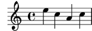
Al principi, el mode relatiu pot resultar una mica confús, però és la forma més senzilla d’introduir la major par de les melodies. Vegem com funciona en la pràctica aquest càlcul relatiu. Començant per Si, que està situat a la línia central en clau de Sol, podem arribar Do, Re i Mi dins dels tres espais de pentagrama cap amunt, i La, Sol i Fa dins del tres espais cap a baix. Per tant, si la nota següent a Si és Do, Re o Mi se suposarà que està per sobre del Si, mentre que La, Sol o Fa s’entendran situats per sota.
\relative { b' c % el Do està 1 espai per sobre, és el Do de dalt b d % el Re està 2 espais per sobre o 5 per sota, és el Re de dalt b e % el Mi està 3 espais per sobre o 4 per sota, és el Mi de dalt b a % el La està 6 espais per sobre o 1 per sota, és el La de sota b g % el Sol està 5 espais per sobre o 2 per sota, és el Sol de sota b f % el Fa està 4 espais per sobre o 3 per sota, és el F de sota }![[image of music]](7e/lily-b401cafc.png)
El mateix exactament passa quan qualssevol d’aquestes notes porten un sostingut o un bemoll. Les Alteracions accidentals s’ ignoren totalment al càlcul de la posició relativa. Exactament el mateix compte d’espais de pentagrama es fa a partir d’una nota situada en qualsevol altre lloc del mateix pentagrama.
Per afegir intervals més grans que tres espais de pentagrama, podem
elevar una octava afegint una cometa simple ' (o
apòstrof) a continuació del nom de la nota. També podem baixar
una octava escrivint una coma , a continuació del nom de la
nota.
\relative { a' a, c' f, g g'' a,, f' }![[image of music]](38/lily-f0bb3690.png)
Per pujar o baixar una nota en dos (o més!) octaves, utilitzem
diverses '' o ,, (però teniu cura d’utilitzar dos
cometes simples '' i no una cometa doble " !)
| [ << Tutorial ] | [Top][Contents][Index] | [ Notació corrent >> ] |
| [ < Altures ] | [ Up: Notació senzilla ] | [ Silencis > ] |
Duracions (valors rítmics)
Glossari musical: beam, duration, whole note, half note, quarter note, dotted note.
La duració d’una nota s’especifica mitjançant un número
després del nom de la nota: 1 significa rodona,
2 significa blanca, 4 significa
negra i així successivament. Les barres de
corxera s’afegeixen automàticament.
Si no especifiqueu una duració, s’utilitza la duració prèvia per a la nota següent. La figura per omissió de la primera nota és una negra.
\relative { a'1 a2 a4 a8 a a16 a a a a32 a a a a64 a a a a a a a a2 }![[image of music]](33/lily-3a12ed1c.png)
Per crear notes amb puntet, afegiu un punt . al
número de la duració. La duració d’una nota amb puntet s’ha
d’especificar de forma explícita (és a dir: mitjançant un número).
\relative { a'4 a a4. a8 a8. a16 a a8. a8 a4. }![[image of music]](9d/lily-a6d84595.png)
| [ << Tutorial ] | [Top][Contents][Index] | [ Notació corrent >> ] |
| [ < Duracions (valors rítmics) ] | [ Up: Notació senzilla ] | [ Indicació de compàs > ] |
Silencis
Glossari musical: rest.
Un silenci s’introdueix igual que si fos un anota amb
el nom r :
\relative { a'4 r r2 r8 a r4 r4. r8 }![[image of music]](d8/lily-bb7288ba.png)
| [ << Tutorial ] | [Top][Contents][Index] | [ Notació corrent >> ] |
| [ < Silencis ] | [ Up: Notació senzilla ] | [ Indicacions de tempo > ] |
Indicació de compàs
Glossari musical: time signature.
La indicació de compàs es pot establir amb l’ordre
\time :
\relative { \time 3/4 a'4 a a \time 6/8 a4. a \time 4/4 a4 a a a }![[image of music]](72/lily-6cddc8e7.png)
| [ << Tutorial ] | [Top][Contents][Index] | [ Notació corrent >> ] |
| [ < Indicació de compàs ] | [ Up: Notació senzilla ] | [ Clau > ] |
Indicacions de tempo
Glossari musical: tempo indication, metronome.
La indicació de tempo i la indicació
de metrònom poden establir-se amb l’ordre \tempo:
\relative { \time 3/4 \tempo "Andante" a'4 a a \time 6/8 \tempo 4. = 96 a4. a \time 4/4 \tempo "Presto" 4 = 120 a4 a a a }![[image of music]](81/lily-66d09ee8.png)
| [ << Tutorial ] | [Top][Contents][Index] | [ Notació corrent >> ] |
| [ < Indicacions de tempo ] | [ Up: Notació senzilla ] | [ Tot a l’hora > ] |
Clau
Glossari musical: clef.
La clau es pot establir utilitzant l’ordre
\clef :
\relative { \clef "treble" c'1 \clef "alto" c1 \clef "tenor" c1 \clef "bass" c1 }![[image of music]](df/lily-3c964d85.png)
| [ << Tutorial ] | [Top][Contents][Index] | [ Notació corrent >> ] |
| [ < Clau ] | [ Up: Notació senzilla ] | [ Treball sobre els fitxers d’entrada > ] |
Tot a l’hora
Aquí teniu un petit exemple que mostra tots els elements anteriors a l’hora:
\relative { \clef "bass" \time 3/4 \tempo "Andante" 4 = 120 c,2 e8 c' g'2. f4 e d c4 c, r }![[image of music]](e0/lily-c8bce195.png)
Vegeu també
Referència de la notació: Escriptura de notes, Escriptura de les duracions (valors rítmics), Escriptura dels silencis, Indicació de compàs, Clau.
| [ << Tutorial ] | [Top][Contents][Index] | [ Notació corrent >> ] |
| [ < Tot a l’hora ] | [ Up: Com escriure fitxers d’entrada ] | [ Gestió dels errors > ] |
2.2.2 Treball sobre els fitxers d’entrada
Els fitxers d’entrada del LilyPond són com els fitxers font de
molts llenguatges de programació corrents. Contenen un enunciat
de versió, són sensibles a les majúscules i generalment els espais
s’ignoren. Les expressions es formen amb claus
{ } i els comentaris es denoten per un signe de
percentatge (%) o per %{ … %} .
Si no enteneu res de la frase anterior, no us preocupeu! A continuació explicarem el significat de tots aquests termes:
- Enunciat de la versió: Tot fitxer del LilyPond ha de
contenir un enunciat de versió. Un enunciat de versió és una
línia que descriu la versió del LilyPond per a la es va escriure
aquest fitxer, com a l’exemple següent:
\version "2.26.0"
Per conveni, l’enunciat de versió es col·loca al principi del fitxer del LilyPond.
L’enunciat de versió és important per dos motius com a mínim. En primer lloc, permet l’actualització automàtica del codi d’entrada conforme es va modificant la sintaxi del LilyPond. En segon lloc, indica la versió del LilyPond que es necessita per compilar el fitxer.
Si no s’escriu cap enunciat de versió al fitxer d’entrada, el LilyPond imprimeix un advertiment durant la compilació del fitxer.
- Sensible a les majúscules: el fet que s’introdueixi una
lletra en minúscules (per exemple
a, b, s, t) o en majúscules (per exempleA, B, S, T) té importància. Les notes són minúscules: ‘{ c d e }’ és una entrada vàlida; ‘{ C D E }’ produiria un missatge d’error. - Insensible al nombre d’espais: no importa quants espais
(o salts de línia o de tabulació) afegiu.
‘{ c4 d e }’ significa el mateix que
‘{ c4 d e }’ i que
{ c4 d e }Per suposat, l’exemple anterior és difícil de llegir. Una regla pràctica és sagnar els blocs de codi amb un caràcter de tabulació, o bé amb dos espais:
{ c4 d e }No obstant, sí es necessiten espais per separar molts elements sintàctics els uns dels altres. En altres paraules, els espais es poden sempre afegir, però no sempre eliminar. Degut a què la manca d’espais pot donar lloc a errors estranys, recomanem inserir espais sempre abans i després de qualsevol element sintàctic, per exemple, abans i després de les claus.
- Expressions: Tot fragment de codi d’entrada per al
LilyPond ha de portar { claus } abans i
després de l’entrada. Aquestes claus li diuen al LilyPond que
l’entrada és una expressió musical unitària, igual que els
parèntesis ‘()’ de les matemàtiques. Les claus han
d’anar rodejades d’un espai a no ser que es trobin al començament o
al final d’una línia, per evitar qualsevol ambigüitat.
Una instrucció del LilyPond seguida d’una expressió simple entre claus (com per exemple ‘
\relative c' {… }’) també és una expressió musical unitària. -
Comentaris: Un comentari és una nota per al lector humà
de l’entrada musical; s’ignora quan s’analitza aquesta entrada, de
manera que no té cap efecte sobre la sortida impresa. Hi ha dos
tipus de comentaris. El símbol de percentatge ‘%’ introdueix
un comentari de línia; s’ignora tot el que es troba després de
‘%’ a aquesta línia. Per conveni, una línia de comentari es
col·loca per sobre del codi a què es refereix el comentari.
a4 a a a % aquest comentari es refereix a les notes Si b2 b
Un comentari de bloc marca una secció sencera d’entrada musical com a comentari. Tot el que esta envoltat dins de
%{i%}s’ignora (però els comentaris no poden niuar-se, cosa que significa que un comentari de bloc no pot incloure altres comentaris de bloc). Si ho fes, el primer%}donaria per acabat els dos comentaris de bloc. El següent fragment mostra alguns possibles usos per als comentaris:% a continuació van les notes de twinkle twinkle c4 c g' g a a g2 %{ Aquesta línia i les notes que apareixen a sota s'ignoren, per estar dins d'un comentari de bloc. f4 f e e d d c2 %}
| [ << Tutorial ] | [Top][Contents][Index] | [ Notació corrent >> ] |
| [ < Treball sobre els fitxers d’entrada ] | [ Up: Tutorial ] | [ Consells generals de solució de problemes > ] |
2.3 Gestió dels errors
A vegades el LilyPond no produeix el resultat esperat. Aquesta secció aporta alguns enllaços per ajudar-vos a resoldre els problemes que pugueu trobar.
| 2.3.1 Consells generals de solució de problemes | ||
| 2.3.2 Alguns errors comuns |
| [ << Tutorial ] | [Top][Contents][Index] | [ Notació corrent >> ] |
| [ < Gestió dels errors ] | [ Up: Gestió dels errors ] | [ Alguns errors comuns > ] |
2.3.1 Consells generals de solució de problemes
La solució de problemes al LilyPond pot ser un desafiament per a les persones acostumades als interfícies gràfics, perquè és possible crear fitxers d’entrada invàlids. Quan passa això, la millor manera d’identificar i resoldre el problema és aplicar un enfocament lògic. A Solució de problemes es donen algunes guies per ajudar-vos a aprendre a fer-lo.
| [ << Tutorial ] | [Top][Contents][Index] | [ Notació corrent >> ] |
| [ < Consells generals de solució de problemes ] | [ Up: Gestió dels errors ] | [ Com llegir els manuals > ] |
2.3.2 Alguns errors comuns
Hi ha alguns errors comuns que són difícils de solucionar si ens basem solament als missatges d’errors que se’ns presenten. Aquests errors es descriuen a Errors comuns.
| [ << Tutorial ] | [Top][Contents][Index] | [ Notació corrent >> ] |
| [ < Alguns errors comuns ] | [ Up: Tutorial ] | [ Material omès > ] |
2.4 Com llegir els manuals
Aquesta secció mostra com llegir la documentació de forma eficient, i presenta algunes funcionalitats interactives de la versió en línia.
| 2.4.1 Material omès | ||
| 2.4.2 Exemples amb enllaç | ||
| 2.4.3 Panoràmica dels manuals |
| [ << Tutorial ] | [Top][Contents][Index] | [ Notació corrent >> ] |
| [ < Com llegir els manuals ] | [ Up: Com llegir els manuals ] | [ Exemples amb enllaç > ] |
2.4.1 Material omès
Com ja hem vist a Treball sobre els fitxers d’entrada
codi d’entrada del LilyPond ha d’estar rodejat de claus
{ } o de
‘\relative c'' { … }’. Durant la resta
del manual actual, la major part dels exemple ometran les
claus. Per a reproduir els exemples, haureu de copiar i
enganxar l’entrada que es mostra, però haureu d’escriure
el ‘\relative c'' { … }’, de la forma següent:
\relative c'' {
…aquí va l'exemple…
}
Perquè ometre les claus? Gairebé tots els exemples del manual
actual es poden inserir al mig d’un fragment més gran de
música. Per a aquests exemple no té cap sentit afegir
‘\relative c'' { … }’
(no hauríeu de posar un \relative dins d’altre
\relative!); si haguéssim inclòs
‘\relative c'' { … }’
envoltant a cadascú dels exemples, no podríeu copiar un exemple
petit procedent de la documentació i enganxar-lo dins de la seva
pròpia partitura. La major part de la gent voldrà inserir el codi
dins d’una partitura més gran, és per això que hem formatat el
manual d’aquesta manera.
Recordeu també que tot fitxer del LilyPond ha de portar un
enunciat \version. Considerant que els exemple dels
manuals són fragments de codi i no fitxers complets, l’enunciat
\version s’omet. Tot i així, ens hem d’acostumar a
incloure’ls als nostres documents.
| [ << Tutorial ] | [Top][Contents][Index] | [ Notació corrent >> ] |
| [ < Material omès ] | [ Up: Com llegir els manuals ] | [ Panoràmica dels manuals > ] |
2.4.2 Exemples amb enllaç
Nota: Aquesta funcionalitat sols està disponible al manuals en HTML.
Moltes persones aprendran a utilitzar programes provant i trastejant amb ells. Això també es pot fer amb el LilyPond. Si cliqueu sobre una imatge a la versió en HTML d’aquest manual, podreu veure l’entrada exacta del LilyPond que es va fer servir per generar aquesta imatge. Proveu-lo sobre aquesta imatge:
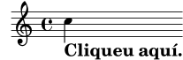
Tallent i enganxant tot el que es troba dins de la secció “ly snippet” (fragment de tipus ly), tindreu una plantilla inicial per als vostres experiments. Per poder veure exactament el mateix resultat (amb la mateixa amplada i tot), copieu tot el que hi ha des de “Start cut-&-pastable section” fins al final del fitxer.
| [ << Tutorial ] | [Top][Contents][Index] | [ Notació corrent >> ] |
| [ < Exemples amb enllaç ] | [ Up: Com llegir els manuals ] | [ Notació corrent > ] |
2.4.3 Panoràmica dels manuals
Hi ha molt abundant documentació sobre el LilyPond. Els nous usuaris es troben desorientats amb freqüència en quant a quina part o quines parts han de llegir, i ocasionalment passen per alt la lectura de parts d’importància vital.
Nota: Si us plau: no us salteu les parts importants de la documentació. Us resultarà molt més difícil comprendre les seccions subsegüents.
- Abans d’intentar fer qualsevol cosa: llegiu el Tutorial del manual d’Aprenentatge, i la secció Notació corrent. Si trobeu termes musicals que no reconeixeu, busqueu-los al Glossari.
- Abans d’intentar escriure una peça completa de música: llegiu la secció Conceptes fonamentals del manual d’Aprenentatge . Després us vindrà bé consultar les seccions corresponents de la Referència de la notació.
- Abans d’intentar de modificar els resultats predeterminats: llegiu la secció Ajustament de la sortida del manual d’Aprenentatge.
- Abans d’afrontar un projecte gran: llegiu la secció Suggeriments per escriure fitxers d’entrada del manual d’utilització del programa.
| [ << Tutorial ] | [Top][Contents][Index] | [ Conceptes fonamentals >> ] |
| [ < Panoràmica dels manuals ] | [ Up: Top ] | [ Notació en un sol pentagrama > ] |
3 Notació corrent
Aquest capítol explica com crear boniques partitures que continguin notació musical comú, com a continuació al material que està al Tutorial.
| 3.1 Notació en un sol pentagrama | ||
| 3.2 Diverses notes a l’hora | ||
| 3.3 Cançons | ||
| 3.4 Retocs finals |
| [ << Notació corrent ] | [Top][Contents][Index] | [ Conceptes fonamentals >> ] |
| [ < Notació corrent ] | [ Up: Notació corrent ] | [ Línies divisòries i comprovacions de compàs > ] |
3.1 Notació en un sol pentagrama
Aquesta secció presenta la notació comú que s’utilitza per a música a una veu sobre un pentagrama únic.
| [ << Notació corrent ] | [Top][Contents][Index] | [ Conceptes fonamentals >> ] |
| [ < Notació en un sol pentagrama ] | [ Up: Notació en un sol pentagrama ] | [ Línies divisòries > ] |
3.1.1 Línies divisòries i comprovacions de compàs
| Línies divisòries | ||
| Comprovacions de compàs |
Línies divisòries
Les línies de compàs senzilles es dibuixen automàticament a la
música, per la qual cosa no s’han d’afegir de forma manual.
Altres tipus de barres de compàs s’afegeixen usant \bar, per
exemple \bar "||" per a una doble barra, o \bar "|."
per a la doble barra final. Per veure una llista completa de les
línies divisòries, consulteu Barres de compàs.
\relative { g'1 e1 \bar "||" c2. c'4 \bar "|." }![[image of music]](b2/lily-fdd64512.png)
| [ << Notació corrent ] | [Top][Contents][Index] | [ Conceptes fonamentals >> ] |
| [ < Línies divisòries ] | [ Up: Línies divisòries i comprovacions de compàs ] | [ Alteracions accidentals i armadures > ] |
Comprovacions de compàs
Tot i que no es estrictament necessari, és convenient utilitzar
comprovacions de compàs dins del codi d’entrada per a
indicar on se suposa que van les línies divisòries.
S’introdueixen mitjançant el caràcter de barra vertical, |
(AltGr -1 al teclat català). Amb les comprovacions de compàs, el
programa pot verificar que hem introduït les duracions que
completen els compassos correctament. Les comprovacions de compàs
també fan que el codi d’entrada sigui més fàcil de llegir, perquè
ajuden a organitzar el material.
\relative { g'1 | e1 | c2. c' | g4 c g e | c4 r r2 | }![[image of music]](bc/lily-2eccc51c.png)
Si compileu el codi anterior, veureu un advertiment a la sortida de la consola:
advertiment: la comprovació de compàs ha fallat a: 1/2
g'1 | e1 | c2. c'
| g4 c g e | c4 r r2 |
Tot i que la duració que falta està clara a la sortida musical
d’aquest exemple senzill, l’advertiment de la sortida de consola
es molt més efectiva en atraure l’atenció concretament al 4
que falta al compàs 3.
Vegeu també
Referència de la notació: Comprovació de compàs i de número de compàs.
| [ << Notació corrent ] | [Top][Contents][Index] | [ Conceptes fonamentals >> ] |
| [ < Comprovacions de compàs ] | [ Up: Notació en un sol pentagrama ] | [ Alteracions accidentals > ] |
3.1.2 Alteracions accidentals i armadures
Nota: Freqüentment els nous usuaris es confonen amb les alteracions accidentals: us preguem que llegeixi l’advertiment que apareix al final d’aquesta secció, especialment si no teniu familiaritat amb la teoria musical!
| Alteracions accidentals | ||
| Armadures | ||
| Advertiment: armadures i altures |
| [ << Notació corrent ] | [Top][Contents][Index] | [ Conceptes fonamentals >> ] |
| [ < Alteracions accidentals i armadures ] | [ Up: Alteracions accidentals i armadures ] | [ Armadures > ] |
Alteracions accidentals
Glossari musical: sharp, flat, double sharp, double flat, accidental.
Al LilyPond, els noms de les notes identifiquen altures. Per
exemple, c sempre significa Do natural, qualsevol que sigui
l’armadura.
Una nota amb sostingut es fa afegint is al nom,
i una nota bemoll afegint es. Como heu pogut
endevinar, un doble sostingut o doble
bemol es fa afegint isis o eses. Aquesta sintaxi
deriva de les convencions de nomenclatura de les notes en les
llengües nòrdiques i germàniques com l’alemany i l’holandès. Per
utilitzar altres noms per a les alteracions
accidentals, vegeu Noms de les notes en altres llengües.
\relative { cis''4 ees fisis, aeses }![[image of music]](f6/lily-c6b13f9e.png)
| [ << Notació corrent ] | [Top][Contents][Index] | [ Conceptes fonamentals >> ] |
| [ < Alteracions accidentals ] | [ Up: Alteracions accidentals i armadures ] | [ Advertiment: armadures i altures > ] |
Armadures
Glossari musical: key signature, major, minor.
La armadura de la tonalitat se estableix mitjançant la
instrucció \key seguit d’una nota i \major o
\minor.
\key d \major a1 | \key c \minor a1 |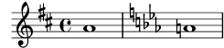
| [ << Notació corrent ] | [Top][Contents][Index] | [ Conceptes fonamentals >> ] |
| [ < Armadures ] | [ Up: Alteracions accidentals i armadures ] | [ Lligadures d’unió i d’expressió > ] |
Advertiment: armadures i altures
Glossari musical: accidental, key signature, pitch, flat, natural, sharp, transposition, Pitch names.
El LilyPond distingeix entre el contingut musical i la seva
representació impresa. Una entrada com d4 e fis2 defineix
les altures i les duracions de les notes, el que és el contingut
musical. La armadura forma part de la representació
impresa. L’armadura també estableix regles per a les
representacions impreses de les notes. El LilyPond compara
l’altura de cada nota de l’entrada amb l’armadura per determinar
si imprimir, o no, una alteració accidental.
L’ordre \key fixa la armadura, que afecta a la
representació impresa, però no modifica l’altura assignada
a una nota qualsevol com c a partir de l’entrada.
Al següent exemple:
\relative { \key d \major cis''4 d e fis }![[image of music]](a5/lily-8443995d.png)
Cap nota porta una alteració impresa, però de totes maneres heu
d’escriure l’ is a cis i a fis al fitxers
d’entrada.
El text b no significa “imprimir una boleta negra a la
tercera línia del pentagrama.” El que significa en realitat:
“hi ha una nota Si natural.” A la tonalitat de La bemoll
major, porta una alteració accidental:
\relative { \key aes \major aes'4 c b c }![[image of music]](0f/lily-38628f86.png)
Cada cop que escriviu una nota corresponent a una tecla negra del
piano, heu d’afegir -is o -es al nom
de la nota.
Posar totes les alteracions de forma explícita pot requerir quelcom més de feina en teclejar, però l’avantatge és que la transposició és més fàcil, i les alteracions es poden imprimir seguint diverses convencions diferents. Consulteu Alteracions accidentals automàtiques per veure exemple de com es poden imprimir les alteracions d’acord amb regles diferents.
Vegeu també
Referència de la notació: Noms de les notes en altres llengües, Alteracions accidentals, Alteracions accidentals automàtiques, Armadura de la tonalitat.
| [ << Notació corrent ] | [Top][Contents][Index] | [ Conceptes fonamentals >> ] |
| [ < Advertiment: armadures i altures ] | [ Up: Notació en un sol pentagrama ] | [ Lligadures d’unió > ] |
3.1.3 Lligadures d’unió i d’expressió
| Lligadures d’unió | ||
| Lligadures d’expressió | ||
| Lligadures de fraseig | ||
| Advertiments: lligadures d’expressió en front a lligadures d’unió |
| [ << Notació corrent ] | [Top][Contents][Index] | [ Conceptes fonamentals >> ] |
| [ < Lligadures d’unió i d’expressió ] | [ Up: Lligadures d’unió i d’expressió ] | [ Lligadures d’expressió > ] |
Lligadures d’unió
Glossari musical: tie.
Una lligadura d’unió es crea adjuntant un caràcter
d’accent ~ a la primera nota lligada:
\relative { g'4~ 4 c2~ | 4~ 8 a~ 2 | }![[image of music]](bb/lily-1c638c8f.png)
| [ << Notació corrent ] | [Top][Contents][Index] | [ Conceptes fonamentals >> ] |
| [ < Lligadures d’unió ] | [ Up: Lligadures d’unió i d’expressió ] | [ Lligadures de fraseig > ] |
Lligadures d’expressió
Glossari musical: slur.
Una lligadura d’expressió és una corba que es traça
abastant diverses notes. Les notes inicial i final es marquen
mitjançant ( y ) respectivament.
\relative { d''4( c16) cis( d e c cis d) e( d4) }![[image of music]](13/lily-1b87b9d4.png)
Lligadures de fraseig
Glossari musical: slur, phrasing.
Les lligadures que s’utilitzen per indicar fraseigs més
llargs es poden introduir mitjançant \( i \). Poden
haver-hi a l’hora lligadures de legato i lligadures de fraseig,
però no és possible tenir legatos simultanis o lligadures
d’expressió simultànies.
\relative { g'4\( g8( a) b( c) b4\) }![[image of music]](49/lily-ac61a4c6.png)
| [ << Notació corrent ] | [Top][Contents][Index] | [ Conceptes fonamentals >> ] |
| [ < Lligadures de fraseig ] | [ Up: Lligadures d’unió i d’expressió ] | [ Articulacions i matisos dinàmics > ] |
Advertiments: lligadures d’expressió en front a lligadures d’unió
Glossari musical: articulation, slur, tie.
Una lligadura d’expressió sembla una lligadura d’unió, però té un significat diferent. Una lligadura (d’unió) senzillament feu que la primera nota sigui més llarga, i sols es pot utilitzar sobre parelles de notes iguals. Les lligadures d’expressió indiquen la articulació de les notes, i es poden utilitzar sobre grups majors de notes. Les lligadures d’unió i d’expressió es poden niuar unes a dins de les altres.
\relative { c''4(~ c8 d~ 4 e) }![[image of music]](86/lily-2660565d.png)
Vegeu també
Referència de la notació: Lligadures d’unió, Lligadures d’expressió, Lligadures de fraseig.
| [ << Notació corrent ] | [Top][Contents][Index] | [ Conceptes fonamentals >> ] |
| [ < Advertiments: lligadures d’expressió en front a lligadures d’unió ] | [ Up: Notació en un sol pentagrama ] | [ Articulacions > ] |
3.1.4 Articulacions i matisos dinàmics
| Articulacions | ||
| Indicacions de digitació | ||
| Matisos dinàmics |
| [ << Notació corrent ] | [Top][Contents][Index] | [ Conceptes fonamentals >> ] |
| [ < Articulacions i matisos dinàmics ] | [ Up: Articulacions i matisos dinàmics ] | [ Indicacions de digitació > ] |
Articulacions
Glossari musical: articulation.
Les articulacions més corrents es poden afegir a les
notes utilitzant un guió - seguit d’un caràcter únic:
\relative { c''4-^ c-+ c-- c-! c4-> c-. c2-_ }![[image of music]](4f/lily-8dee54b0.png)
| [ << Notació corrent ] | [Top][Contents][Index] | [ Conceptes fonamentals >> ] |
| [ < Articulacions ] | [ Up: Articulacions i matisos dinàmics ] | [ Matisos dinàmics > ] |
Indicacions de digitació
Glossari musical: fingering.
De manera similar, les digitacions es poden afegir a
una nota utilitzant un guió (-) seguit del dígit desitjat:
\relative { c''4-3 e-5 b-2 a-1 }![[image of music]](15/lily-9c631223.png)
Les articulacions i digitacions normalment es col·loquen de forma
automàtica, però podeu especificar una direcció mitjançant
^ (a sobre) o _ (a sota). També podeu usar diverses
articulacions sobre la mateixa nota. No obstant, gairebé sempre és
millor deixar que el LilyPond determini la direcció de les
articulacions.
\relative { c''4_-^1 d^. f^4_2-> e^-_+ }![[image of music]](c9/lily-b330b4a5.png)
| [ << Notació corrent ] | [Top][Contents][Index] | [ Conceptes fonamentals >> ] |
| [ < Indicacions de digitació ] | [ Up: Articulacions i matisos dinàmics ] | [ Addició de text > ] |
Matisos dinàmics
Glossari musical: dynamics, crescendo, decrescendo.
Les expressions de matís o signes dinàmics es fan afegint les marques (amb una barra invertida) a la nota:
\relative { c''4\ff c\mf c\p c\pp }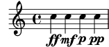
Els crescendi i decrescendi comencen amb les
ordres \< i \>. La següent indicació de matís, com
per exemple \f, acabarà el (de)crescendo, o bé es pot usar
la instrucció \!:
\relative { c''4\< c\ff\> c c\! }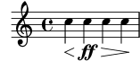
Vegeu també
Referència de la notació: Articulacions i ornaments, Indicacions de digitació, Matisos dinàmics.
| [ << Notació corrent ] | [Top][Contents][Index] | [ Conceptes fonamentals >> ] |
| [ < Matisos dinàmics ] | [ Up: Notació en un sol pentagrama ] | [ Barres automàtiques i manuals > ] |
3.1.5 Addició de text
És possible afegir text a la partitura:
c''2^"espr" a'_"legato"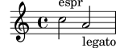
Es pot aplicar un format addicional mitjançant la instrucció
\markup:
c''2^\markup { \bold espr } a'2_\markup { \dynamic f \italic \small { 2nd } \hspace #0.1 \dynamic p }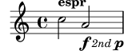
Vegeu també
Referència de la notació: Escriptura del text.
| [ << Notació corrent ] | [Top][Contents][Index] | [ Conceptes fonamentals >> ] |
| [ < Addició de text ] | [ Up: Notació en un sol pentagrama ] | [ Instruccions rítmiques avançades > ] |
3.1.6 Barres automàtiques i manuals
Glossari musical: beam.
Totes les barres de les figures es dibuixen automàticament:
\relative { a'8 ais d ees r d c16 b a8 }![[image of music]](c3/lily-f5369027.png)
Si no us agraden les barres automàtiques, poden forçar-se
manualment. Marqueu la primera nota que comprèn la barra amb
[ i la última amb ].
\relative { a'8[ ais] d[ ees r d] c16 b a8 }![[image of music]](2c/lily-88e7d366.png)
Si voleu desactivar completament el barrat automàtic o per a una
secció extensa de música, utilitzeu l’ordre \autoBeamOff
per desactivar-lo i \autoBeamOn para activar-lo un altre
cop.
\relative { \autoBeamOff a'8 c b4 d8. c16 b4 | \autoBeamOn a8 c b4 d8. c16 b4 | }![[image of music]](1b/lily-bc157bd7.png)
Vegeu també
Referència de la notació: Barres automàtiques, Barres manuals.
| [ << Notació corrent ] | [Top][Contents][Index] | [ Conceptes fonamentals >> ] |
| [ < Barres automàtiques i manuals ] | [ Up: Notació en un sol pentagrama ] | [ Compàs parcial > ] |
3.1.7 Instruccions rítmiques avançades
| Compàs parcial | ||
| Grups especials | ||
| Notes d’adorn |
| [ << Notació corrent ] | [Top][Contents][Index] | [ Conceptes fonamentals >> ] |
| [ < Instruccions rítmiques avançades ] | [ Up: Instruccions rítmiques avançades ] | [ Grups especials > ] |
Compàs parcial
Glossari musical: anacrusis.
Una anacrusi s’introdueix amb la paraula clau
\partial. Va seguida d’una duració: \partial 4 és
una anacrusi de negra i \partial 8 de corxera.
\relative { \partial 8 f''8 | c2 d | }![[image of music]](22/lily-7141ef1d.png)
| [ << Notació corrent ] | [Top][Contents][Index] | [ Conceptes fonamentals >> ] |
| [ < Compàs parcial ] | [ Up: Instruccions rítmiques avançades ] | [ Notes d’adorn > ] |
Grups especials
Glossari musical: valor de la nota, treset.
Els grups especials com ara els tresets es fan amb la paraula clau
\tuplet. Requereix dos arguments: una fracció i un
fragment de música. La fracció és el nombre de notes del grup
partit pel nombre de notes que normalment ocupen la mateixa
duració. Per als tresets hi ha tres notes a l’espai de dues, de
manera que els tresets es fan amb una fracció de 3/2.
\relative { \tuplet 3/2 { f''8 g a } \tuplet 3/2 { c8 r c } \tuplet 3/2 { f,8 g16[ a g a] } \tuplet 3/2 { d4 a8 } }![[image of music]](8d/lily-62792834.png)
| [ << Notació corrent ] | [Top][Contents][Index] | [ Conceptes fonamentals >> ] |
| [ < Grups especials ] | [ Up: Instruccions rítmiques avançades ] | [ Diverses notes a l’hora > ] |
Notes d’adorn
Glossari musical: grace notes, acciaccatura, appoggiatura.
Les notes d’adorn es creen amb l’ordre
\grace, tot i que també es poden aconseguir precedint una
expressió musical amb la paraula clau \appoggiatura o
\acciaccatura.
\relative { c''2 \grace { a32 b } c2 | c2 \appoggiatura b16 c2 | c2 \acciaccatura b16 c2 | }![[image of music]](1c/lily-5a2d6dd9.png)
Vegeu també
Referència de la notació: Notes d’adorn, Grups especials, Anacrusis.
| [ << Notació corrent ] | [Top][Contents][Index] | [ Conceptes fonamentals >> ] |
| [ < Notes d’adorn ] | [ Up: Notació corrent ] | [ Explicació de les expressions musicals > ] |
3.2 Diverses notes a l’hora
Aquesta secció és una introducció a les notes simultànies: diversos instruments, diversos pentagrames per a un sol instrument (per exemple piano) i acords.
La paraula “polifonia” en música fa referència al fet de tenir més d’una veu en un moment determinat dins d’una peça musical. La paraula “polifonia” al LilyPond es refereix al fet de tenir més d’una veu al mateix pentagrama.
| 3.2.1 Explicació de les expressions musicals | ||
| 3.2.2 Diversos pentagrames | ||
| 3.2.3 Grups de pentagrames | ||
| 3.2.4 Combinar notes per formar acords | ||
| 3.2.5 Polifonia a un sol pentagrama |
| [ << Notació corrent ] | [Top][Contents][Index] | [ Conceptes fonamentals >> ] |
| [ < Diverses notes a l’hora ] | [ Up: Diverses notes a l’hora ] | [ Analogia: expressions matemàtiques > ] |
3.2.1 Explicació de les expressions musicals
Als fitxers d’entrada del LilyPond, la música es representa mitjançant expressions musicals. Una sola nota és una expressió musical:
a'4![[image of music]](89/lily-9110be04.png)
En tancar un grup de notes dins de claus creem una expressió musical composta. Aquí hem creat una expressió musical composta amb dues notes:
\relative { a'4 g4 }![[image of music]](44/lily-348b91cf.png)
Si col·loquem un grup d’expressions musicals (per exemple: notes) dins de claus, això significa que es troben en seqüència (és a dir, cada una segueix a l’anterior). El resultat és una altra expressió musical:
\relative { { a'4 g } f4 g }![[image of music]](be/lily-fee0e1b2.png)
| Analogia: expressions matemàtiques | ||
| Expressions musicals simultànies: diversos pentagrames | ||
| Expressions musicals simultànies: un sol pentagrama |
Analogia: expressions matemàtiques
Aquest mecanisme és semblant a les fórmules matemàtiques: una fórmula gran es construeix combinant fórmules petites. Aquestes fórmules es diuen expressions, i la seva definició és recursiva de tal manera que es poden construir expressions d’una mida i complexitat arbitràries. Per exemple:
1 1 + 2 (1 + 2) * 3 ((1 + 2) * 3) / (4 * 5)
Això és una seqüència d’expressions on cada expressió es troba
continguda dins de la següent, més gran. Les expressions més
simples són números, i les majors es fan combinant expressions
mitjançant operadors (coma ara +, * i /) i
parèntesis. De la mateixa manera es pot niuar a una profunditat
arbitrària, el que es fa necessari per a músiques complexes com ara
les partitures polifòniques.
Expressions musicals simultànies: diversos pentagrames
Glossari musical: polyphony.
Aquesta tècnica és molt útil per a la música
polifònica. Per introduir música amb més veus o amb
més pentagrames, el que fem és combinar diverses expressions en
paral·lel. Per indicar que dues veus s’han d’interpretar al
mateix temps, senzillament introduïu una combinació simultània
d’expressions musicals. Una expressió musical ‘simultània’ es
forma tancant les expressions dins de << y >>. A
l’exemple que segueix, tres seqüències (cadascuna de les quals
conté dues notes diferents) es combinen de forma simultània:
<< \relative { a'2 g } \relative { f'2 e } \relative { d'2 b } >>![[image of music]](c4/lily-89a38849.png)
Tingueu en compte que hem sagnat cada nivell jeràrquic de l’entrada amb un marge diferent. Al LilyPond no li importa quant (o que poc) espai hi hagi al començament d’una línia però l’establiment de marges diferents dins del codi del LilyPond, d’aquesta forma, el fa molt més fàcil de llegir per a nosaltres els éssers humans.
Nota: Cada nota s’entén relativa a la nota anterior de
l’entrada, solament la primera és relativa a la c'' dins de
la instrucció inicial \relative.
Expressions musicals simultànies: un sol pentagrama
Per determinar el nombre de pentagrames a una peça, el LilyPond examina el començament de la primera expressió. Si hi ha una sola nota, hi ha un sol pentagrama; si hi ha una expressió simultània, hi ha més d’un pentagrama. El següent exemple presenta una expressió complexa, però com comença amb una sola nota, es disposa sobre un sols pentagrama.
\relative { c''2 <<c e>> | << { e2 f } { c2 <<b d>> } >> | }![[image of music]](01/lily-665622d9.png)
| [ << Notació corrent ] | [Top][Contents][Index] | [ Conceptes fonamentals >> ] |
| [ < Expressions musicals simultànies: un sol pentagrama ] | [ Up: Diverses notes a l’hora ] | [ Grups de pentagrames > ] |
3.2.2 Diversos pentagrames
Com ja hem vist a Explicació de les expressions musicals, els fitxers d’entrada per al LilyPond es construeixen a base d’expressions musicals. Si la partitura comença amb expressions musicals simultànies, el LilyPond crea diversos pentagrames. És més fàcil, no obstant, veure el que passa si creem cada u dels pentagrames de forma explícita.
Per imprimir més d’un pentagrama, cada fragment de música que
constitueix un pentagrama es marca escrivint \new Staff
abans d’ell. Aquests elements Staff es combinen després en
paral·lel amb << y >>:
<< \new Staff { \clef "treble" c''4 } \new Staff { \clef "bass" c4 } >>![[image of music]](68/lily-8c2ddf58.png)
L’ordre \new inaugura un ‘context de notació’. Un
context de notació és un entorn dins del què s’interpreten els
esdeveniments musicals (com les notes o les ordres \clef).
Per peces senzilles, els contextos d’aquest tipus es creen
automàticament. Per a peces més complicades, és millor marcar els
contextos de forma explícita.
Hi ha diverses classes de contextos. Score, Staff i
Voice gestionen la notació melòdica, mentre que
Lyrics s’ocupa dels textos cantats i ChordNames
imprimeix els noms dels acords.
En termes de sintaxi, l’anteposició de \new a una expressió
musical crea una expressió musical major. És semblant al signe
menys de les matemàtiques. La fórmula (4+5) és una
expressió, per tant -(4+5) és una expressió més àmplia.
Les indicacions de compàs escrites a un pentagrama afecten la resta d’ells, de forma predeterminada. En canvi, l’armadura de la tonalitat d’un pentagrama no afecta als altres pentagrames. Aquest comportament predeterminat diferent és a causa de què les partitures amb instruments transpositors són més comunes que les partitures polirítmiques.
<< \new Staff { \clef "treble" \key d \major \time 3/4 c''4 } \new Staff { \clef "bass" c4 } >>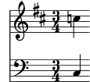
| [ << Notació corrent ] | [Top][Contents][Index] | [ Conceptes fonamentals >> ] |
| [ < Diversos pentagrames ] | [ Up: Diverses notes a l’hora ] | [ Combinar notes per formar acords > ] |
3.2.3 Grups de pentagrames
Glossari musical: brace, staff, system.
La música per a piano es composa tipogràficament en forma de dos
pentagrames units mitjançant una clau. L’aspecte
imprès d’aquest sistema de pentagrames se sembla a l’exemple
polifònic que apareix a Diversos pentagrames, però en aquest
cas l’expressió completa es col·loca dins d’un PianoStaff:
\new PianoStaff << \new Staff … \new Staff … >>
Heus aquí un petit exemple:
\new PianoStaff << \new Staff \relative { \time 2/4 c''4 e | g g, | } \new Staff \relative { \clef "bass" c4 c' | e c | } >>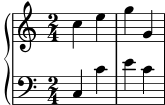
Altres grups de pentagrames es declaren mitjançant \new
GrandStaff, que és apropiat per a partitures orquestrals, i
\new ChoirStaff, que és apropiat per a partitures
vocals. Cadascú d’aquests grups de pautes forma un tipus de
context diferent, que produeix la clau a l’esquerra i que
també controla l’abast de les línies divisòries.
Vegeu també
Referència de la notació: Teclats i altres instruments de pentagrames múltiples, Visualització dels pentagrames.
| [ << Notació corrent ] | [Top][Contents][Index] | [ Conceptes fonamentals >> ] |
| [ < Grups de pentagrames ] | [ Up: Diverses notes a l’hora ] | [ Polifonia a un sol pentagrama > ] |
3.2.4 Combinar notes per formar acords
Glossari musical: chord.
Hem vist amb anterioritat com es poden combinar les notes formant acordes que indiquen que són simultànies, tancant-les entre dobles angles. La forma normal d’indicar un acord, però, és tancar les notes entre angles senzills. Observeu que totes les notes d’un acord han de tenir la mateixa duració, i que la duració s’escriu després de l’angle de tancament.
\relative { r4 <c'' e g> <c f a>2 }![[image of music]](90/lily-610bc6f9.png)
Hem de pensar que els acords són quelcom gairebé equivalent a les notes senzilles: gairebé tot el es pot adjuntar a una nota es pot adjuntar també a un acord, i tot ha d’anar per fora dels angles. Per exemple, podeu combinar marques com ara barres i lligadures, amb acords. Tan sols heu de recordar que s’escriuen per fora dels angles.
\relative { r4 <c'' e g>~ <c f a>2 | <c e g>8[ <c f a> <c e g> <c f a>] <c e g>8\>[ <c f a> <c f a> <c e g>]\! | r4 <c e g>8.\p <c f a>16( <c e g>4-. <c f a>) | }![[image of music]](f8/lily-d0e946e8.png)
Vegeu també
Referència de la notació: Notes a un acord.
| [ << Notació corrent ] | [Top][Contents][Index] | [ Conceptes fonamentals >> ] |
| [ < Combinar notes per formar acords ] | [ Up: Diverses notes a l’hora ] | [ Cançons > ] |
3.2.5 Polifonia a un sol pentagrama
La música polifònica al LilyPond, tot i que no és difícil, utilitza conceptes que encara no hem tractat, per la qual cosa no les presentarem en aquest moment. En comptes d’això, les seccions següents presenten aquests conceptes i els expliquen en profunditat.
Vegeu també
Manual d’aprenentatge: Les veus contenen música.
Referència de la notació: Notes simultànies.
| [ << Notació corrent ] | [Top][Contents][Index] | [ Conceptes fonamentals >> ] |
| [ < Polifonia a un sol pentagrama ] | [ Up: Notació corrent ] | [ Elaborar cançons senzilles > ] |
3.3 Cançons
En aquesta secció presentem com elaborar música vocal i fulls senzilles de cançó.
| 3.3.1 Elaborar cançons senzilles | ||
| 3.3.2 Alineació de la lletra a una melodia | ||
| 3.3.3 Lletra en diversos pentagrames |
| [ << Notació corrent ] | [Top][Contents][Index] | [ Conceptes fonamentals >> ] |
| [ < Cançons ] | [ Up: Cançons ] | [ Alineació de la lletra a una melodia > ] |
3.3.1 Elaborar cançons senzilles
Glossari musical: lyrics.
Presentem a continuació l’inici de la melodia d’una cançó infantil, “Girls and boys come out to play”:
\relative { \key g \major \time 6/8 d''4 b8 c4 a8 | d4 b8 g4 }![[image of music]](e9/lily-7384468c.png)
Es pot assignar la lletra a aquestes notes combinant
ambdues amb la paraula clau \addlyrics. La lletra s’escriu
separant cada síl·laba mitjançant un espai.
<< \relative { \key g \major \time 6/8 d''4 b8 c4 a8 | d4 b8 g4 } \addlyrics { Girls and boys come | out to play, } >>![[image of music]](72/lily-c8e35f43.png)
Observeu els angles dobles <<…>> al voltant del
fragment sencer per expressar que la música i la lletra han de
succeir al mateix temps.
| [ << Notació corrent ] | [Top][Contents][Index] | [ Conceptes fonamentals >> ] |
| [ < Elaborar cançons senzilles ] | [ Up: Cançons ] | [ Lletra en diversos pentagrames > ] |
3.3.2 Alineació de la lletra a una melodia
Glossari musical: melisma, extender line.
La següent línia de la cançó infantil és The moon doth shine as bright as day. A continuació l’ampliarem:
<< \relative { \key g \major \time 6/8 d''4 b8 c4 a8 | d4 b8 g4 g8 | a4 b8 c b a | d4 b8 g4. | } \addlyrics { Girls and boys come | out to play, The | moon doth shine as | bright as day; | } >>![[image of music]](e2/lily-87194b83.png)
Si compilem el codi de l’exemple anterior, veurem alguns missatges d’advertiment sobre la consola:
song.ly:12:29: warning: la comprovació de compàs ha fallat a: 5/8
The | moon doth shine as
| bright as day; |
song.ly:12:46: warning: la comprovació de compàs ha fallat a: 3/8
The | moon doth shine as | bright as day;
|
Aquest és un bon exemple de la utilitat de les comprovacions de compàs. Ara bé, si mirem la música, podem observar que la lletra addicional no s’alinea correctament amb les notes. La paraula ‘shine’ s’ha de cantar sobre dues notes, no una. Això es coneix com melisma, una síl·laba única que es canta sobre més d’una nota. Existeixen diverses formes de fer que una síl·laba recaigui sobre diverses notes, sent la més senzilla escriure una lligadura d’expressió sobre elles (vegeu Lligadures d’unió i d’expressió):
<< \relative { \key g \major \time 6/8 d''4 b8 c4 a8 | d4 b8 g4 g8 | a4 b8 c( b) a | d4 b8 g4. | } \addlyrics { Girls and boys come | out to play, The | moon doth shine as | bright as day; | } >>![[image of music]](1a/lily-55108a0d.png)
Ara la lletra s’alinea correctament amb les notes, però el barrat automàtic de les notes que corresponen a shine as no sembla correcte. Podem remeiar-lo inserint instruccions de barrat manual per sobreescriure el barrat automàtic; per veure més detalls consulteu Barres automàtiques i manuals.
<< \relative { \key g \major \time 6/8 d''4 b8 c4 a8 | d4 b8 g4 g8 | a4 b8 c([ b]) a | d4 b8 g4. | } \addlyrics { Girls and boys come | out to play, The | moon doth shine as | bright as day; | } >>![[image of music]](3b/lily-59d5cbe7.png)
Com alternativa a la utilització de lligadures d’expressió, els
melismes es poden indicar solament a la lletra utilitzant un guió
baix, _, per a cada nota que volem incloure dins del
melisma:
<< \relative { \key g \major \time 6/8 d''4 b8 c4 a8 | d4 b8 g4 g8 | a4 b8 c[ b] a | d4 b8 g4. | } \addlyrics { Girls and boys come | out to play, The | moon doth shine _ as | bright as day; | } >>![[image of music]](6d/lily-77f26ab9.png)
Si una síl·laba s’estén sobre diverses notes o una sola nota molt
llarga, normalment es traça una línia extensora des de
la síl·laba que s’estén i per sota de totes les notes que
corresponen a aquesta síl·laba. S’escriu com dos guions baixos
__. Heus aquí un exemple extret dels primers tres
compassos del Lament de Dido, de Dido i
Enees de Purcell:
<< \relative { \key g \minor \time 3/2 g'2 a bes | bes2( a) b2 | c4.( bes8 a4. g8 fis4.) g8 | fis1 } \addlyrics { When I am | laid, am | laid __ in | earth, } >>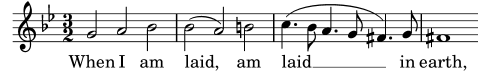
Fins al moment, cap dels exemples implicaven paraules que tinguessin més d’una síl·laba. Aquestes paraules es reparteixen en general a raó d’una nota per cada síl·laba, amb guions curts entre les síl·labes. Aquests guions separadors es teclegen com dos guions, amb el resultat d’un guió curt centrat entre les síl·labes. Presentem a continuació un exemple que demostra això i tot el que hem après fins aquest moment sobre l’alineació de la lletra a les notes.
<< \relative { \key g \major \time 3/4 \partial 4 d'4 | g4 g a8( b) | g4 g b8( c) | d4 d e | c2 } \addlyrics { A -- | way in a __ | man -- ger, no __ | crib for a | bed, __ } >>![[image of music]](52/lily-1de32ae6.png)
Alguns textos (especialment els que estan en italià o català)
requereixen el contrari: col·locar més d’una síl·laba a una única
nota. Això s’aconsegueix enllaçant les síl·labes entre sí
mitjançant un guió baix simple _ (sense cap espai), o bé
envoltant-les entre claus. Aquí apareix un exemple procedent
del Barber de Sevilla de Rossini, on la síl·laba
al es canta sobre la mateixa nota que la síl·laba
go de la paraula ‘Largo’ a l’ària de Fígaro
Largo al factotum:
<< \relative { \clef "bass" \key c \major \time 6/8 c'4.~ 8 d b | c8([ d]) b c d b | c8 } \addlyrics { Lar -- go_al fac -- | to -- tum del -- la cit -- | tà } >>![[image of music]](6e/lily-1ce5b221.png)
Vegeu també
Referència de la notació: Música vocal.
| [ << Notació corrent ] | [Top][Contents][Index] | [ Conceptes fonamentals >> ] |
| [ < Alineació de la lletra a una melodia ] | [ Up: Cançons ] | [ Retocs finals > ] |
3.3.3 Lletra en diversos pentagrames
La solució senzilla que utilitza \addlyrics es pot usar per
posar lletra a més d’un pentagrama. Aquí apareix un exemple tret
del Judas Macabeu de Haendel:
<< \relative { \key f \major \time 6/8 \partial 8 c''8 | c8([ bes]) a a([ g]) f | f'4. b, | c4.~ 4 } \addlyrics { Let | flee -- cy flocks the | hills a -- | dorn, __ } \relative { \key f \major \time 6/8 \partial 8 r8 | r4. r4 c'8 | a'8([ g]) f f([ e]) d | e8([ d]) c bes'4 } \addlyrics { Let | flee -- cy flocks the | hills a -- dorn, } >>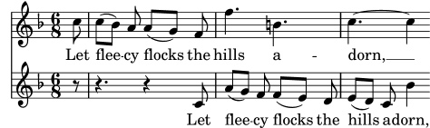
Qualsevol partitura d’una complexitat més gran que la d’aquest senzill exemple es fa millor separant la lletra de l’estructura de pentagrames mitjançant variables (expressions amb nom). Les variables es tracten a Organitzar les peces mitjançant variables.
Vegeu també
Referència de la notació: Música vocal.
| [ << Notació corrent ] | [Top][Contents][Index] | [ Conceptes fonamentals >> ] |
| [ < Lletra en diversos pentagrames ] | [ Up: Notació corrent ] | [ Organitzar les peces mitjançant variables > ] |
3.4 Retocs finals
Aquest és l’últim apartat del tutorial; mostra la forma de donar els retocs finals a peces senzilles, i ofereix una introducció a la resta del manual.
| 3.4.1 Organitzar les peces mitjançant variables | ||
| 3.4.2 Afegir títols | ||
| 3.4.3 Noms de nota absoluts | ||
| 3.4.4 Més enllà del tutorial |
| [ << Notació corrent ] | [Top][Contents][Index] | [ Conceptes fonamentals >> ] |
| [ < Retocs finals ] | [ Up: Retocs finals ] | [ Afegir títols > ] |
3.4.1 Organitzar les peces mitjançant variables
Quan els elements que hem discutit anteriorment es combinen per produir fitxers més grans, les expressions musicals es fan enormes. A la música polifònica amb molts pentagrames, els fitxers d’entrada poden tornar-se molt propensos a la confusió, Podem reduir aquesta confusió utilitzant les variables.
Amb les variables (també conegudes com identificadors o macros), podem trossejar les expressions musicals complexes. Una variable s’assigna de la manera següent:
musicaAmbNom = { … }
El contingut de l’expressió musical musicaAmbNom es pot
usar posteriorment col·locant una barra invertida davant del nom
(\musicaAmbNom, igual que una ordre normal del LilyPond).
violin = \new Staff { \relative { a'4 b c b } } cello = \new Staff { \relative { \clef "bass" e2 d } } { << \violin \cello >> }![[image of music]](5a/lily-6d5b09dd.png)
El nom d’una variable ha de consistir enterament de caràcters alfabètics, és a dir sense números, guions, ni guions baixos.
Les variables s’han de definir abans de l’expressió musical principal, però es poden usar tantes vegades com es vulgui, en qualsevol lloc, un cop que han estat definides. Fins i tot es poden usar dins de la definició d’una altra variable, proporcionant una via per escurçar el codi si una secció musical es repeteix moltes vegades.
tresilloA = \tuplet 3/2 { c,8 e g } compasA = { \tresilloA \tresilloA \tresilloA \tresilloA } \relative c'' { \compasA \compasA }![[image of music]](e2/lily-39bf7d1e.png)
Les variables es poden usar per a molts altres tipus d’objectes dins del codi d’entrada. Per exemple,
ancho = 4.5\cm
nombre = "Wendy"
papelAcinco = \paper { paper-height = 21.0 \cm }
Depenent del seu contingut, la variable es pot usar en diferents llocs. El següent exemple utilitza les variables anteriors:
\paper {
\papelAcinc
line-width = \ample
}
{
c4^\nom
}
| [ << Notació corrent ] | [Top][Contents][Index] | [ Conceptes fonamentals >> ] |
| [ < Organitzar les peces mitjançant variables ] | [ Up: Retocs finals ] | [ Noms de nota absoluts > ] |
3.4.2 Afegir títols
La informació sobre el títol, autor, número d’Opus i altres
elements similars s’escriuen al bloc \header. Aquest bloc
es troba fora de l’expressió musical principal: el bloc
\header normalment s’ubica per sota del número de versió.
\version "2.26.0"
\header {
title = "Sinfonia"
composer = "Jo"
opus = "Op. 9"
}
{
… música …
}
Quan es processa el fitxer, el títol i l’autor s’imprimeixen a sobre de la música. Podeu obtenir més informació sobre els títols a Creació de títols encapçalaments i peus de pàgina.
| [ << Notació corrent ] | [Top][Contents][Index] | [ Conceptes fonamentals >> ] |
| [ < Afegir títols ] | [ Up: Retocs finals ] | [ Més enllà del tutorial > ] |
3.4.3 Noms de nota absoluts
Fins al moment sempre hem utilitzat \relative per definir
les altures. Aquesta és normalment la forma més ràpida d’escriure
la major part de la música. Sense \relative, les altures
s’interpreten en mode absolut.
En aquest mode, el LilyPond tractarà totes les altures com valors
absoluts. Una c' significarà sempre un Do central,
una b significarà sempre la nota immediatament per sota del
Do central i una g, significarà sempre la nota que es
col·loca a la primera línia del pentagrama en clau de Fa.
{ \clef "bass" c'4 b g, g, | g,4 f, f c' | }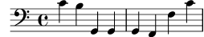
Heus aquí una escala que abasta quatre octaves:
{ \clef "bass" c,4 d, e, f, | g,4 a, b, c | d4 e f g | a4 b c' d' | \clef "treble" e'4 f' g' a' | b'4 c'' d'' e'' | f''4 g'' a'' b'' | c'''1 | }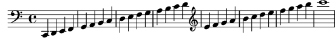
Com podeu veure, escriure una melodia en clau de Sol implica escriure una gran quantitat d’apòstrofs ‘’’ . Considerem aquest fragment de Mozart:
{ \key a \major \time 6/8 cis''8. d''16 cis''8 e''4 e''8 | b'8. cis''16 b'8 d''4 d''8 | }![[image of music]](92/lily-d90fc61e.png)
Tots aquests apòstrofs fan gairebé illegible el codi d’entrada i
serà origen de nombrosos errors. Amb \relative, l’exemple
anterior és molt més fàcil de llegir:
\relative { \key a \major \time 6/8 cis''8. d16 cis8 e4 e8 | b8. cis16 b8 d4 d8 | }![[image of music]](ac/lily-049ba55d.png)
Si feu un error amb una marca d’octava (' o ,)
mentre treballeu al mode \relative, serà molt obvi (moltes
notes estaran a l’octava equivocada). Mentre treballeu en mode
absolut, una sola fallada no serà tan visible, i tampoc no serà
tan fàcil de localitzar.
El mode absolut és útil però per escriure música que contingui intervals grans, i serà extremadament útil per fer fitxers del LilyPond generats per ordinador. Quan es copien i peguen fragments melòdics, el mode absolut preserva l’octava del material original.
A vegades la música es disposa en formes més complexes. Si esteu
usant \relative dins de \relative, les seccions
relatives externa i interna són independents:
\relative { c'4 \relative { f'' g } c }![[image of music]](ee/lily-a6cb7588.png)
Si esteu usant música absoluta dins d’un bloc de música relativa,
tindreu que marcar la música absoluta explícitament amb la
instrucció \absolute per evitar que s’incorpori a la música
relativa:
\relative { c'4 \absolute { f'' g'' } c }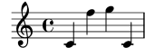
| [ << Notació corrent ] | [Top][Contents][Index] | [ Conceptes fonamentals >> ] |
| [ < Noms de nota absoluts ] | [ Up: Retocs finals ] | [ Conceptes fonamentals > ] |
3.4.4 Més enllà del tutorial
Després d’acabar el tutorial, potser hauríeu de provar a escriure una o dues peces. Comenceu amb una de les plantilles que apareixen a Plantilles i afegiu algunes notes. Si necessiteu un tipus de notació que no ha estat tractat en aquest tutorial, doneu una ullada a la Referència de Notació, començant per Notació musical. Si voleu escriure música per a un conjunt instrumental que no estigui cobert per cap plantilla, consulteu Extensió de les plantilles.
Un cop que heu escrit algunes peces curtes, llegiu la resta del Manual d’aprenentatge (capítols 3 al 5). Per suposat no passa res per llegir-lo ara mateix! La resta del Manual d’Aprenentatge, però, dóna per suposat que teniu familiaritat amb l’entrada del LilyPond. Podeu saltar-vos aquests capítols ara i tornar a ells quan hagueu adquirit més experiència.
En aquest tutorial i a la resta del Manual d’Aprenentatge, hi ha un apartat Vegeu també al final de cada una de les seccions, que conté referències creuades a altres seccions: no seguiu aquestes referències durant la primera lectura: quan hagueu llegit el Manual d’Aprenentatge complet, potser desitgeu rellegir certes seccions i seguir les referències creuades per obtenir més informació.
Si no ho heu fet ja, us preguem que llegiu Panoràmica dels manuals. Hi ha una gran quantitat d’informació sobre el LilyPond, de manera que els nouvinguts amb freqüència no saben exactament on han de buscar l’ajuda. Si dediqueu cinc minuts a llegir curosament aquesta secció us estalviareu hores de frustració buscant al lloc equivocat!
| [ << Notació corrent ] | [Top][Contents][Index] | [ Ajustament de la sortida >> ] |
| [ < Més enllà del tutorial ] | [ Up: Top ] | [ Com funcionen els fitxers d’entrada del LilyPond > ] |
4 Conceptes fonamentals
Heu pogut veure al tutorial com produir música impresa amb bellesa a partir d’un simple fitxer de text. Aquesta secció presenta els conceptes i tècniques que es requereixen per produir partitures igualment belles però més complexes.
| 4.1 Com funcionen els fitxers d’entrada del LilyPond | ||
| 4.2 Les veus contenen música | ||
| 4.3 Contextos i gravadors | ||
| 4.4 Extensió de les plantilles |
| [ << Conceptes fonamentals ] | [Top][Contents][Index] | [ Ajustament de la sortida >> ] |
| [ < Conceptes fonamentals ] | [ Up: Conceptes fonamentals ] | [ Introducció a l’estructura dels fitxers del LilyPond > ] |
4.1 Com funcionen els fitxers d’entrada del LilyPond
El format d’entrada del LilyPond és força lliure en la seva forma i concedeix els usuaris amb experiència molta flexibilitat per estructurar els seus fitxers de la forma desitjada. Nogensmenys, tota aquesta flexibilitat pot fer que les coses es tornin confuses per als nous usuaris. Aquesta secció us explicarà part d’aquesta estructura, però pot obviar certs detalls per simplificar. Per veure una descripció més completa del format d’entrada, consulteu Estructura del fitxer.
4.1.1 Introducció a l’estructura dels fitxers del LilyPond
Un exemple bàsic de fitxer d’entrada del LilyPond és el següent:
\version "2.26.0"
\header { }
\score {
… expressió musical composta … % tota la música va aquí
\layout { }
\midi { }
}
Hi ha moltes variacions d’aquest esquema bàsic, però l’exemple constitueix un punt de partida útil.
Fins al moment, cap dels exemples que heu pogut veure utilitza la
instrucció \score{}. Això és així perquè el LilyPond
afegeix automàticament les ordres addicionals que es requereixen
quan li proporcionem una entrada senzilla. El LilyPond tracta una
entrada com aquesta:
\relative {
c''4 a d c
}
com una abreviatura d’aquesta altra:
\book {
\score {
\new Staff {
\new Voice {
\relative {
c''4 a b c
}
}
}
\layout { }
}
}
En altres paraules, si l’entrada consta d’una única expressió musical, el LilyPond interpreta el fitxers com si l’expressió musical estigués rodejada per un embolcall fet per les instruccions que acabem de veure.
¡Advertiment! Molts dels exemples que apareixen a la
documentació del LilyPond ometen les instruccions \new
Staff i \new Voice, deixant que es creïn de forma
implícita. Això funciona bé per a exemples senzills, però per a
exemples més complicats, especialment quan s’usen instruccions
addicionals, la creació implícita dels contextos poden donar lloc
a resultats inesperats, fins i tot en ocasions crear pentagrames
no desitjats. La forma de crear contextos de forma explícita
s’explica a Contextos i gravadors.
Nota: Quan s’escriuen més d’unes poques línies de música, es recomana crear sempre els pentagrames i les veus de forma explícita.
En tot cas, per ara anem a tornar al primer exemple per examinar
l’ordre \score, deixant les altres en la seva forma
predeterminada.
Un bloc \score sempre ha de contenir una expressió musical
única, que ha d’aparèixer immediatament després de la instrucció
\score. Recordeu que una expressió musical pot ser
qualsevol cosa, des d’una sola nota fina una enorme expressió
composta com ara
{
\new StaffGroup <<
… inseriu aquí la partitura completa d'una òpera
de Wagner …
>>
}
A causa que tot es troba dins de { … }, compta com
una expressió musical.
Com hem vist anteriorment, el bloc \score pot contenir
altres coses, com ara
\score {
{ c'4 a b c' }
\header { }
\layout { }
\midi { }
}
Observeu que aquestes tres instruccions (\header,
\layout i \midi) són especials: a diferència de la
resta de les instruccions que comencen amb una barra invertida
(\), no són expressions musicals i no formen part de
cap expressió musical. Per tant, es poden posar dins d’un bloc
\score o a fora d’ell. De fet, aquestes instruccions se
situen en general fora del bloc \score (per exemple,
\header se sol col·locar abans de la instrucció
\score, com mostra l’exemple que apareix al principi de la
secció.)
Dues instruccions més que no hem vist són \layout { }
i \midi { }. Si apareixen tal i com es mostren aquí, fan
que el LilyPond produeixi una sortida impresa i una sortida MIDI,
respectivament. Es descriuen amb tot detall al manual de
Referència de la notació, a Disposició de la partitura
i a Creació de sortida MIDI.
Podem escriure diversos blocs \score. Cada un d’ells rebrà
el mateix tractament que una partitura independent, però es
combinaran tots junts a un fitxer de sortida únic. No fa falta
cap instrucció \book, es crearà un implícitament. No
obstant, si voleu fitxers de sortida separats a partir d’un únic
fitxer .ly, aleshores cal utilitzar l’ordre
\book per separar les diferents seccions: cada bloc
\book produeix un fitxer de sortida diferent.
En resum:
Cada bloc \book crea un fitxer de sortida diferent (per
exemple, un fitxer PDF). Si no hem escrit un de forma explícita,
el LilyPond envolta tot el nostre codi d’entrada dins d’un bloc
\book de forma implícita.
Cada bloc \score és un tros de música separat dins d’un
bloc \book.
Cada bloc \layout afecta el bloc \score o
\book dins del qual apareix (és a dir, un bloc
\layout dins d’un bloc \score) afecta solament a
aquest bloc \score, però un bloc \layout fora d’un
bloc \score (que per això està dins d’un bloc
\book, ja sigui explícit o implícitament) afecta als blocs
\score que estan dins d’aquest \book.
Per veure més detalls, consulteu Diverses partitures a un llibre.
Una altra magnifica drecera és la possibilitat de definir variables com es mostra a Organitzar les peces mitjançant variables. Totes les plantilles fan servir el següent:
melodia = \relative {
c'4 a b c
}
\score {
\melodia
}
Quan el LilyPond examina aquest fitxer, agafa el valor de
melodia (tot el que hi ha després del signe igual) i
l’insereix a tot arreu que veu \melodia. No es requereix
una cura especial amb el nom (pot ser melodia,
global, CompasArmadura, madretadelpiano o
fulanet o qualsevol altre). Recordeu que pot ser gairebé
qualsevol nom que se us acudeixi, sempre i quan contingui sols
caràcters alfabètics i sigui diferent a qualsevol dels noms
d’instrucció del LilyPond. Per veure més detalls, consulteu
Estalvi de tecleig mitjançant variables i funcions. Les
limitacions exactes que afecten els noms de variable es detallen a
Estructura del fitxer.
Vegeu també
Per veure una definició completa del format del codi d’entrada, consulteu Estructura del fitxer.
4.1.2 La partitura és una (única) expressió musical composta
En la secció anterior, Introducció a l’estructura dels fitxers del LilyPond, hem pogut veure l’organització general dels
fitxers d’entrada del LilyPond. Però sembla que ens hem salta la
part més important: com esbrinem què escriure després de
\score?
No ens hem salta res de res. El gran misteri és, senzillament, que no hi ha cap misteri. La línia següent ho explica tot:
Un bloc
\scoreha de començar amb una expressió musical composta.
Per comprendre el que s’entén per expressió musical i expressió
musical composta, potser trobeu útil fer un repàs al tutorial,
Explicació de les expressions musicals. En aquesta secció
vam veure com elaborar grans expressions musicals a partir de
petites peces (començàvem amb notes, després acords, etc.). Ara
partirem d’una gran expressió musical i recorrerem el camí invers
cap avall. Per simplicitat, farem sols un cantant i un piano.
No necessitem un StaffGroup (que simplement agrupa un cert
nombre de pautes amb una clau a l’esquerra) per a aquest
conjunt, i aleshores el retirem. Tot i així, sí necessitem
pentagrames per a un cantant i un piano.
\score {
<<
\new Staff = "cantant" <<
>>
\new PianoStaff = "piano" <<
>>
>>
\layout { }
}
Aquí hem assignat noms als pentagrames: “cantant” i “piano”. Això no és essencial en aquest moment, però és un hàbit que resulta útil cultivar de manera que podem saber d’una ullada per a què és cada pentagrama.
Recordeu que utilitzem << … >> en comptes de … }
per presentar la música simultània. Això fa que les parts vocals
i del piano apareguin una sobre l’altra a la partitura. La
construcció << … >> no seria necessària per al
pentagrama del cantant a l’exemple de dalt si conté solament una
expressió musical seqüencial, però es necessitarien els <<
… >> en comptes de les claus si la música d’aquest
pentagrama anés a contenir dues o més expressions simultànies, per
exemple dues veus simultànies, o una veu amb lletra. Tindrem una
veu amb lletra, per la qual cosa es requereixen els angles
dobles. Després afegirem quelcom de música real; per ara
limitem-nos a posar unes quantes notes i text de farciment. Si
heu oblidat com afegir la lletra, podeu rellegir la secció
\addlyrics de Elaborar cançons senzilles.
\score { << \new Staff = "singer" << \new Voice = "vocal" { c'1 } \addlyrics { And } >> \new PianoStaff = "piano" << \new Staff = "upper" { c'1 } \new Staff = "lower" { c'1 } >> >> \layout { } }![[image of music]](64/lily-d37a0c35.png)
Ara tenim molts més detalls. Tenim la pauta del cantant: conté
una Voice o veu (al LilyPond, aquest terme fa referència a
un conjunt de notes, no necessàriament notes vocals – per
exemple, un violí generalment toca una veu –) i el text de la
cançó. També tenim una pauta de piano: conté un pentagrama
superior (mà dreta) i un pentagrama inferior (mà esquerra), tot i
que el pentagrama inferior encara no té la clau de Fa.
En aquest moment podríem començar a ficar les notes. Dins dels
claus que segueixen a \new Voice = "vocal", podríem
començar escrivint
\relative {
r4 d''8\noBeam g, c4 r
}
Però si ho féssim, la secció \score es faria força llarga i
seria més difícil comprendre el que passa. En comptes d’això
utilitzarem identificadors o variables. Recordareu que les vam
veure per primer cop a la secció anterior.
Per assegurar-nos que el contingut de la variable text
s’interpreta com a lletra, el precedim amb \lyricmode.
Igual que \addlyrics, això activa el mode d’entrada de
lletra. Sense això, el LilyPond intentaria interpretar el
contingut com a notes, cosa que generaria errors (Hi ha d’altres
modes, vegeu Modes d’entrada).
Així doncs, tot escrivint algunes notes, i una clau de Fa per a la mà esquerra, ara tenim un fragment musical de debò:
melody = \relative { r4 d''8\noBeam g, c4 r } text = \lyricmode { And God said, } upper = \relative { <g' d g,>2~ <g d g,> } lower = \relative { b,2 e } \score { << \new Staff = "singer" << \new Voice = "vocal" { \melody } \addlyrics { \text } >> \new PianoStaff = "piano" << \new Staff = "upper" { \upper } \new Staff = "lower" { \clef "bass" \lower } >> >> \layout { } }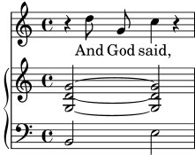
Quan escriviu una secció \score o quan l’esteu llegint,
feu-lo a poc a poc i amb cura. Comenceu pel nivell exterior i
després treballeu sobre cadascú dels nivells interiors. També és
d’una gran ajuda ser molt estricte amb els marges (assegureu-vos
que al seu editor de text cada element del mateix nivell comença a
la mateixa posició horitzontal).
Vegeu també
Referència de la notació: Estructura d’una partitura.
4.1.3 Niuat d’expressions musicals
No és essencial declarar tots els pentagrames al començament; es poden crear temporalment en qualsevol moment. Això és d’especial utilitat per crear seccions d’ossia (vegeu ossia). A continuació presentem un exemple senzill que mostra com introduir temporalment un pentagrama nou mentre dura un fragment de tres notes:
\new Staff { \relative { r4 g'8 g c4 c8 d | e4 r8 << { f8 c c } \new Staff { f8 f c } >> r4 | } }![[image of music]](d8/lily-17c3bee2.png)
Noteu que la mida de la clau és igual a la que s’imprimeix en un canvi de clau (lleugerament més petita que la clau al principi d’una línia). Això és normal per a qualsevol clau que s’imprimeixi a la meitat d’una línia.
La secció ossia es pot col·locar a sobre del pentagrama de la manera següent:
\new Staff = "main" { \relative { r4 g'8 g c4 c8 d | e4 r8 << { f8 c c } \new Staff \with { alignAboveContext = "main" } { f8 f c } >> r4 | } }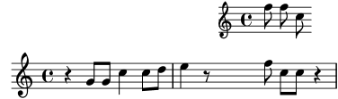
Aquest exemple utilitza \with, que s’explica en tot detall
més endavant. És un mitjà per modificar el comportament
predeterminat d’un sol pentagrama. En aquest exemple, diu que el
pentagrama nou s’ha de col·locar per sobre del pentagrama anomenat
“main” en comptes de la posició predeterminada que seria per sota.
Vegeu també
Els fragments d’ossia s’escriuen sovint sense clau i sense indicació de compàs, i generalment amb una lletra més petita. Per fer això caldrien més ordres que encara no s’han vist. Vegeu Mida dels objectes i Pentagrames d’Ossia.
4.1.4 Quant a la impossibilitat de niuar claus i lligadures
A l’escriptura del fitxer d’entrada del LilyPond hem pogut veure alguns tipus de parèntesis, claus i claudàtors de diversos tipus. Obeeixen a diverses regles que el principi poden semblar confuses. Abans d’explicar aquestes regles, fem un repàs a les diverses classes de parèntesis, claus i claudàtors.
| Tipus de parèntesis | Funció |
|---|---|
{ … } | Tanca un fragment seqüencial de música |
< … > | Tanca les notes d’un acord |
<< … >> | Tanca expressions musicals simultànies |
( … ) | Marca el començament i el final d’una lligadura d’expressió |
\( … \) | Marca el començament d’una lligadura de fraseig |
[ … ] | Marca el començament i el final d’un barrat manual |
A les anteriors hem d’afegir d’altres construccions que generen
línies entre o a través de les notes: les lligadures d’unió
(marcades amb un accent corb, ~), els grups especials que
s’escriuen amb \tuplet x/y { … }, i les notes
d’adorn, que s’escriuen amb \grace { … }.
Fora del LilyPond, l’ús convencional dels parèntesis i d’altres
claus requereix que els diversos tipus es trobin niuats
correctament, com a: << [ { ( … ) } ] >>, de manera
que els parèntesis que es tanquen han de trobar-se a l’ordre
exactament oposat als dels parèntesis que s’obren. Això
és un requisit per als tres tipus de parèntesis que es
descriuen mitjançant la paraula ‘Tanca’ a la taula anterior:
s’han de niuar correctament. Tanmateix, la resta de claus i
claudàtors, que estan descrits per la paraula ‘Marca’ a la
mateixa taula anterior, no han de niuar-se estrictament
per cap raó amb cap dels altres parèntesis. De fet, aquests
parèntesis no són parèntesis en el sentit que tanquen quelcom:
simplement són marcadors que indiquen on comença o finalitza
quelcom.
Així doncs, per exemple, una lligadura de fraseig pot començar abans d’una barra inserida manualment, i acabar abans que acabi la barra (una cosa que potser no sigui molt musical, però és possible):
\relative { g'8\( a b[ c b\) a] g4 }![[image of music]](47/lily-ce5ce968.png)
En general, els diversos tipus de parèntesis, i els que es fan servir per grups especials, lligadures d’unió i notes d’adorn, es poden barrejar amb total llibertat. Aquest exemple mostra una barra que s’estén cap a l’interior d’un grup de valoració especial (línia 1), una lligadura d’expressió que es perllonga cap a l’interior d’un grup excedent, una lligadura d’unió que travessa dos grups especials, i una lligadura de fraseig que surt de l’interior d’un grup excedent (línies 3 i 4).
\relative { r16[ g' \tuplet 3/2 { r16 e'8] } g,16( a \tuplet 3/2 { b16 d) e } g,8[( a \tuplet 3/2 { b8 d) e~] } | \tuplet 5/4 { e32\( a, b d e } a4.\) }![[image of music]](d2/lily-fecc8d1a.png)
| [ << Conceptes fonamentals ] | [Top][Contents][Index] | [ Ajustament de la sortida >> ] |
| [ < Quant a la impossibilitat de niuar claus i lligadures ] | [ Up: Conceptes fonamentals ] | [ Sento veus > ] |
4.2 Les veus contenen música
Igual que els cantants, al LilyPond li calen veus per cantar. En realitat, la música per a qualsevol instrument d’una partitura està sempre continguda dins d’una veu –el concepte del LilyPond més fonamental de tots–.
| 4.2.1 Sento veus | ||
| 4.2.2 Veus explícites | ||
| 4.2.3 Veus i música vocal |
| [ << Conceptes fonamentals ] | [Top][Contents][Index] | [ Ajustament de la sortida >> ] |
| [ < Les veus contenen música ] | [ Up: Les veus contenen música ] | [ Veus explícites > ] |
4.2.1 Sento veus
De les capes més fondes d’una partitura del LilyPond, les més baixes i més fonamental reben el nom de ‘Voice contexts’ («contextos de veu») o, abreujadament, ‘Voices’ («veus»). Les veus s’anomenen a vegades ‘layers’ («capes») a d’altres programes d’edició de partitures.
De fet, una capa o context de veu és l’única que pot contenir música. Si un context de veu no es declara explícitament, es crea un de forma automàtica, com vam veure al principi d’aquest capítol. Certs instruments com l’oboè sols poden tocar una nota cada cop. La música escrita per a aquests instruments sols requereix una veu. Els instruments que poden tocar més d’una nota a la vegada, com el piano, amb freqüència necessitaran diverses veus per codificar les diverses notes i ritmes concurrents que són capaces de tocar.
Una sola veu pot contenir moltes notes dins d’un acord, per suposat; aleshores, quan, exactament, es necessiten diverses veus? En primer lloc observeu aquest exemple de quatre acords:
\relative { \key g \major <d' g>4 <d fis> <d a'> <d g> }![[image of music]](57/lily-34e301d7.png)
Això es pot expressar utilitzant sols símbols d’acord amb angles
simples, < … >, i per això tan sols es necessita una
veu. Però suposeu que el Fa sostingut fos realment una corxera
seguida d’un Sol corxera, una nota de pas que condueix al La. Ara
tenim duen notes que comencen el mateix moment però tenen
diferents duracions: la negra Re, i la corxera Fa sostingut. Com
es codifica això? No es poden escriure amb un acord perquè totes
les notes d’un acord han de tenir la mateixa duració. I no es
poden escriure com dues notes en seqüència perquè han de començar
al mateix moment. Aquí és on necessiten dues veus.
Vegem com es fa això dins de la sintaxi d’entrada del LilyPond.
La forma més fàcil d’introduir fragments amb més d’una veu a un
sol pentagrama és escriure cada veu com una seqüència (amb
{ … }), i combinar-les simultàniament amb angles
dobles, << … >>. Els fragments també s’han de
separar mitjançant una doble barra invertida, \\, per
situar-los a veus separades.
Sense això, les notes anirien a una sola veu, el que normalment
produeix errors. Aquesta tècnica s’adapta especialment bé a peces
de música que són majorment homofòniques però ocasionalment tenen
seccions curtes de polifonia.
Heus ací com dividim els acords anteriors en dues veus i afegim la nota de pas i la lligadura:
\key g \major % Veu "1" Veu "2" << { g4 fis8( g) a4 g } \\ { d4 d d d } >>![[image of music]](f5/lily-65af5e8a.png)
Observe com les pliques de la segona veu ara es dirigeixen cap avall.
A continuació vegem un altre exemple senzill:
\key d \minor % Veu "1" Veu "2" << { r4 g g4. a8 } \\ { d,2 d4 g } >> | << { bes4 bes c bes } \\ { g4 g g8( a) g4 } >> | << { a2. r4 } \\ { fis2. s4 } >> |![[image of music]](8f/lily-e115abeb.png)
No és necessari usar una construcció << \\ >> diferent per
a cada compàs. Per a música que tingui unes poques notes a cada
compàs, aquesta disposició podria facilitar la llegibilitat del
codi, però si hi ha moltes notes a cada compàs podria ser millor
dividir-lo en dues veus separades de la següent manera:
\key d \minor << { % Veu "1" r4 g g4. a8 | bes4 bes c bes | a2. r4 | } \\ { % Veu "2" d,2 d4 g | g4 g g8( a) g4 | fis2. s4 | } >>![[image of music]](54/lily-5c7e66b6.png)
Aquest exemple té sols dues veus, però la mateixa construcció es pot usar per codificar tres o més veus mitjançant l’addició de més separadors de barra invertida.
Els contextos de veu porten els noms de "1", "2",
etc. Els primers contextos estableixen les veus externes,
la veu aguda del context "1" i la veu greu del context
"2". Les veus interiors van als contextos "3" i
"4". A cada un d’aquests contextos, la direcció vertical
de les lligadures, pliques, matisos dinàmics, etc., s’ajusta de
forma correcta.
\new Staff \relative { % Veu principal c'16 d e f % Veu "1" Veu "2" Veu "3" << { g4 f e } \\ { r8 e4 d c8~ } >> | << { d2 e } \\ { c8 b16 a b8 g~ 2 } \\ { s4 b c2 } >> | }![[image of music]](af/lily-4d137c0e.png)
Totes aquestes veus estan separades de la veu principal que conté
les notes just per fora de la construcció << … >>.
Anomenarem això la construcció simultània. Les lligadures
(de prolongació i d’expressió) solament poden connectar notes
que estiguin dins de la mateixa veu, en conseqüència les
lligadures no poden entrar o sortir d’una construcció
simultània. A la inversa, les veus paral·leles de construccions
simultànies diferents sobre el mateix pentagrama són la mateixa
veu. Hi ha altres propietats relatives a les veus que també
impliquen construccions simultànies. A continuació veiem el mateix
exemple, amb colors i caps diferents per a cada veu. Observeu que
els canvis a una veu no afecten a d’altres veus, però persisteixen
més tard dins de la mateixa veu. Observeu també que les notes
lligades es poden dividir entre les mateixes veus de dues
construccions, com s’indica aquí a la veu de triangles blaus.
\new Staff \relative { % Veu principal c'16 d e f << % Bar 1 { \voiceOneStyle g4 f e } \\ { \voiceTwoStyle r8 e4 d c8~ } >> | << % Bar 2 % Continua la Veu 1 { d2 e } \\ % Continua la Veu 2 { c8 b16 a b8 g~ 2 } \\ { \voiceThreeStyle s4 b c2 } >> | }![[image of music]](5e/lily-cd50ed64.png)
Les instruccions \voiceXXXStyle estan pensades
principalment per usar-les en documents educatius com el que
presentem aquí. Modifiquen el color del cap, la plica i les
barres, i l’estil del cap, de manera que les veus es poden
distingir fàcilment. La veu u està establerta a rombes vermells,
la veu dos a triangles blaus, la veu tres a cercles verdes amb
aspes, i la veu quatre (que no es fa servir aquí) a aspes color
magenta. \voiceNeutralStyle (que tampoc no es fa servir
aquí) retorna tot a l’estil predeterminat. Veurem més endavant
com l’usuari pot crear instruccions com aquestes. Vegeu
Visibilitat i color dels objectes i
Ús de variables per als ajustaments de disposició.
La polifonia no canvia la relació de les notes dins d’un bloc
\relative. L’alçada de cada nota encara es calcula amb
relació a la nota que la precedeix immediatament, o a la primera
nota de l’acord precedent. Així, en
\relative c' { notaA << < notaB notaC > \\ notaD >> notaE }
notaB és relativa a notaA
notaC és relativa a notaB, no a notaA;
notaD és relativa a notaB, no a notaA ni a
notaC;
notaE és relativa a notaD, no a notaA.
Una forma alternativa, que podria ser més clara si les notes a les
veus estan molt separades, és col·locar una instrucció
\relative al principi de cada veu:
\relative c' { notaA … }
<<
\relative c'' { < notaB notaC > … }
\\
\relative g' { notaD … }
>>
\relative c' { notaE … }
Finalment, analitzem les veus en una peça de música més complexa. Heus aquí les notes dels dos primers compassos del segon dels Dos Nocturns de Chopin, Op 32. Aquest exemple s’utilitzarà en fases posteriors dins del present capítol i el següent, per il·lustrar diverses tècniques per produir notació, i per tant us demanem que ignoreu per ara qualsevol cosa al codi subjacent que li sembli misteriós i tan sols es concentri a la música i les veus (totes les complicacions s’explicaran a seccions posteriors).
![[image of music]](55/lily-bae1f4e8.png)
Amb freqüència, la direcció de les pliques s’utilitza per indicar la continuïtat de dues línies melòdiques simultànies. En aquest cas, totes les pliques de les notes agudes es dirigeixen cap amunt i les de la notes greus cap avall. Aquesta és la primera indicació que es requereix més d’una veu.
Però la necessitat real de diverses veus apareix quan hi ha notes que comencen al mateix temps però tenen duracions diferents. Observeu les notes que comencen a la tercera part del primer compàs. El La bemoll és una negra amb puntet, el Fa és una negra i el Re bemoll és una blanca. Aquestes notes no es poden escriure com un acord perquè totes les notes d’un acord han de tenir la mateixa duració. Tampoc es poden escriure com notes seqüencials, ja que han de començar al mateix temps. Aquesta secció del compas requereix tres veus, i la pràctica comuna seria escriure tot el compàs com tres veus com es mostra a sota, on hem usat diferents caps i colors per a la tres veus. Un cop més, el codi que hi ha a aquest exemple s’explicarà més tard, així que ignoreu tot el que no entengueu.
![[image of music]](73/lily-18ffc3d0.png)
Intentarem codificar aquesta música partint de zero. Com veurem,
això s’enfronta a certes dificultats. Començarem tal com hem
après, usant la construcció << \\ >> per introduir la
música del primer compàs a tres veus:
\new Staff \relative { \key aes \major << { c''2 aes4. bes8 } \\ { <ees, c>2 des } \\ { aes'2 f4 fes } >> | <c ees aes c>1 | }![[image of music]](f1/lily-ea16ef4b.png)
Les direccions de les pliques s’assignen automàticament de forma
que les veus de numeració imparell reben les pliques cap amunt i les
de numeració parell cap avall. Les pliques de les veus 1 i 2
són correctes, però les pliques de la veu 3 haurien d’anar cap
avall en aquest fragment en particular. Podem corregir això
simplement oblidant-nos de la veu tres i situant la música a la
veu quatre. Això es fa escrivint un altre parell de barres
invertides (\\).
\new Staff \relative { \key aes \major << % Veu u { c''2 aes4. bes8 } \\ % Veu dos { <ees, c>2 des } \\ % Omet Veu tres \\ % Veu quatre { aes'2 f4 fes } >> | <c ees aes c>1 | }![[image of music]](82/lily-aa8d876e.png)
Veiem que això arregla la direcció de la plica, però la
col·locació horitzontal de les notes no és la desitjada. El
LilyPond desplaça les notes interiors quan elles o les seves
pliques d’una altra manera col·lisionarien amb les veus exteriors,
però això no és el més adequat per a música de piano. En altres
situacions, els desplaçaments que el LilyPond aplica poden no
eliminar les col·lisions. El LilyPond aporta diverses formes
d’ajustar la col·locació horitzontal de les notes. Encara no
estem preparats per veure com es corregeix això, per la qual cosa
deixarem el problema per a una secció posterior (vegeu la
propietat force-hshift a
Ajustament de la notació amb superposicions).
Nota: No es poden crear lletres ni objectes d’extensió (com ara lligadures, reguladors, etc.) ‘entre’ veus diferents.
Vegeu també
Referència de la notació: Veus múltiples.
| [ << Conceptes fonamentals ] | [Top][Contents][Index] | [ Ajustament de la sortida >> ] |
| [ < Sento veus ] | [ Up: Les veus contenen música ] | [ Veus i música vocal > ] |
4.2.2 Veus explícites
Els contextos de veu també es poden crear manualment dins d’un
bloc << >> per crear música polifònica, utilitzant
\voiceOne … \voiceFour per indicar les
direccions requerides de pliques, lligadures, etc. A partitures
més llargues, aquest mètode és més clar perquè permet que les veus
estiguin separades i rebin noms més descriptius.
Concretament, la construcció << \\ >> que usem a la secció
prèvia:
\new Staff {
\relative {
<< { e'4 f g a } \\ { c,4 d e f } >>
}
}
equival a
\new Staff <<
\new Voice = "1" { \voiceOne \relative { e'4 f g a } }
\new Voice = "2" { \voiceTwo \relative { c'4 d e f } }
>>
Els dos exemples anteriors produeixen:
![[image of music]](50/lily-4444eb23.png)
Les instruccions \voiceXXX estableixen la direcció de les
pliques, lligadures d’expressió, lligadures de prolongació,
articulacions, anotacions de text, puntets i digitacions.
\voiceOne i \voiceThree fan que aquests objectes
apuntin cap amunt, mentre que \voiceTwo i \voiceFour
els fan apuntar cap avall. Aquestes instruccions també produeixen
un desplaçament horitzontal per a cada veu quan és necessari per
evitar xocs entre els caps. La instrucció \oneVoice
retorna els ajustos de nou als valors normals per a una sola veu.
Vegem a alguns exemples senzills exactament quin efecte tenen
\oneVoice, \voiceOne i voiceTwo sobre
l’escriptura, les lligadures d’unió i d’expressió i les
indicacions de dinàmica:
\relative { % Comportament predeterminat o comportament després de \oneVoice c'4 d8~ 8 e4( f | g4 a) b-> c | }![[image of music]](02/lily-2bd37580.png)
\relative { \voiceOne c'4 d8~ 8 e4( f | g4 a) b-> c | \oneVoice c,4 d8~ 8 e4( f | g4 a) b-> c | }![[image of music]](5e/lily-bb970cd8.png)
\relative { \voiceTwo c'4 d8~ 8 e4( f | g4 a) b-> c | \oneVoice c,4 d8~ 8 e4( f | g4 a) b-> c | }![[image of music]](a2/lily-2897a3fa.png)
A continuació veurem tres formes diferents de composar la notació del mateix passatge polifònic, cada una de les quals té els seus avantatges segons la circumstància, utilitzant l’exemple de la secció anterior.
Una expressió que apareix directament dins de << >> pertany
a la veu principal (però, observeu, no dins d’una
construcció << \\ >>). Això és útil quan apareixen veus
noves mentre la veu principal està sonant. A continuació podem
veure una realització més correcte de l’exemple de la secció
anterior. Les notes vermelles en forma de rombe mostren que la
melodia principal està ara dins d’un context d’una sola veu, fent
que es pugui traçar una lligadura per sobre d’elles.
\new Staff \relative { \voiceOneStyle % Aquesta secció és homofònica c'16^( d e f % Comença una secció simultània de tres veus << % Continua la veu principal en paral·lel { g4 f e | d2 e) | } % Inicia la segona veu \new Voice { % Estableix les pliques, etc., cap avall \voiceTwo r8 e4 d c8~ | 8 b16 a b8 g~ 2 | } % Inicia la tercera veu \new Voice { % Set stems, etc, up \voiceThree s2. | s4 b c2 | } >> }![[image of music]](d3/lily-ad639bbd.png)
Les construccions polifòniques niuades més profundament són possibles, i si hi ha una veu que apareix sols breument podria haver-hi una forma més natural d’escriure la música.
\new Staff \relative { c'16^( d e f << { g4 f e | d2 e) | } \new Voice { \voiceTwo r8 e4 d c8~ | << { c8 b16 a b8 g~ 2 | } \new Voice { \voiceThree s4 b c2 | } >> } >> }![[image of music]](22/lily-ec986eb4.png)
Aquest mètode de niuar veus noves breument és útil quan sols hi ha seccions polifòniques petites, però quan tot el pentagrama és molt polifònic podria ser més clar usar sempre diverses veus, usant notes espaiadores per passar per sobre de les seccions on una veu està en silenci, com per exemple:
\new Staff \relative << % Inicia la primera veu \new Voice { \voiceOne c'16^( d e f g4 f e | d2 e) | } % Inicia la segona veu \new Voice { % Estableix les pliques, etc., cap avall \voiceTwo s4 r8 e4 d c8~ | 8 b16 a b8 g~ 2 | } % Inicia la tercera veu \new Voice { % Estableix les pliques, etc., cap amunt \voiceThree s1 | s4 b c2 | } >>![[image of music]](2e/lily-7105078a.png)
Columnes de notes
Les notes properes a un acord, o les notes que es produeixen al mateix temps en diferents veus, es disposen en dos (i ocasionalment més) columnes per evitar el solapament dels caps. Reben el nom de columnes de notes. Hi ha columnes diferents per a cada veu, i el desplaçament especificat en curs depenent de la veu s’aplica a la columna de la nota si en cas contrari es produís una col·lisió. Això es pot veure a l’exemple anterior. Al compàs 2 el Do a la veu dos està desplaçat a la dreta respecte del Re de la veu u, i a l’últim acord el Do de la veu tres també està desplaçat a la dreta respecte de les altres notes.
Les instruccions \shiftOn, \shiftOnn,
\shiftOnnn i \shiftOff especifiquen el grau que
s’han de desplaçar les notes i acords de la veu si en cas contrari
es produís una col·lisió. De forma predeterminada, les veus
exteriors (normalment les veus u i dos) tenen com a especificació
\shiftOff, mentre que les veus interiors (tres i quatre)
tenen especificat \shiftOn. Quan s’aplica un desplaçament,
les veus u i tres es desplacen cap a la dreta i les veus dos i
quatre es desplacen cap a l’esquerra.
\shiftOnn i \shiftOnnn defineixen nivells
addicionals de desplaçament que es poden especificar temporalment
per resoldre col·lisions en situacions complexes (vegeu
Exemple real de música).
Una columna de notes pot contenir sols una nota (o acord) d’una veu amb les pliques cap amunt i una nota (o acord) d’una veu amb les pliques cap avall. Si les notes de dues veus que tenen les pliques a la mateixa direcció se situen en la mateixa posició i les dues veus no tenen cap desplaçament o porten especificat el mateix desplaçament, es produirà el missatge d’error “Xoquen massa columnes de notes”.
Vegeu també
Manual d’aprenentatge: Moviment d’objectes.
Referència de la notació: Veus múltiples.
| [ << Conceptes fonamentals ] | [Top][Contents][Index] | [ Ajustament de la sortida >> ] |
| [ < Veus explícites ] | [ Up: Les veus contenen música ] | [ Contextos i gravadors > ] |
4.2.3 Veus i música vocal
La música vocal presenta una dificultat especial: hem de combinar dues expressions, és a dir, les notes i la lletra.
Ja heu vist la instrucció \addlyrics{}, que funciona bé
per a partitures senzilles. Tot i així, aquesta tècnica és una
mica limitada. Per a música de complexitat més gran, hem
d’introduir la lletra en un context Lyrics utilitzant
\new Lyrics i enllaçar explícitament la lletra i les notes
mitjançant \lyricsto{}, usant el nom assignat a la veu.
<< \new Voice = "una" { \relative { \autoBeamOff \time 2/4 c''4 b8. a16 | g4. f8 | e4 d | c2 | } } \new Lyrics \lyricsto "una" { No more let | sins and | sor -- rows | grow. | } >>![[image of music]](37/lily-3a0e9947.png)
Observeu que la lletra s’ha d’enllaçar a un context de
Voice, no a un context de Staff. Aquest és
un cas on és necessari crear contextos de Staff i de
Voice explícitament.
El barrat automàtic que el LilyPond usa de forma predeterminada
funciona bé per a la música instrumental, però no tan bé per a
música sense lletra, on o bé el barrat no es necessita en absolut,
o bé s’utilitza per indicar els melismes de la lletra. A
l’exemple anterior hem utilitzat la instrucció \autoBeamOff
per desactivar el barrat automàtic.
Ara reutilitzarem l’exemple anterior de «Judes Macabeu» per a
il·lustrar aquesta tècnica més flexible. Primer la reescriurem
per que faci servir variables, de manera que la música i la lletra
es puguin separar de l’estructura de pentagrames. També
introduirem una clau de grup de ChoirStaff. La lletra pròpiament
dita s’ha de introduir amb \lyricmode perquè tenir seguretat
que s’interpreti com a lletra i no com a música.
global = { \key f \major \time 6/8 \partial 8 } SopOneMusic = \relative { c''8 | c8([ bes)] a a([ g)] f | f'4. b, | c4.~ 4 } SopOneLyrics = \lyricmode { Let | flee -- cy flocks the | hills a -- dorn, __ } SopTwoMusic = \relative { r8 | r4. r4 c'8 | a'8([ g)] f f([ e)] d | e8([ d)] c bes' } SopTwoLyrics = \lyricmode { Let | flee -- cy flocks the | hills a -- dorn, } \score { \new ChoirStaff << \new Staff << \new Voice = "SopOne" { \global \SopOneMusic } \new Lyrics \lyricsto "SopOne" { \SopOneLyrics } >> \new Staff << \new Voice = "SopTwo" { \global \SopTwoMusic } \new Lyrics \lyricsto "SopTwo" { \SopTwoLyrics } >> >> }![[image of music]](56/lily-c521cf0d.png)
Aquesta és l’estructura bàsica de totes les partitures vocals. Es poden afegir més pentagrames segons es necessiti, es poden afegir més veus als pentagrames i més estrofes a la lletra, i les variables que contenen la música es poden col·locar fàcilment en fitxers separats quan es facin massa llargs.
A continuació podem veure un exemple final de la primera línia d’un himne amb quatre estrofes, per a cor SATB. En aquest cas la lletra de les quatre parts és la mateixa. Observeu com utilitzem variables per a separar la notació musical de l’estructura de pentagrames. Observeu també com s’utilitza una variable, per a la qual hem escollit el nom ‘TimeKey’ («compàs i tonalitat»), per a que contingui diverses instruccions que s’usaran dins dels dos pentagrames. A d’altres exemples se li sol donar el nom de ‘global’.
keyTime = { \key c \major \time 4/4 \partial 4 } SopMusic = \relative { c'4 | e4. e8 g4 g | a4 a g } AltoMusic = \relative { c'4 | c4. c8 e4 e | f4 f e } TenorMusic = \relative { e4 | g4. g8 c4. b8 | a8 b c d e4 } BassMusic = \relative { c4 | c4. c8 c4 c | f8 g a b c4 } VerseOne = \lyricmode { E -- | ter -- nal fa -- ther, | strong to save, } VerseTwo = \lyricmode { O | Christ, whose voice the | wa -- ters heard, } VerseThree = \lyricmode { O | Ho -- ly Spi -- rit, | who didst brood } VerseFour = \lyricmode { O | Tri -- ni -- ty of | love and pow'r } \score { \new ChoirStaff << \new Staff << \clef "treble" \new Voice = "Sop" { \voiceOne \keyTime \SopMusic } \new Voice = "Alto" { \voiceTwo \AltoMusic } \new Lyrics \lyricsto "Sop" { \VerseOne } \new Lyrics \lyricsto "Sop" { \VerseTwo } \new Lyrics \lyricsto "Sop" { \VerseThree } \new Lyrics \lyricsto "Sop" { \VerseFour } >> \new Staff << \clef "bass" \new Voice = "Tenor" { \voiceOne \keyTime \TenorMusic } \new Voice = "Bass" { \voiceTwo \BassMusic } >> >> }![[image of music]](fe/lily-e5bf451e.png)
Vegeu també
Referència de la notació: Música vocal.
| [ << Conceptes fonamentals ] | [Top][Contents][Index] | [ Ajustament de la sortida >> ] |
| [ < Veus i música vocal ] | [ Up: Conceptes fonamentals ] | [ Explicació dels contextos > ] |
4.3 Contextos i gravadors
Els contextos i els gravadors s’han mencionat de manera informal a seccions anteriors; ara tan sols veurem aquests conceptes amb més detall, ja que són importants a l’ajust fi de la sortida del LilyPond.
| 4.3.1 Explicació dels contextos | ||
| 4.3.2 Creació de contextos | ||
| 4.3.3 Explicació dels gravadors | ||
| 4.3.4 Modificar les propietats dels contextos | ||
| 4.3.5 Afegir i eliminar gravadors |
| [ << Conceptes fonamentals ] | [Top][Contents][Index] | [ Ajustament de la sortida >> ] |
| [ < Contextos i gravadors ] | [ Up: Contextos i gravadors ] | [ Creació de contextos > ] |
4.3.1 Explicació dels contextos
Quan s’imprimeix la música, s’han de afegir a la sortida una gran quantitat d’elements de notació que no apareixen explícitament al fitxer d’entrada. Per exemple, compareu l’entrada i la sortida del següent exemple:
\relative { cis''4 cis2. | a4 a2. | }![[image of music]](3e/lily-1101a13a.png)
L’entrada és força greu, però a la sortida s’han afegit línies divisòries, les alteracions, la clau i l’armadura de la tonalitat. Quan el LilyPond interpreta l’entrada, la informació musical s’analitza d’esquerra a dreta de la mateixa manera que un intèrpret llegeix la partitura. Mentre es llegeix el codi d’entrada, el programa recorda on estan els límits dels compassos, i quines alçades requereixen alteracions accidentals explícites. Aquesta informació s’ha de conservar a diversos nivells. Per exemple, una alteració accidental afecta solament a un pentagrama, mentre que una línia divisòria ha d’estar sincronitzada al llarg de tot els sistema.
Dins del LilyPond, aquestes regles i petites porcions d’informació
s’agrupen en Contexts. Ja hem vist el context de veu,
Voice. Altres exemples de contextos són Staff
(Pauta o pentagrama) i Score (Partitura). Els contextos
són jeràrquics, de forma que reflecteixen la naturalesa jeràrquica
d’una partitura musical. Per exemple: un context de Staff
pot contenir molts contextos de Voice, i un context de
Score pot contenir molts contextos de Staff.

Cada context assumeix la responsabilitat d’imposar algunes regles
de notació, creant certs objectes de notació i mantenint les
propietats associades. Per exemple, el context Voice pot
introduir una alteració accidental i llavors el context
Staff manté la regla de mostrar o suprimir l’alteració per
a la resta del compàs.
Un altre exemple el constitueix el fet que la sincronització de les
línies divisòries es gestiona dins del context de la partitura,
Score, de forma predeterminada. Nogensmenys, a algunes
músiques és possible que vulguem que les línies divisòries
estiguin sincronitzades (pensem en una partitura polimètrica en
compassos de 4/4 i de 3/4). En aquests casos hem de modificar els
ajustos per omissió dels contextos Score i Staff.
Per a partitures molt senzilles, els contextos es creen implícitament i no hem de preocupar-nos per ells. Per a peces més grans, com per exemple qualsevol que tingui més d’un pentagrama, els contextos s’han de crear explícitament per assegurar-nos que no tindrem la quantitat exacta de pentagrames que necessitem, i que estan a l’ordre correcte. Per escriure peces amb notació especialitzada, és freqüent la modificació de contextos existents o fins i tot definir d’uns completament nous.
A més dels contextos Score, Staff i Voice, hi
ha contextos que se situen entre els nivells de partitura i de
pentagrama per controlar els grups de pentagrames , com els
contextos alternatius de pentagrama i de veu, i contextos per a la
lletra, la percussió, diagrames de trasts, baix xifrat, etc.
Els noms de tots els tipus de contextos es composen d’una o més
paraules que comencen amb majúscula i que estan unides unes a les
altres sense guió ni barra baixa, per exemple:
PartituraDeTranscripcióGregoriana
Vegeu també
Referència de la notació: Explicació dels contextos.
| [ << Conceptes fonamentals ] | [Top][Contents][Index] | [ Ajustament de la sortida >> ] |
| [ < Explicació dels contextos ] | [ Up: Contextos i gravadors ] | [ Explicació dels gravadors > ] |
4.3.2 Creació de contextos
A un fitxer d’entrada, el bloc de partitura, que es presenta
precedit per la instrucció \score, conté una sola expressió
musical i una definició de sortida associada (o bé un bloc
\layout o bé un bloc \midi). El context
Score se sol deixar que es creï automàticament quan
comença la interpretació d’aquesta expressió musical.
Per a partitures que solament tenen una veu i un pentagrama, podem
també deixar que els contextos Voice i Staff se
creïn automàticament, però per a partitures més complexes és
necessari crear-los a mà. La instrucció més simple que fa això és
\new. S’anteposa a una expressió musical, per exemple
\new tipus expressió_musical
on tipus és el nom d’un context (com Staff o
Voice). Aquesta instrucció crea un context nou, i comença
a interpretar la expressió_musical que està dins d’aquest
context.
Nota: No s’ha d’usar \new Score perquè el context
Score essencial del nivell superior ja es crea
automàticament al interpretar-se l’expressió musical que està
dins del bloc \score. Els valors predeterminats de
propietats de context vàlids per a tota la partitura es poden
canviar dins del bloc \layout. Vegeu Modificar les propietats dels contextos.
En les seccions anteriors heu pogut veure molts exemples pràctics
que creaven nous contextos de Staff i de Voice,
però per a recordar-vos com s’usen aquestes instruccions en la
pràctica, heus aquí un exemple anotat de música real:
\score { % inici de l'expressió única de música composta << % inici d'una secció pentagrames simultanis \time 2/4 \new Staff { % crea el pentagrama de la mà dreta \clef "treble" \key g \minor \new Voice { % crea la veu per a les notes de la mà dreta \relative { % inici de les notes de la mà dreta d''4 ees16 c8. | d4 ees16 c8. | } % fi de les notes de la mà dreta } % fi de la veu de la mà dreta } % fi del pentagrama de la mà dreta \new Staff << % crea el pentagrama de la mà esquerra \clef "bass" \key g \minor \new Voice { % crea la veu de la mà esquerra \voiceOne \relative { % inicia les notes de la veu u de la mà esquerra g8 <bes d> ees, <g c> | g8 <bes d> ees, <g c> | } % fi de les notes de la veu u de la mà esquerra } % fi de la veu u de la mà esquerra \new Voice { % crea la veu dos de la mà esquerra \voiceTwo \relative { % inici de les notes de la veu dos de la mà esquerra g4 ees | g4 ees | } % fi de les notes de la veu dos de la mà esquerra } % fi de la veu dos de la mà esquerra >> % fi del pentagrama de la mà esquerra >> % fi de la secció de pentagrames simultanis } % fi de l'expressió única de música composta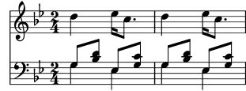
(Observeu com totes les instruccions que obren un bloc amb una
clau, {, o amb angles dobles, <<, estan
sagnades (tenen un marge addicional) amb dos espais addicionals,
i la clau de tancament corresponent té un marge exactament
igual. Tot i no ser necessari, observar aquesta pràctica reduirà
considerablement el nombre d’errors de ‘parèntesis
descompensats’, i es recomana especialment. Permet apreciar d’una
sola ullada l’estructura de la música, i qualsevol parèntesis
descompensat apareixerà molt clarament. Observeu també com el
pentagrama de la mà esquerra es crea usant dobles angles perquè
requereix dues veus, mentre que el pentagrama de la mà dreta es
crea amb una expressió musical única tancada entre claus
perquè sols requereix una veu.)
La instrucció \new també pot atorgar un nom identificatiu
al context per distingir-lo d’altres contextos del mateix tipus:
\new tipus = identificador expressió_musical
Observeu la distinció entre el nom del tipus de context,
Staff, Voice, etc., i el nom identificatiu d’una
instància en particular d’aquest tipus, que pot ser qualsevol
seqüència de lletres inventada per l’usuari. En el nom
identificatiu també es poden utilitzar dígits i espais, però en
aquest cas aquest nom ha d’anar entre cometes, per exemple
\new Staff = "ElMeuPentagrama 1" expressió_musical.
El nom identificatiu s’utilitza per referir-nos més tard a
aquesta instància en particular d’un context. Hem vist això a la
secció sobre la lletra, a Veus i música vocal.
Vegeu també
Referència de la notació: Creació i referenciació dels contextos.
| [ << Conceptes fonamentals ] | [Top][Contents][Index] | [ Ajustament de la sortida >> ] |
| [ < Creació de contextos ] | [ Up: Contextos i gravadors ] | [ Modificar les propietats dels contextos > ] |
4.3.3 Explicació dels gravadors
Totes i cadascuna de les marques de la sortida impresa d’una
partitura feta amb el LilyPond està produïda per un
Engraver (gravador). Així, tenim un gravador per imprimir
pentagrames, un altre per imprimir els caps de les notes, un altre
per a les pliques, un altre per a les barres, i molts més. En
total hi ha més de 120 gravadors! Afortunadament, per a la major
part de les partitures no és necessari conèixer més que alguns,
per a partitures senzilles no hem de saber res de cap d’ells.
Els gravadores resideixen i operen dins de Contextos. Els
gravadors com ara el gravador de la indicació de metrònom,
Metronome_mark_engraver, l’acció i resultat del qual
s’apliquen a la partitura com un tot, operen en el context més
alt: el context de partitura Score.
El gravador de la clau Clef_engraver i el de l’armadura
Key_engraver es troben probablement a tots els contextos de
pentagrama (Staff), ja que els diferents pentagrames
podrien requerir diferents claus i armadures.
El gravador dels caps de nota Note_heads_engraver i el de
les pliques Stem_engraver viuen en cada u dels contextos de
veu Voice, el context de nivell més baix de tots.
Cada gravador processa els objectes particulars associats amb la seva funció, i manté les propietats que estan relacionades amb aquesta funció. Aquestes propietats, com les que estan associades amb els contextos, es poden modificar per canviar el funcionament del gravador o l’aspecte d’aquests elements de la partitura impresa.
Tots els gravadors tenen noms compostos de diverses paraules que
descriuen la seva funció. Sols està en majúscules la inicial de
la primera paraula, i la resta se li uneix mitjançant guionets
baixos. D’aquesta manera el gravador Staff_symbol_engraver
és responsable de la creació de les línies del pentagrama, i el
Clef_engraver determina i estableix l’alçada o el punt de
referència sobre el pentagrama dibuixant un símbol de clau.
A continuació presentem alguns del gravadors més comuns, junt amb la seva funció. Podreu comprovar que és fàcil endevinar la funció a partir del nom (en anglès), i a l’inrevés.
| Gravador | Funció |
|---|---|
| Accidental_engraver | Fa les alteracions accidentals, de precaució i de suggeriment. |
| Beam_engraver | Grava les barres |
| Clef_engraver | Grava les claus |
| Completion_heads_engraver | Divideix les notes que travessen una línia divisòria |
| Dynamic_engraver | Crea reguladors i indicacions dinàmiques textuals |
| Forbid_line_break_engraver | Evita els salts de línia si queda algun element musical actiu |
| Key_engraver | Crea l’armadura de la tonalitat |
| Metronome_mark_engraver | Grava la indicació de metrònom |
| Note_heads_engraver | Grava el cap de les notes |
| Rest_engraver | Grava els silencis |
| Staff_symbol_engraver | Grava les cinc línies (de forma predeterminada) del pentagrama |
| Stem_engraver | Crea les pliques i els trèmolos d’una sola plica |
| Time_signature_engraver | Crea les indicacions de compàs |
Més endavant veurem es pot canviar com la sortida del LilyPond mitjançant la modificació del funcionament dels Gravadors.
Vegeu també
Referència de funcionament intern: Engravers and Performers.
| [ << Conceptes fonamentals ] | [Top][Contents][Index] | [ Ajustament de la sortida >> ] |
| [ < Explicació dels gravadors ] | [ Up: Contextos i gravadors ] | [ Afegir i eliminar gravadors > ] |
4.3.4 Modificar les propietats dels contextos
Els contextos es responsabilitzen de mantenir els valors d’un cert
nombre de properties de context. Moltes d’elles es poden
canviar per influir en la interpretació del codi d’entrada i
canviar així l’aparença de la sortida impresa. Es modifiquen
mitjançant la instrucció \set. Aquesta instrucció pren la
forma següent:
\set NomDelContext.nomDeLaPropietat = #valor
On el NomDelContext és normalment Score,
Staff o Voice. Es pot ometre, i en aquest cas se
suposa que és el context en curs (normalment Voice).
Els noms de les propietats de context consisteixen en paraules unides sense cap guió o barra fixa, i on totes les paraules excepte la primera comencen en majúscula. A continuació podem veure alguns exemples de noms de propietats utilitzades amb freqüència. Hi ha moltes més que les que es mostren aquí.
| nomDeLaPropietat | Tipus | Funció | Valor d’exemple |
|---|---|---|---|
| extraNatural | Booleà | Si és vertader, posa becaires addicionals abans de les alteracions | #t, #f |
| currentBarNumber | Enter | Ajustar el número del compàs actual | 50 |
| doubleSlurs | Booleà | Si és vertader, imprimir lligadures d’expressió per sobre i per sota de les notes | #t, #f |
| instrumentName | Text | Establir el nom del pentagrama, situat a l’esquerra | "Cello I" |
| fontSize | Real | Augmentar o disminuir la mida de la font tipogràfica | 2.4 |
| stanza | Text | Establir el text que s’imprimeix abans del començament d’una estrofa | "2" |
on un valor Booleà es vertader (#t, True) o fals
(#f, False), un Enter és un nombre enter positiu, un nombre
real és un nombre decimal positiu o negatiu, i el text es tanca
entre cometes dobles. Observeu l’aparició de signes de coixinet
(#), en dos llocs diferents: com a part del valor Booleà
abans de la t o la f, i abans del valor dins
de la instrucció \set. Així doncs, quan s’està escrivint
un valor Booleà, s’han d’escriure dos signes de coixinet, per
exemple: ##t.
Abans de poder establir qualsevol d’aquestes propietats, hem de
saber en quin context operen. A vegades és quelcom obvi, però en
ocasions pot ser quelcom complicat. Si especifiquem un context
equivocat, no es produeix cap missatge d’error, però el
funcionament esperat no tindrà lloc. Per exemple, la propietat
instrumentName (nom de l’instrument) viu clarament dins del
context de Staff, ja que és el pentagrama el que ha de ser
anomenat. En aquest exemple, el primer pentagrama resulta
etiquetat, però no el segon, perquè hem omès el nom del context.
<< \new Staff \relative { \set Staff.instrumentName = "Soprano" c''2 c } \new Staff \relative { \set instrumentName = "Alto" % Incorrecte! d'2 d } >>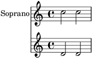
Recordeu que el nom del context predeterminat és Voice,
així que la segona instrucció \set estableix la propietat
instrumentName del context Voice a “Alto”, pero com
el LilyPond no busca aquesta propietat al context Voice, no
es realitza cap acció. Això no és un error, i no es registra cap
missatge al fitxer Log del registre d’errors.
De forma semblant, si el nom de la propietat s’escriu amb alguna
falta, no es produeix cap missatge d’error, i clarament l’acció
esperada no pot tenir lloc. De fet, es pot establir qualsevol
‘property’ (fictícia) usant qualsevol nom que volem en qualsevol
context que existeixi, mitjançant l’ús de la instrucció
\set. Però si el nom no és conegut per al LilyPond, no
produirà cap acció. Alguns editors de text que donen suport als
fitxers d’entrada del LilyPond de manera especial, documenten els
noms de propietats amb vinyetes quan passem sobre ells el punter
del ratolí, com ara JEdit amb l’extensió LilyPondTool, o destaquen
els noms de propietats desconegudes de manera diferent, com ara
ConTEXT. Si no s’utilitza un editor amb aquesta possibilitats, es
recomana comprovar la correcció del nom de la propietat al manual
de Referència de funcionament intern: vegeu
Tunable context properties o Contexts.
La propietat instrumentName tindrà efecte solament si
s’estableix dins del context Staff, però algunes propietats
es poden establir a més d’un context. Per exemple, la propietat
extraNatural està establerta de forma predeterminada al
valor ##t (vertader) per a tots els pentagrames. Si
s’estableix a ##f (fals) en un context de Staff
determinat s’aplicarà solament a les alteracions d’aquest
pentagrama. Si s’estableix a fals en el context de la partitura,
Score, s’aplicarà a tots els pentagrames.
Així, això desactivarà els bequadres addicionals a un pentagrama:
<< \new Staff \relative { aeses'2 aes } \new Staff \relative { \set Staff.extraNatural = ##f aeses'2 aes } >>![[image of music]](f6/lily-024f0c7f.png)
i això els desactivarà a tots els pentagrames:
<< \new Staff \relative { aeses'2 aes } \new Staff \relative { \set Score.extraNatural = ##f aeses'2 aes } >>![[image of music]](60/lily-e6d76050.png)
Com un exemple més, si s’estableix clefTransposition dins
del context de Score, aquesta instrucció canvia
immediatament el valor de la transposició en tots els pentagrames
en curs i estableix un nou valor predeterminat que s’aplicarà a
tots els pentagrames.
La instrucció oposada, \unset, té l’efecte de suprimir la
propietat del context, el que ocasiona que la major part de les
propietats tornin al seu valor predeterminat. Normalment no és
necessari l’ús de \unset, atès que una nova instrucció
\set farà l’ajust desitjat.
Les instruccions \set i \unset poden aparèixer en
qualsevol lloc del fitxer d’entrada i tindran un efecte a partir
del temps on es troben i fins al final de la partitura o fins que la
propietat es torni a establir mitjançant \set o
\unset. Provem a modificar la mida de la font tipogràfica,
el que afecta la mida dels caps de les notes (entre altres coses)
diverses vegades. El canvi s’agafa a partir del valor
predeterminat, no el valor en curs.
c4 d % fes que els caps de nota siguin més petits \set fontSize = #-4 e4 f | % fes que els caps de nota siguin més grans \set fontSize = #2.5 g4 a % torna a la mida predeterminada \unset fontSize b4 c |![[image of music]](a0/lily-9bf0431e.png)
Hem pogut veure com establir els valors de diversos tipus de
propietat diferents. Observeu que els nombres enters i reals van
sempre precedits d’un símbol de coixinet, #, mentre que un
valor booleà vertader o fals s’especifica mitjançant
##t i ##f, amb dos coixinets. Una propietat de
test s’ha de tancar entre cometes dobles, com abans, tot i que
veurem més endavant que el text realment es pot especificar d’una
forma molt més general utilitzant la molt potent instrucció
markup.
Canviar les propietats d’un context amb \with
El valor predeterminat de les propietats de context es pot
establir en el moment que es crea el context. A vegades aquesta
forma d’establir el valor d’una propietat és molt més clara, si ha
de quedar fix durant tot el temps que duri el context. Quan es
crea un context amb una instrucció \new pot anar
immediatament seguit d’un bloc \with { … } en el
que s’estableix els valors predeterminats de les propietats. Per
exemple, si volem suprimir la impressió de bequadres addicionals per
a tota la duració d’un pentagrama, podem escriure:
\new Staff \with { extraNatural = ##f }
de la forma següent:
<< \new Staff { \relative { gisis'4 gis aeses aes } } \new Staff \with { extraNatural = ##f } { \relative { gisis'4 gis aeses aes } } >>![[image of music]](d3/lily-346125db.png)
Les propietats ajustades d’aquesta manera encara poden canviar-se
dinàmicament utilitzant \set i tornar-se al valor
predeterminat que es va establir al bloc \with mitjançant
\unset.
Així doncs, si la propietat fontSize s’ajusta dins d’una
instrucció \with, té l’efecte de reiniciar el valor
predeterminat de la mida de la font tipogràfica. Si més tard es
modifica amb \set, aquest nou valor predeterminat pot
restablir-se amb la instrucció \unset fontSize.
Canviar las propietats d’un context amb \context
Els valors de propietat dels contextos es poden establir per a
tots els contextos d’un tipus determinat, com per exemple
tots els contextos de Staff, amb una única instrucció. El
tipus de context s’identifica mitjançant la utilització del nom
del seu tipus, com Staff, precedit d’una barra invertida:
\Staff. L’enunciat que estableix el valor de la propietat
és el mateix que el que està en un bloc \with, presentat
anteriorment. Es col·loca en un bloc \context dins d’un
bloc \layout. Cada bloc \context afecta a tots els
contextos del tipus especificat al llarg del bloc \score o
\book en el que apareix el bloc \layout. A
continuació presentem un exemple que mostra el format:
\score { \new Staff { \relative { cisis''4 e d cis } } \layout { \context { \Staff extraNatural = ##t } } }![[image of music]](e6/lily-ae4cbe6d.png)
Si es vol aplicar la sobreescriptura de propietats a tos els pentagrames de la partitura:
\score { << \new Staff { \relative { gisis'4 gis aeses aes } } \new Staff { \relative { gisis'4 gis aeses aes } } >> \layout { \context { \Score extraNatural = ##f } } }![[image of music]](dd/lily-a6dba94e.png)
Les propietats de context establertes d’aquesta forma es poden
sobreescriure per a exemples concrets de contextos mitjançant
enunciats dins d’un bloc \with, i mitjançant instruccions
\set intercalades dins d’enunciats musicals.
Vegeu també
Referència de la notació: Canvi dels paràmetres predeterminats dels contextos. L’ordre set
Referència de funcionament intern: Contexts, Tunable context properties.
| [ << Conceptes fonamentals ] | [Top][Contents][Index] | [ Ajustament de la sortida >> ] |
| [ < Modificar les propietats dels contextos ] | [ Up: Contextos i gravadors ] | [ Extensió de les plantilles > ] |
4.3.5 Afegir i eliminar gravadors
Hem vist que cada un dels contextos conté diversos gravadors, cada u dels quals és al seu cop responsable de la producció d’una fracció particular del resultat imprès, com ara línies divisòries, pentagrames, caps, pliques, etc. Si un gravador és eliminat d’un context, ja no podrà produir la seva sortida impresa. És una forma una mica radical de modificar la sortida, pero algunes vegades pot ser útil.
Canviar un sol context
Per eliminar un gravador d’un context únic, usem la instrucció
\with situada immediatament després de la instrucció que
crea el context, com a la secció anterior.
Com a il·lustració, repetim un exemple estret de la secció
anterior amb les línies del pentagrama eliminades. Recordeu que
les línies del pentagrama estan dibuixades pel gravador
Staff_symbol_engraver.
\new Staff \with { \remove Staff_symbol_engraver } \relative { c'4 d \set fontSize = #-4 % fes més petits els caps de les notes e4 f | \set fontSize = #2.5 % fes més grans els caps de les notes g4 a \unset fontSize % retorna a la mida predeterminada b4 c | }![[image of music]](c0/lily-f4e1ee52.png)
Els gravadors també es poden afegir als contextos individuals. La instrucció que ho fa és
\consists Nom_del_gravador,
situada dins d’un bloc \with. Certes partitures vocals
tenen una indicació d’àmbit o tessitura situada al principi del
pentagrama per indicar l’àmbit de notes en aquest pentagrama, vegeu
ambitus. L’ambitus es produeix per part del gravador
Ambitus_engraver, que normalment no està inclòs en cap
context. Si l’afegim al context Voice, calcula el rang a
partir d’aquesta única veu:
\new Staff << \new Voice \with { \consists Ambitus_engraver } { \relative { \voiceOne c''4 a b g } } \new Voice { \relative { \voiceTwo c'4 e d f } } >>![[image of music]](05/lily-688a95f2.png)
però si afegim el gravador d’àmbit al context de Staff,
calcula el rang de totes les notes en totes les veus d’aquest
pentagrama:
\new Staff \with { \consists Ambitus_engraver } << \new Voice { \relative { \voiceOne c''4 a b g } } \new Voice { \relative { \voiceTwo c'4 e d f } } >>![[image of music]](b7/lily-f15469a0.png)
Canviar tots els contextos del mateix tipus
Els exemples anteriors mostren la manera d’eliminar o afegir
gravadors als contextos individuals. També és possible eliminar o
afegir gravadors a tots els contextos d’un tipus específic,
situant les instruccions al context corresponent dins d’un bloc
\layout. Per exemple, si volem mostrar els rangs de
tessitura per a tots els pentagrames d’una partitura de quatre
pautes, podem escriure
\score { << \new Staff { \relative { c''4 a b g } } \new Staff { \relative { c'4 a b g } } \new Staff { \clef "G_8" \relative { c'4 a b g } } \new Staff { \clef "bass" \relative { c4 a b g } } >> \layout { \context { \Staff \consists Ambitus_engraver } } }![[image of music]](88/lily-bf8c0158.png)
Els valors predeterminats de les propietats dels contextos també
es poden establir per a tots els contextos d’un tipus en
particular incloent-hi la instrucció \set dins d’un bloc
\context de la mateixa forma.
Vegeu també
Referència de la notació: Modificació dels connectors (plug-ins) de context, Canvi dels paràmetres predeterminats dels contextos.
Advertiments i problemes coneguts
Els gravadors Stem_engraver i Beam_engraver
(de plica i de barra) adjunten al cap de les notes els objectes
que creen. Si es suprimeix el gravador de caps de nota
Note_heads_engraver, no es produeix cap cap i per tant no
es creen tampoc pliques ni barres.
| [ << Conceptes fonamentals ] | [Top][Contents][Index] | [ Ajustament de la sortida >> ] |
| [ < Afegir i eliminar gravadors ] | [ Up: Conceptes fonamentals ] | [ Soprano i violoncel > ] |
4.4 Extensió de les plantilles
Heu llegit el tutorial i ara sabeu escriure música. Però, com podeu posar els pentagrames que voleu? Les plantilles estan molt bé, però què passa si voleu alguna cosa que està en cap plantilla? Bé, podeu trobar muntanyes de plantilles (vegeu Plantilles) que us poden servir com a punt de partida. Però i si voleu quelcom que no està contemplat aquí? Continueu llegint.
| 4.4.1 Soprano i violoncel | ||
| 4.4.2 Partitura vocal a quatre veus SATB | ||
| 4.4.3 Crear una partitura partint de zero | ||
| 4.4.4 Estalvi de tecleig mitjançant variables i funcions | ||
| 4.4.5 Partitures i particel·les |
| [ << Conceptes fonamentals ] | [Top][Contents][Index] | [ Ajustament de la sortida >> ] |
| [ < Extensió de les plantilles ] | [ Up: Extensió de les plantilles ] | [ Partitura vocal a quatre veus SATB > ] |
4.4.1 Soprano i violoncel
Per començar, agafeu la plantilla que us sembli més semblant a allò que voleu aconseguir. Diguem-ne que voleu escriure alguna cosa per a soprano i violoncel. En aquest cas començaríem amb la plantilla ‘Notes i lletra’ (per a la part de soprano).
\version "2.26.0"
melodia = \relative {
\clef "treble"
\key c \major
\time 4/4
a4 b c d
}
text = \lyricmode {
Aaa Bee Cee Dee
}
\score {
<<
\new Voice = "u" {
\autoBeamOff
\melodia
}
\new Lyrics \lyricsto "u" \text
>>
\layout { }
\midi { }
}
Ara volem afegir una part de violoncel. Vegem l’exemple ‘Sols notes’:
\version "2.26.0"
melodia = \relative {
\clef "treble"
\key c \major
\time 4/4
a4 b c d
}
\score {
\new Staff \melodia
\layout { }
\midi { }
}
No necessitem dues instruccions \version. Ens caldrà la
secció melodia. No volem dues seccions \score (si
tinguéssim dues \scores, acabaríem amb dues particel·les
per separat.) Volem les dues juntes, com un duo. Dins de la secció
\score, no ens fan falta dos \layout ni dos
\midi.
Si ens limitéssim a copiar i enganxar la secció melodia,
acabaríem amb dues seccions melodia separades, així que
anem a canviar-los el nom. Anomenarem musicaSoprano a la
secció de la soprano i musicaVioloncel a la secció de
violoncel. Al mateix temps canviarem el nom de text a
lletraSoprano. Recordeu canviar el nom a les dues
aparicions de totes aquests noms – tant la definició inicial (la
part melodia = relative c' { ) – com l’ús d’aquest nom
(en la secció \score).
També aprofitarem per canviar el pentagrama de la part del violoncel (els violoncels s’escriuen normalment en clau de Fa). Així mateix, canviarem algunes del violoncel.
\version "2.26.0"
musicaSoprano = \relative {
\clef "treble"
\key c \major
\time 4/4
a4 b c d
}
lletraSoprano = \lyricmode {
Aaa Bee Cee Dee
}
musicaVioloncel = \relative {
\clef "bass"
\key c \major
\time 4/4
d4 g fis8 e d4
}
\score{
<<
\new Voice = "u" {
\autoBeamOff
\musicaSoprano
}
\new Lyrics \lyricsto "u" \lletraSoprano
>>
\layout { }
\midi { }
}
Això té una aparença prometedora, però la part del violoncel no
surt a la partitura (no l’hem posada a la secció \score).
Si volem que la part del violoncel aparegui a sota de la de
soprano, hem d’afegir
\new Staff \musicaVioloncel
just a sota de tot el codi de la soprano. També hem de posar
<< i >> abans i després de la música – el que
indica al LilyPond que hi ha més d’una cosa (en aquest cas,
Staff) succeint al mateix moment –. La \score
s’assemblarà ara a això:
\score {
<<
<<
\new Voice = "u" {
\autoBeamOff
\musicaSoprano
}
\new Lyrics \lyricsto "u" \lletraSoprano
>>
\new Staff \musicaVioloncel
>>
\layout { }
\midi { }
}
Això sembla una mica enrevessat; el marges estan desquadrats. Això té fàcil solució. Presentem aquí la plantilla completa per a soprano i violoncel.
musicaSoprano = \relative { \clef "treble" \key c \major \time 4/4 a4 b c d } lletraSoprano = \lyricmode { Aaa Bee Cee Dee } musicaVioloncel = \relative { \clef "bass" \key c \major \time 4/4 d4 g fis8 e d4 } \score { << << \new Voice = "u" { \autoBeamOff \musicaSoprano } \new Lyrics \lyricsto "u" \lletraSoprano >> \new Staff \musicaVioloncel >> \layout { } \midi { } }![[image of music]](75/lily-d79ac94d.png)
Vegeu també
Les plantilles d’inici es poden trobar a l’apèndix ‘Plantilles’, vegeu Plantilles de pentagrama únic.
| [ << Conceptes fonamentals ] | [Top][Contents][Index] | [ Ajustament de la sortida >> ] |
| [ < Soprano i violoncel ] | [ Up: Extensió de les plantilles ] | [ Crear una partitura partint de zero > ] |
4.4.2 Partitura vocal a quatre veus SATB
La major part de les partitures vocals escrites per a cor mixt a quatre veus amb acompanyament orquestral, com l’«Elies» de Mendelssohn o el «Messies» de Haendel, tenen la música coral i la lletra en quatre pentagrames S, A, T i B, respectivament, amb una reducció de piano de l’acompanyament d’orquestra, per sota. Heus aquí un exemple del «Messies» de Haendel:
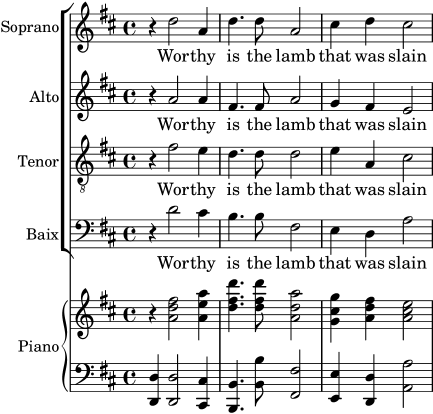
Cap de les plantilles proporciona aquesta disposició amb exactitud. La més semblant és Partitura vocal SATB i reducció per a piano automàtica, però necessitem canviar la disposició i afegir un acompanyament de piano que no estigui derivat automàticament de les parts vocals. Les variables que contenen la música i la lletra de les parts vocals és adequat, però haurem d’afegir variables per a la reducció de piano.
L’ordre en què apareixen els contextos al ChoirStaff de la
plantilla no es correspon amb l’ordre de la partitura vocal que
hem mostrat més amunt. Hem de reordenar-los perquè hi hagi quatre
pentagrames amb la lletra escrita directament a sota de les notes
de cada part. Totes les veus han de ser \voiceOne, que és
la predeterminada, perquè les instruccions \voiceXXX es
puguin eliminar. També hem d’especificar la clau de tenor (clau
de sol octava baixa) a les parts de tenor. Encara no hem trobat
la forma que la lletra s’especifica a la plantilla, així que hem
d’utilitzar el mètode que ens resulta familiar. També hem
d’escriure els noms de cada pentagrama.
En fer-lo així obtenim el ChoirStaff següent:
\new ChoirStaff <<
\new Staff = "sopranos" <<
\set Staff.instrumentName = "Soprano"
\new Voice = "sopranos" {
\global
\musicaSoprano
}
>>
\new Lyrics \lyricsto "sopranos" {
\lletraSoprano
}
\new Staff = "altos" <<
\set Staff.instrumentName = "Alto"
\new Voice = "altos" {
\global
\musicaAlto
}
>>
\new Lyrics \lyricsto "altos" {
\lletraAlto
}
\new Staff = "tenors" <<
\set Staff.instrumentName = "Tenor"
\new Voice = "tenors" {
\global
\musicaTenor
}
>>
\new Lyrics \lyricsto "tenors" {
\lletraTenor
}
\new Staff = "baixos" <<
\set Staff.instrumentName = "Baix"
\new Voice = "baixos" {
\global
\musicaBaix
}
>>
\new Lyrics \lyricsto "baixos" {
\lletraBaix
}
>> % fi del ChoirStaff
A continuació podem treballar sobre la part de piano. És fàcil: tan sols s’ha de treure la part de piano de la plantilla de ‘Piano solista’:
\new PianoStaff << \set PianoStaff.instrumentName = "Piano" \new Staff = "superior" \superior \new Staff = "inferior" \inferior >>
i escriure les definicions de variable per a superior i
inferior.
Els grups ChoirStaff i PianoStaff s’han de combinar utilitzant angles dobles, atès que els volem apilar l’un sobre l’altre
<< % combina els grups ChoirStaff i PianoStaff l'un sobre l'altre
\new ChoirStaff <<
\new Staff = "sopranos" <<
\new Voice = "sopranos" {
\global
\musicaSoprano
}
>>
\new Lyrics \lyricsto "sopranos" {
\lletraSoprano
}
\new Staff = "altos" <<
\new Voice = "altos" {
\global
\musicaAlto
}
>>
\new Lyrics \lyricsto "altos" {
\lletraAlto
}
\new Staff = "tenores" <<
\clef "G_8" % clave de tenor
\new Voice = "tenores" {
\global
\musicaTenor
}
>>
\new Lyrics \lyricsto "tenores" {
\lletraTenor
}
\new Staff = "baixos" <<
\clef "bass"
\new Voice = "baixos" {
\global
\musicaBaix
}
>>
\new Lyrics \lyricsto "baixos" {
\lletraBaix
}
>> % fi del ChoirStaff
\new PianoStaff <<
\set PianoStaff.instrumentName = "Piano"
\new Staff = "upper" \upper
\new Staff = "lower" \lower
>>
>>
En combinar tot això junt i escriure la música dels tres compassos de l’exemple anterior, obtenim:
global = { \key d \major \time 4/4 } musicaSoprano = \relative { \clef "treble" r4 d''2 a4 | d4. d8 a2 | cis4 d cis2 | } lletraSoprano = \lyricmode { Wor -- thy | is the lamb | that was slain | } musicaAlto = \relative { \clef "treble" r4 a'2 a4 | fis4. fis8 a2 | g4 fis fis2 | } lletraAlto = \lletraSoprano musicaTenor = \relative { \clef "G_8" r4 fis'2 e4 | d4. d8 d2 | e4 a, cis2 | } lletraTenor = \lletraSoprano musicaBaix = \relative { \clef "bass" r4 d'2 cis4 | b4. b8 fis2 | e4 d a'2 | } lletraBaix = \lletraSoprano upper = \relative { \clef "treble" \global r4 <a' d fis>2 <a e' a>4 | <d fis d'>4. <d fis d'>8 <a d a'>2 | <g cis g'>4 <a d fis> <a cis e>2 | } lower = \relative { \clef "bass" \global <d, d'>4 <d d'>2 <cis cis'>4 | <b b'>4. <b' b'>8 <fis fis'>2 | <e e'>4 <d d'> <a' a'>2 | } \score { << % combina el ChoirStaff i PianoStaff en paral·lel \new ChoirStaff << \new Staff = "sopranos" << \set Staff.instrumentName = "Soprano" \new Voice = "sopranos" { \global \musicaSoprano } >> \new Lyrics \lyricsto "sopranos" { \lletraSoprano } \new Staff = "altos" << \set Staff.instrumentName = "Alto" \new Voice = "altos" { \global \musicaAlto } >> \new Lyrics \lyricsto "altos" { \lletraAlto } \new Staff = "tenors" << \set Staff.instrumentName = "Tenor" \new Voice = "tenors" { \global \musicaTenor } >> \new Lyrics \lyricsto "tenors" { \lletraTenor } \new Staff = "baixos" << \set Staff.instrumentName = "Baix" \new Voice = "baixos" { \global \musicaBaix } >> \new Lyrics \lyricsto "baixos" { \lletraBaix } >> % fi ChoirStaff \new PianoStaff << \set PianoStaff.instrumentName = "Piano " \new Staff = "upper" \upper \new Staff = "lower" \lower >> >> }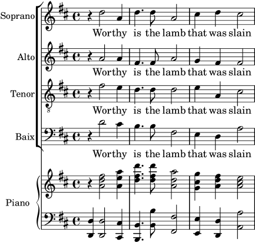
4.4.3 Crear una partitura partint de zero
Després d’adquirir una mica de soltesa en l’escriptura del codi del LilyPond, us adonareu que és més fàcil construir completament una partitura partint de zero, que modificar una plantilla. També podeu desenvolupar el vostre propi estil de forma que s’adapti al tipus de música que us agradi. Vegem a continuació com confeccionar una partitura per a un preludi d’òrgan, com a exemple.
Comencem amb una secció per al encapçalament. Aquí és on van el títol, nom del compositor, etc., després van les definicions de les variables, i finalment el bloc de partitura. Comencem a veure-les per sobre i més tard completarem els detalls.
Utilitzarem els dos primers compassos del preludi de Bach basat en Jesu, meine Freude, que està escrit per a òrgan amb dos manuals i pedal. Conté els dos compassos següents de música al final de la secció. La part del manual superior té dues veus, i l’inferior i el pedal, una veu cada u. Així doncs, necessitem quatre definicions per a la música i una més per definir el compàs i la tonalitat:
\version "2.26.0"
\header {
title = "Jesu, meine Freude"
composer = "J S Bach"
}
keyTime = { \key c \minor \time 4/4 }
MusicaManualUVeuU = { s1 }
MusicaManualUVeuDos = { s1 }
MusicaManualDos = { s1 }
MusicaOrganPedal = { s1 }
\score {
}
De moment hem escrit tan sols una nota espaiadora, s1, en
lloc de la música de veritat. Li afegirem més endavant.
A continuació vegem què va al bloc de partitura. Senzillament, reflectirem l’estructura de pentagrames que desitgem. La música d’òrgan s’escriu s’escriu en general en tres pentagrames, un per cada un dels manuals i l’altre pel pedal. Els pentagrames dels manuals s’abasten amb una clau, així que els inclourem en un grup PianoStaff. La primera part de manual té dues veus, i la segona una sola.
\new PianoStaff <<
\new Staff = "ManualU" <<
\new Voice {
\MusicaManualUVeuU
}
\new Voice {
\MusicaManualUVeuDos
}
>> % fi del context de Staff ManualU
\new Staff = "ManualDos" <<
\new Voice {
\MusicaManualDos
}
>> % fi del context de Staff ManualDos
>> % fi del context de PianoStaff
Després, hem d’afegir un pentagrama per a l’òrgan de pedal. Això va per sota del PianoStaff, però ha de ser simultani amb ell, per la qual cosa escrivim angles dobles rodejant als dos. Si ens oblidem d’això, es produirà un error al fitxer log de registre. És un error molt comú que cometrà abans o després! Intenteu copiar l’exemple final que apareix al final de la secció, esborreu els dobles angles i processeu el fitxer per veure quin error produeix.
<< % el grup PianoStaff i el pentagrama de Pedal son simultanis
\new PianoStaff <<
\new Staff = "ManualU" <<
\new Voice {
\MusicaManualUVeuU
}
\new Voice {
\MusicaManualUVeuDos
}
>> % fi del context de Staff ManualU
\new Staff = "ManualDos" <<
\new Voice {
\MusicaManualDos
}
>> % fi del context de Staff ManualDos
>> % fi del context de PianoStaff
\new Staff = "OrganPedal" <<
\new Voice {
\MusicaOrganPedal
}
>>
>>
No és necessari utilitzar la construcció simultània <<
… >> per al pentagrama del manual dos i el pentagrama del
òrgan de pedal, atès que contenen una única expressió, però no fa
mal, i és un bon costum utilitzar sempre dobles angles després de
\new Staff quan hi diverses veus. El contrari és cert per
a les veus: normalment han d’anar seguides de claus {
… } en cas que tinguem música codificada com a variables
diferents que s’han de situar consecutivament.
Afegim aquesta estructura al bloc de partitura, i ajustem el
sagnat dels marges. També escrivim les claus
corresponents, ens assegurem que les pliques i lligadures d’unió
i expressió en cada una de les veus del pentagrama superior
apunten en la direcció adequada amb \voiceOne i
\voiceTwo i escrivim el compàs i la tonalitat en cadascú
dels pentagrames usant la nostra variable prèviament definida
\TimeKey.
\score {
<< % el grup PianoStaff i el pentagrama de Pedal són simultanis
\new PianoStaff <<
\new Staff = "ManualU" <<
\keyTime % establir compàs i tonalitat
\clef "treble"
\new Voice {
\voiceOne
\MusicaManualUVeuU
}
\new Voice {
\voiceTwo
\MusicaManualUVeuDos
}
>> % fi del context de Staff ManualU
\new Staff = "ManualDos" <<
\keyTime
\clef "bass"
\new Voice {
\MusicaManualDos
}
>> % fi del context de Staff ManualDos
>> % fi del context de PianoStaff
\new Staff = "OrganPedal" <<
\keyTime
\clef "bass"
\new Voice {
\MusicaOrganPedal
}
>> % fi del pentagrama de OrganPedal
>>
} % fi del context Score
La disposició anterior dels pentagrames d’òrgan és gairebé
perfecta; tanmateix, hi ha un lleuger defecte que no és
visible quan s’observa un sol sistema: la distància entre el
pentagrama de pedal i el de la mà esquerra hauria de ser
aproximadament la mateixa que la que hi ha entre els pentagrames
de les mans esquerra i dreta. Concretament, la ampliabilitat dels
pentagrames dins d’un context PianoStaff és limitada (de
forme que la distància entre els pentagrames de les mans esquerra
i dreta mai no creixin excessivament), i el pentagrama dels pedals
hauria de comportar-se de una manera semblant.
El grau d’ampliabilitat i separabilitat dels pentagrames es pot
controlar amb la propietat staff-staff-spacing de
l’‘objecte gràfic’ VerticalAxisGroup (els objectes gràfics
reben en general el nom de ‘grob’s a la documentació del
LilyPond); no us preocupeu de moment dels detalls, ja que això
s’explica més tard de forma exhaustiva. Els més curiosos podeu
donar una ullada a
Panoràmica de la modificació de les propietats.
En aquest cas volem modificar solament la sub-propietat
stretchability. Un altre cop, els curiosos trobareu els
valors predeterminats per a la propietat staff-staff-spacing al
fitxer scm/define-grobs.scm examinant la definició del grob
VerticalAxisGroup. El valor de stretchability
s’agafa de la definició del context PianoStaff (al fitxer
ly/engraver-init.ly) de forma que els valors siguin idèntics.
\score {
<< % el grup PianoStaff i el pentagrama de Pedal son simultanis
\new PianoStaff <<
\new Staff = "ManualU" <<
\keyTime % establir compàs y tonalitat
\clef "treble"
\new Voice {
\voiceOne
\MusicaManualUVeuU
}
\new Voice {
\voiceTwo
\MusicaManualUVeuDos
}
>> % % fi del context de Staff ManualU
\new Staff = "ManualDos" \with {
\override VerticalAxisGroup.staff-staff-spacing.stretchability = 5
} <<
\keyTime
\clef "bass"
\new Voice {
\MusicaManualDos
}
>> % fi del context de Staff ManualDos
>> % fi del context de PianoStaff
\new Staff = "OrganPedal" <<
\keyTime
\clef "bass"
\new Voice {
\MusicaOrganPedal
}
>> % fi del pentagrama de OrganPedal
>>
} % fi del context Score
Amb això es completa l’estructura. Tota música per a òrgan de tres pentagrames tindrà una estructura semblant, tot i que el nombre de veus pot variar. Tot el que ens queda és afegir la música, i combinar totes les parts.
\header { title = "Jesu, meine Freude" composer = "J S Bach" } keyTime = { \key c \minor \time 4/4 } MusicaManualUVeuU = \relative { g'4 g f ees | d2 c | } MusicaManualUVeuDos = \relative { ees'16 d ees8~ 16 f ees d c8 d~ d c~ | 8 c4 b8 c8. g16 c b c d | } MusicaManualDos= \relative { c'16 b c8~ 16 b c g a8 g~ 16 g aes ees | f16 ees f d g aes g f ees d ees8~ 16 f ees d | } MusicaOrganPedal = \relative { r8 c16 d ees d ees8~ 16 a, b g c b c8 | r16 g ees f g f g8 c,2 | } \score { << % PianoStaff i Pedal Staff han de ser simultanis \new PianoStaff << \new Staff = "ManualU" << \keyTime % establir la clau i l'armadura \clef "treble" \new Voice { \voiceOne \MusicaManualUVeuU } \new Voice { \voiceTwo \MusicaManualUVeuDos } >> % fi del context Staff ManualU \new Staff = "ManualDos" \with { \override VerticalAxisGroup.staff-staff-spacing.stretchability = 5 } << \keyTime \clef "bass" \new Voice { \MusicaManualDos } >> % fi del context Staff ManualDos >> % fi del context PianoStaff \new Staff = "PedalOrgan" << \keyTime \clef "bass" \new Voice { \MusicaOrganPedal } >> % fi del context Staff PedalOrgan >> } % fi del context Score![[image of music]](28/lily-6452f9e8.png)
Vegeu també
Glossari musical: system.
| [ << Conceptes fonamentals ] | [Top][Contents][Index] | [ Ajustament de la sortida >> ] |
| [ < Crear una partitura partint de zero ] | [ Up: Extensió de les plantilles ] | [ Partitures i particel·les > ] |
4.4.4 Estalvi de tecleig mitjançant variables i funcions
Arribats a aquest punt, heu vist coses d’aquest tipus:
hornNotes = \relative { c''4 b dis c } \score { { \hornNotes } }![[image of music]](6a/lily-30bd54bc.png)
Fins i tot us adonareu que això pot ser útil en música minimalista:
fragmentA = \relative { a'4 a8. b16 } fragmentB = \relative { a'8. gis16 ees4 } violí = \new Staff { \fragmentA \fragmentA | \fragmentB \fragmentA | } \score { { \violí } }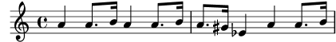
Tot i així també es pot fer servir aquests identificadors (que també es coneixen com a variables, macros o instruccions definides per l’usuari) per fer trucs:
dolce = \markup { \italic \bold dolce } padText = { \once \override TextScript.padding = #5.0 } fthenp =_\markup { \dynamic f \italic \small { 2nd } \hspace #0.1 \dynamic p } violí = \relative { \repeat volta 2 { c''4._\dolce b8 a8 g a b | \padText c4.^"hi there!" d8 e' f g d | c,4.\fthenp b8 c4 c-. | } } \score { { \violí } \layout { ragged-right = ##t } }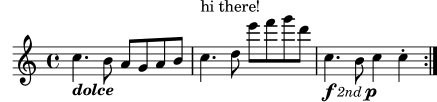
Òbviament aquests identificadors són útils per estalviar tecleig. Però són dignes de tenir en compte fins i tot si s’utilitzaran un sol cop: redueixen la complexitat. Examinem l’exemple anterior reescrit sense cap identificador. Trobareu que és molt més difícil de llegir, sobretot l’última línia.
violí = \relative {
\repeat volta 2 {
c''4._\markup { \italic \bold dolce } b8 a8 g a b |
\once \override TextScript.padding = #5.0
c4.^"hi there!" d8 e' f g d |
c,4.\markup {
\dynamic f \italic \small { 2nd } \hspace #0.1 \dynamic p
}
b8 c4 c-. |
}
}
Fins ara hem contemplat la substitució estàtica: quan el LilyPond
es troba amb \padText, el substitueix amb allò que hem
definit que sigui (és a dir, tot el que està a la dreta de
padtext=).
El LilyPond també pot gestionar substitucions no estàtiques (penseu en elles com funcions).
padText = #(define-music-function (padding) (number?) #{ \once \override TextScript.padding = #padding #}) \relative { c'''4^"piu mosso" b a b | \padText #1.8 c4^"piu mosso" d e f | \padText #2.6 c4^"piu mosso" fis a g | }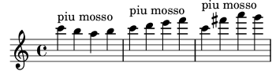
La utilització d’identificadors també és una bona forma de reduir
el treball si la sintaxis d’entrada del LilyPond canvia (vegeu
Actualització de fitxers amb convert-ly). Si teniu una sola
definició (com ara \dolce) per a tots els fitxers (vegeu
Fulls d’estil), i després la sintaxis es
modifica, sols haurà d’actualitzar la seva definició \dolce
única, enlloc de haver de fer canvis a cadascú dels fitxers
.ly.
4.4.5 Partitures i particel·les
En música orquestral, totes les notes s’imprimeixen dues vegades. Un cop en les particel·les per a tots els músics, i una altra per a la partitura del director. Els identificadors es poden usar per evitar la duplicació del treball. La música s’escriu un cop s’emmagatzema en una variable. El contingut d’aquesta variable s’usa després per generar tant la particel·la com la partitura del director.
És molt convenient definir les notes en un fitxer especial. Per exemple, suposem que el fitxer trompa.ly conté la següent part d’un duo per a trompa i fagot:
notesTrompa = \relative {
\time 2/4
r4 f8 a | cis4 f | e4 d |
}
Després es fa una particel·la escrivint en un fitxer el següent:
\include "trompa.ly"
\header {
instrument = "Trompa en Fa"
}
{
\transpose f c' \notesTrompa
}
La línia
\include "trompa.ly"
substitueix el contingut de trompa.ly en aquesta posició
dins del fitxer, així que notesTrompa es defineix amb
posterioritat. La instrucció \transpose f c' indica
que l’argument constituït per \notesTrompa s’ha de
transposar una quina cap amunt. El que sona com f s’escriu
com c', el que correspon amb el to d’afinació d’una trompa
normal en Fa. La transposició es pot veure a la següent
sortida
![[image of music]](0d/lily-d279cca6.png)
A peces per a conjunt, amb freqüència una de les veus no sona
durant molts compasso. Això queda denotat per un silenci
especial, el silenci multicompàs. S’introdueix amb una R
majúscula seguida d’una duració (1 en el cas de la
rodona, 2 en el caso de una blanca,
etc.). Multiplicant la duració es poden construir silencis més
llargs. Per exemple, aquest silenci ocupa 3 compassos de 2/4
R2*3
Quan s’imprimeix la particel·la s’han de comprimir els silencis multicompàs. Això es fa establint una variable de temps de execució
\set Score.skipBars = ##t
Aquesta instrucció estableix el valor de la propietat
skipBars al context de Score a vertader
(##t). Anteposant el silenci i aquesta opció a la música
anterior, arribem al següent resultat
![[image of music]](c0/lily-189a6e33.png)
Aquesta partitura es fa combinant tota la música junta. Suposant
que l’altra veu es troba dins de notesFagot al fitxer
fagot.ly, la partitura es fa amb
\include "fagot.ly" \include "trompa.ly" << \new Staff \notesTrompa \new Staff \notesFagot >>
el que ens porta a
![[image of music]](66/lily-d38f2d5a.png)
| [ << Conceptes fonamentals ] | [Top][Contents][Index] | [ Plantilles >> ] |
| [ < Partitures i particel·les ] | [ Up: Top ] | [ Elements d’ajustament > ] |
5 Ajustament de la sortida
Aquest capítol tracta de com modificar la sortida. El LilyPond és extremadament configurable; pràcticament tots els fragments de la sortida es poden canviar.
| [ << Ajustament de la sortida ] | [Top][Contents][Index] | [ Plantilles >> ] |
| [ < Ajustament de la sortida ] | [ Up: Ajustament de la sortida ] | [ Introducció a l’ajustament > ] |
5.1 Elements d’ajustament
| 5.1.1 Introducció a l’ajustament | ||
| 5.1.2 Objectes i interfícies | ||
| 5.1.3 Convencions de noms d’objectes i propietats | ||
| 5.1.4 Mètodes d’ajustament |
| [ << Ajustament de la sortida ] | [Top][Contents][Index] | [ Plantilles >> ] |
| [ < Elements d’ajustament ] | [ Up: Elements d’ajustament ] | [ Objectes i interfícies > ] |
5.1.1 Introducció a l’ajustament
L’‘ajustament’ és un terme del LilyPond que s’usa pels diversos mètodes que l’usuari té a la seva disposició per modificar el procés d’interpretació del fitxer d’entrada i canviar l’aparença de la sortida impresa. Alguns ajustos són mols fàcils d’usar; d’altres són complexos. Però en conjunt, els mètodes d’ajustament disponibles possibiliten aconseguir gairebé qualsevol aparença que desitgem a la música impresa.
En aquesta secció estudiarem els conceptes bàsics que calen per entendre l’ajustament. Més tard donarem un ampli ventall d’ordres llistes per usar, que podreu simplement copiar per obtenir el mateix efecte a les vostres partitures, i al mateix temps mostrarem la forma de construir aquestes ordres perquè pugueu aprendre com desenvolupar els vostres propis ajustaments.
Abans de començar aquest capítol, potser vulgueu donar una ullada a la secció Contextos i gravadors, atès que els contextos, els gravadors i les propietats que es contenen en aquests elements són fonamentals per comprendre i construir els ajustaments.
| [ << Ajustament de la sortida ] | [Top][Contents][Index] | [ Plantilles >> ] |
| [ < Introducció a l’ajustament ] | [ Up: Elements d’ajustament ] | [ Convencions de noms d’objectes i propietats > ] |
5.1.2 Objectes i interfícies
L’ajustament consisteix en modificar el funcionament i estructure interna del programa LilyPond, per la qual cosa en primer lloc introduirem alguns termes que es fan servir per descriure aquestes operacions i estructures internes.
El terme ‘Objecte’ és un terme genèric que s’usa per referir-se
A les múltiples estructures que el LilyPond construeix durant el
processat d’un fitxer d’entrada. D’aquesta manera, quan es troba
una instrucció com ara \new Staff, es construeix un objecte
nou de tipus Staff. Aleshores, aquest objecte Staff
conté totes les propietats associades amb aquest pentagrama en
particular, per exemple, el seu nom i armadura, a més d’altres
detalls dels gravadors que s’han assignat perquè operin dins del
context del pentagrama. De forma semblant, hi ha objectes que
emmagatzemen les propietats de tota la resta de contextos, com ara
objectes de Voice, objectes de Score, objectes de
Lyrics, així com objectes que representen tots els elements
de notació com ara línies divisòries, caps de les notes,
lligadures, indicacions dinàmiques, etc. Cada objecte té el seu
propi conjunt de valors de propietat.
Certs tipus d’objectes reben noms especials. Els objectes que representen elements de notació sobre la sortida impresa com ara caps de notes, pliques, lligadures d’expressió i d’unió, digitacions, claus, etc., reben el nom de ‘Objectes de presentació’, sovint coneguts com ‘Objectes gràfics’, o abreujadament ‘Grobs’. Encara són objectes, en el sentit genèric que hem mencionat, i també tots ells tenen propietats associades, com la seva posició, mida, color, etc.
Certs objectes de presentació són encara més especialitzats, Les lligadures de fraseig, els reguladores, les indicacions d’octava alta i baixa, i mols altres objectes gràfics no estan situats en un sol lloc: tenen un punt d’inici, un punt final, i un potser altres propietats relacionades amb la seva forma. Els objectes amb una forma estesa com aquests, reben el nom d’«objectes d’extensió» o ‘Spanners’.
Els «spanners» no es poden ajustar després d’haver-se creat. Això
inclou tant a StaffSymbol com a LedgerLineSpanner,
que continuen al llarg de tota la partitura (excepte si si se’ls
dóna fi amb l’ordre \stopStaff i es tornen a crear amb
l’ordre \startStaff.
Encara més, hi ha objectes gràfics ‘abstractes’ que no
imprimeixen res per sí mateixos, sinó que en realitat el que fan
és que recopilen, posicionen i gestionen a altres objectes
gràfics. El exemples habituals són DynamicLineSpanner,
BreakAlignment, NoteColumn,
VerticalAxisGroup, NonMusicalPaperColumn i
semblants. Més tard veurem com s’usen alguns d’ells.
Encara falta explicar què són les ‘Interfícies’. Molts
objectes, tot i que són força diferents, comparteixen
funcionalitats que s’han de processar de la mateixa manera. Per
exemple, tots els objectes gràfics tenen un color, una mida, una
posició, etc., i totes aquestes propietats es processen de la
mateixa forma durant la interpretació del fitxer d’entrada per
part del LilyPond. Per simplificar aquestes operacions internes,
aquestes accions i propietats comunes s’agrupen a un objecte
anomenat grob-interface, interfície d’objecte gràfic. Hi ha
moltes altres agrupacions de propietats comunes com aquesta, i
cadascuna rep un nom que acaba en interface. En total hi
ha més de 100 interfícies d’aquestes. Veurem més endavant perquè
és interessant i d’utilitat per a l’usuari.
Aquests són, en definitiva, els termes principals relatius als objectes que utilitzarem a aquest capítol.
| [ << Ajustament de la sortida ] | [Top][Contents][Index] | [ Plantilles >> ] |
| [ < Objectes i interfícies ] | [ Up: Elements d’ajustament ] | [ Mètodes d’ajustament > ] |
5.1.3 Convencions de noms d’objectes i propietats
Ja hem vist certes convencions de nomenclatura d’objectes, a la secció Contextos i gravadors. Aquí, per a una referència més fàcil, presentem una llista dels tipus d’objectes i propietats més comuns, junt amb les convencions segons les quals reben el seu nom, i un parell d’exemples de noms reals. Hem fet servir una ‘A’ majúscula per denotar qualsevol caràcter alfabètic en majúscules, i ‘aaa’ per qualsevol nombre de caràcters alfabètics en minúscula. Altres caràcters es fan servir literalment com estan.
| Objecte o tipus de propietat | Convenció de nomenclatura | Exemples |
|---|---|---|
| Contextos | Aaaa o AaaaAaaaAaaa | Staff, GrandStaff |
| Objecte de presentació | Aaaa o AaaaAaaaAaaa | Slur, NoteHead |
| Gravadors | Aaaa_aaa_engraver | Clef_engraver, Note_heads_engraver |
| Interfícies | aaa-aaa-interface | grob-interface, break-aligned-interface |
| Propietats de contextos | aaa o aaaAaaaAaaa | alignAboveContext, skipBars |
| Propietats d’objectes de presentació | aaa o aaa-aaa-aaa | direction, beam-thickness |
Com podrem veure a la brevetat, les propietats dels diferents tipus d’objecte es poden modificar mitjançant diferents ordres; així doncs, és útil poder reconèixer els tipus d’objectes i propietats a partir dels seus noms.
Vegeu també
Referencia de la notació: Modificació de les propietats
| [ << Ajustament de la sortida ] | [Top][Contents][Index] | [ Plantilles >> ] |
| [ < Convencions de noms d’objectes i propietats ] | [ Up: Elements d’ajustament ] | [ L’ordre \override > ] |
5.1.4 Mètodes d’ajustament
L’ordre \override
L’ordre \override | ||
L’ordre \revert | ||
El prefix \once | ||
L’ordre \overrideProperty | ||
L’ordre \tweak | ||
El prefix \single |
| [ << Ajustament de la sortida ] | [Top][Contents][Index] | [ Plantilles >> ] |
| [ < Mètodes d’ajustament ] | [ Up: Mètodes d’ajustament ] | [ L’ordre \revert > ] |
L’ordre \override
Ja hem vist les ordres \set i \with, que s’usen per
canviar les propietats dels contextos i per treure i
posar gravadors, a Modificar les propietats dels contextos i Afegir i eliminar gravadors. Ara hem
d’examinar algunes altres ordres importants.
L’ordre que canvia les propietats dels objectes
de presentació és \override. Atès que aquesta ordre ha de
modificar propietats internes que es troben a un lloc profund dins
del LilyPond, la seva sintaxi no és tan simple com la de la resta
de les ordres que hem fet servir fins ara. Heu de saber
exactament quina propietat de quin objecte i a quin context s’ha
de modificar, i quin ha de ser el seu nou valor. Anem a veure com
es fa.
La sintaxi genèrica d’aquesta ordre és:
\override Context.ObjecteDePresentació.propietat-de-presentació = #valor
Això establirà la propietat de nom propietat-de-presentació de l’objecte de presentació amb el nom ObjecteDePresentació, que es membre del context Context, al valor valor.
El Context es pot ometre (i normalment és així) quan el
context requerit es troba implicat sense ambigüitat i és un dels
contextos del nivell més baix, és a dir: Voice,
ChordNames o Lyrics, i l’ometrem en molts dels
exemples següents. Més endavant veurem quan cal especificar-lo
Les últimes seccions tracten de forma exhaustiva les propietats i els seus valors, vegeu Tipus de propietats. Però en aquesta secció usarem sols unes quantes propietats i valors senzills que siguin fàcils d’entendre, per il·lustrar el format i la utilització d’aquestes instruccions.
Les expressions principals del LilyPond són elements musicals com notes, duracions, i elements marcatge. Les expressions més bàsiques com ara números, cadenes de caràcters i llistes, es processen al ‘mode de l’Scheme’, que s’invoca mitjançant del prefix ‘#’ escrit abans del valor. Tot i que els valors poden tenir a vegades una representació vàlida al mode de música del LilyPond, aquest manual utilitza sempre ‘#’ per a l’escriptura, per coherència. Per obtenir més informació sobre el mode de l’Scheme, consulteu Sintaxi de l’Scheme del LilyPond.
\override és l’ordre d’ús més comú dins de l’ajustament, i
durant la major part de la resta d’aquest capítol presentarem
exemples sobre el seu ús. A continuació hi ha un exemple senzill
per canviar el color d’un cap:
\relative { c'4 d \override NoteHead.color = #red e4 f | \override NoteHead.color = #green g4 a b c | }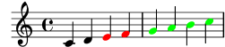
| [ << Ajustament de la sortida ] | [Top][Contents][Index] | [ Plantilles >> ] |
[ < L’ordre \override ] | [ Up: Mètodes d’ajustament ] | [ El prefix \once > ] |
L’ordre \revert
Un cop sobreescrita, la propietat reté el seu nou valor fins que
se sobreescriu de o es troba una ordre \revert. L’ordre té
la sintaxi següent i causa que el valor de la propietat torni al
seu valor predeterminat original; observeu que no és al seu valor
previ si s’han fet servir diverses ordres \override.
\revert Context.ObjecteDePresentació.propietat-de-presentació
Un cop més, igual que Context dins de l’ordre
\override, freqüentment no és necessari especificar el
Context. S’ometrà en molts dels exemples següents. Aquí
retornem el color del cap al valor predeterminat per a les últimes
dues notes:
\relative { c'4 d \override NoteHead.color = #red e4 f | \override NoteHead.color = #green g4 a \revert NoteHead.color b4 c | }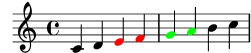
| [ << Ajustament de la sortida ] | [Top][Contents][Index] | [ Plantilles >> ] |
[ < L’ordre \revert ] | [ Up: Mètodes d’ajustament ] | [ L’ordre \overrideProperty > ] |
El prefix \once
\override, \revert, \set i \unset es
poden fer precedir per \once. Això fa que l’ordre sigui
efectiva sols durant el temps musical en curs i abans que la
propietat torni a tenir un altre cop el seu valor anterior (que
pot ser diferent al seu valor predeterminat i encara s’està
aplicant una altra ordre \override de
sobreescriptura). Utilitzant el mateix exemple, podem canviar el
color d’una sola nota de la manera següent:
\relative { c'4 d \override NoteHead.color = #red e4 f | \once \override NoteHead.color = #green g4 a \once \revert NoteHead.color b c | \revert NoteHead.color f2 c | }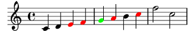
El prefix \once també es pot usar davant de moltes ordres
predefinides per limitar el seu efecte a un sol moment musical:
\relative { c'4( d) \once \slurDashed e4( f) | g4( a) \once \hideNotes b( c) | }![[image of music]](0c/lily-ee40499e.png)
| [ << Ajustament de la sortida ] | [Top][Contents][Index] | [ Plantilles >> ] |
[ < El prefix \once ] | [ Up: Mètodes d’ajustament ] | [ L’ordre \tweak > ] |
L’ordre \overrideProperty
Hi ha una altra forma per a l’ordre de sobreescriptura,
\overrideProperty, que ocasionalment és necessària. La
mencionem aquí amb un propòsit d’exhaustivitat, però per veure més
detalls consulteu Ajustaments difícils.
| [ << Ajustament de la sortida ] | [Top][Contents][Index] | [ Plantilles >> ] |
[ < L’ordre \overrideProperty ] | [ Up: Mètodes d’ajustament ] | [ El prefix \single > ] |
L’ordre \tweak
L’última ordre d’ajustament que està disponible és \tweak.
S’ha de fer servir quan diversos objectes s’usen en el mateix
moment musical, però sols volem canviar les propietats d’alguns
d’ells, per exemple una sola nota dins d’un acord. L’ús de
\override per a la sobreescriptura afectaria a totes les
notes de l’acord, mentre que \tweak sols afecta a l’element
següent del flux d’entrada.
Vet aquí un exemple. Suposeu que volem canviar la mida del cap de
la nota intermèdia (el Mi) a un acord de Do major. En primer
lloc, vejam el fa faria \once \override:
\relative { <c' e g>4 \once \override NoteHead.font-size = #-3 <c e g>4 <c e g>4 }![[image of music]](54/lily-2b09c8c0.png)
Veiem que la sobreescriptura amb override afecta a totes
els caps de les notes de l’acord. Això és així perquè totes les
notes d’un acord tenen lloc en el mateix moment musical, i
l’acció de \once és aplicar la sobreescriptura a tots els
objectes de presentació del tipus especificat que tenen lloc en el
mateix moment musical que la pròpia ordre de sobreescriptura \override.
L’ordre \tweak pera de una manera diferent. Actua sobre
l’element immediatament següent dins del flux d’entrada. En la
seva forma més senzilla és efectiu sols sobre objectes que es
creen directament a partir de l’element següent, en essència els
caps i les articulacions.
Així doncs, tornant al nostre exemple, la mida de la nota intermèdia es canviaria de la forma següent:
\relative { <c' e g>4 <c \tweak font-size #-3 e g>4 }![[image of music]](fe/lily-cbc33c54.png)
Observeu que la sintaxi de \tweak no és igual que la de
\override. El context no s’ha d’especificar; de fet,
generaria un error fer-lo. Tant el context com l’objecte de
presentació estan implícits per l’element següent del flux
d’entrada. Observeu també que no ha d’haver un signe d’igual.
Així que la sintaxi de l’ordre \tweak en la seva forma
senzilla és:
\tweak propietat-de-presentació #valor
Una ordre \tweak també es pot usar per modificar sols una
d’una sèrie d’articulacions, com es mostra aquí:
a'4^"Black" -\tweak color #red ^"Red" -\tweak color #green _"Green"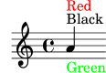
Observeu que l’ordre \tweak ha de venir precedida d’una
marca d’articulació perquè la pròpia expressió ajustada ha
d’aplicar-se com una articulació. En el cas de més d’una
sobreescriptura de direcció (^ o _), guanya la
sobreescriptura situada més a l’esquerra perquè s’aplica a l’últim
lloc.
Els objectes com ara pliques i alteracions accidentals es creen
més tard, i no directament a partir de l’esdeveniment que ve a
continuació. Encara és possible utilitzar \tweak sobre
aquests objectes creats indirectament mitjançant el nomenat
explícit de l’objecte de presentació, sempre i quan el LilyPond
pugui rastrejar el seu origen fins l’esdeveniment original:
<\tweak Accidental.color #red cis''4 \tweak Accidental.color #green es'' g''>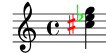
Aquesta forma extensa de l’ordre \tweak es pot descriure com
\tweak LayoutObject.layout-property #value "ABANS" \tweak objecte-de-presentació.propietat-de-presentació valor
L’ordre \tweak també s’ha d’usar per canviar l’aparença
d’un sol d’un conjunt de grups especials niuats que comencin al
mateix instant musical. A l’exemple següent, la clau de
treset llarg i el primer de les tres claus curtes comencen al
mateix moment musical, i per això qualsevol ordre \override
s’aplicaria als dos. A l’exemple s’usa \tweak per
distingir entre ells. La primera ordre \tweak especifica
que la clau del treset llarg s’ha de col·locar per sobre de
les notes i el segon especifica que el nombre del treset s’ha
d’imprimir en vermell sobre la clau del primer treset curt.
\relative c'' { \tweak direction #up \tuplet 3/4 { \tweak color #red \tuplet 3/2 { c8[ c c] } \tuplet 3/2 { c8[ c c] } \tuplet 3/2 { c8[ c c] } } }![[image of music]](6f/lily-9309f476.png)
Si els grups niuats no comencen al mateix moment, la seva aparença
es pot modificar de la forma usual mitjançant ordres \override:
\relative { \tuplet 3/2 { c'8[ c c] } \once \override TupletNumber.text = #tuplet-number::calc-fraction-text \tuplet 3/2 { c8[ c] c8[ c] \once \override TupletNumber.transparent = ##t \tuplet 3/2 { c8[ c c] } \tuplet 3/2 { c8[ c c] } } }![[image of music]](7e/lily-ad8ab812.png)
Vegeu també
Referència de la notació: L’ordre tweak.
| [ << Ajustament de la sortida ] | [Top][Contents][Index] | [ Plantilles >> ] |
[ < L’ordre \tweak ] | [ Up: Mètodes d’ajustament ] | [ Manual de referència de funcionament intern > ] |
El prefix \single
Suposem que volem emfatitzar el cap d’algunes notes dibuixant-les amb color i incrementant la seva mida, i suposem també que hem programat una funció per fer la tasca més còmoda:
emphNoteHead = { \override NoteHead.color = #red \override NoteHead.font-size = 2 } \relative { c''4 a \once \emphNoteHead f d | }![[image of music]](77/lily-fae9a999.png)
El \once previ funciona perfectament per emfatitzar notes
úniques o acords complets, però no es pot usar per emfatitzar una
sola nota dins d’un acord. Anteriorment vam veure com es
pot usar l’ordre \tweak per fer-lo, vegeu
L’ordre \tweak. Però
\tweak no es pot fer servir amb una funció; aquí és on
entra l’ordre \single:
emphNoteHead = { \override NoteHead.color = #red \override NoteHead.font-size = 2 } \relative { <c'' a \single \emphNoteHead f d>4 }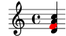
En resum, \single converteix les característiques fetes amb
\override en ajustaments fets amb \tweak de tal
manera que quan hi ha diversos objectes al mateix instant de temps
musical (com ara les notes d’un acord), \single afecta a
una única nota, la que es genera per l’expressió que afecta a una
única nota, la que es genera per l’expressió que segueix
immediatament, a diferencia de \once que afecta a tots
aquests objectes.
L’ús de \single d’aquesta forma amb una funció qualsevol
que contingui sols sobreescriptures, pot aplicar-se a les notes
individuals d’un acord. Malgrat això, \single no converteix
\revert, \set ni \unset en ajustaments de \tweak.
Vegeu també
Manual de aprenentatge:
L’ordre \tweak,
Ús de variables per als ajustaments de disposició.
| [ << Ajustament de la sortida ] | [Top][Contents][Index] | [ Plantilles >> ] |
[ < El prefix \single ] | [ Up: Ajustament de la sortida ] | [ Propietats dels objectes de presentació > ] |
5.2 Manual de referència de funcionament intern
| 5.2.1 Propietats dels objectes de presentació | ||
| 5.2.2 Propietats de les interfícies | ||
| 5.2.3 Tipus de propietats |
5.2.1 Propietats dels objectes de presentació
Suposeu que teniu una partitura amb una lligadura d’expressió que
al seu gust és massa fina i voleu dibuixar-la una mica més
gruixuda. Com heu de procedir? Ja sabeu, per les afirmacions
anteriors sobre la flexibilitat del LilyPond, que hi ha aquesta
possibilitat, i segurament penseu que caldrà alguna ordre de
sobreescriptura \override. Però, hi ha una propietat de
gruix per a les lligadures? I si hi ha, com es pot modificar?
Aquí es on intervé el Manual de Funcionament Intern. Conte tota
la informació que podeu necessitar per construir aquesta i la
resta d’ordres \override, de sobreescriptura.
Un advertiment abans de dirigir la nostra mirada a la referència de funcionament intern. Aquest és un document de referència, cosa que significa que es proveeixen poques explicacions o cap: el seu propòsit és presentar la informació de forma precisa i concisa. Per tant, us podrà sembla desencoratjador a primera ullada. No us amoïneu! La guia i les explicacions que presentem aquí us permetran extraure la informació de la referència de funcionament intern a vós mateix, sols us cal una mica de pràctica.
Anem a fer servir un exemple concret amb un senzill fragment de música real:
{ \key es \major \time 6/8 \relative { r4 bes'8 bes[( g]) g | g8[( es]) es d[( f]) as | as8 g } \addlyrics { The man who | feels love's sweet e -- | mo -- tion } }![[image of music]](64/lily-96937c4d.png)
Suposeu ara que decidim que ens agrades les lligadures una mica més gruixudes. És possible? La lligadura és, certament, un objecte de presentació, de manera que la qüestió és ‘Hi ha una propietat pertanyent a les lligadures d’expressió que controli el seu gruix?’ Per respondre a aquesta pregunta hem de mirar el manual de Referència de Funcionament Intern, abreujadament RFI1.
L’RFI és la versió del LilyPond que esteu usant es pot trobar a la pàgina web del LilyPond a https://lilypond.org. Aneu a la pàgina de la documentació i seguiu l’enllaç Manual de Referència de Funcionament Intern (RFI). Per als nostres propòsits pedagògics seria millor que utilitzéssiu la versió en HTML, no la ‘en una sola pàgina’ ni el PDF. Perquè els següents paràgrafs tinguin algun sentit haureu de consultar-lo realment al temps que llegiu.
Sota l’encapçalament Top podreu veure cinc enllaços. Seleccioneu l’enllaç Backend, que és on es troba la informació sobre els objectes de presentació. Un cop allí, sota l’encapçalament Backend, seguiu l’enllaç All layout objects. La pàgina que apareix relaciona totes els objectes de presentació que s’usen a la vostra versió del LilyPond, en ordre alfabètic. Segui l’enllaç Slur (lligadura d’expressió), i apareixeran relacionades les propietats de les lligadures d’expressió o Slurs.
Una forma alternativa de trobar aquesta pàgina és a partir de la Referencia de la Notació. En una de les pàgines que tracten de les lligadures d’expressió podreu trobar un enllaç al manual de referència del funcionament intern. Aquest enllaç us portarà directament a aquesta pàgina, tot i que si teniu una idea del nom de l’objecte de presentació que preteneu ajustar, li resultarà més fàcil anar directament al RFI i buscar allí.
Aquesta pàgina sobre les lligadures d’expressió dins del manual RFI ens diu en primer lloc que els objectes Slur es creen pel gravador Slur_engraver. A continuació relaciona els ajustos estàndard. Navegueu per ells buscant una propietat que pogués controlar el gruix de les lligadures, i trobarà
thickness (number)
1.2
Line thickness, generally measured in line-thickness
Això promet ser una bona opció per canviar el gruix. Ens diu que
el valor de thickness és un simple número, que el
valor predeterminat és 1.2, i que les unitats estan dins d’una
altra propietat anomenada line-thickness.
Com havíem dit amb anterioritat, hi ha entre poques i cap
explicació al RFI, però ja tenim informació suficient per provar
de canviar el gruix de la lligadura. Vejam que el nom de
l’objecte de presentació és Slur, que el nom de la
propietat que hem de canviar és thickness i que el nou
valor ha de ser un número una mica més gran que 1.2 si volem fer
les lligadures més gruixudes.
Ara podem construir la instrucció de sobreescriptura
\override simplement mitjançant la substitució dels valores
que hem trobar per als noms, ometent el context. Usarem un valor
molt gran per al gruix al començament, per estar segurs que
l’ordre estigui funcionant. Obtenim el següent:
\override Slur.thickness = #5.0
No oblideu el #' abans del nom de la propietat
i # abans del valor nou!
La pregunta final és ‘On s’ha de col·locar aquesta ordre?’ Tot i que ens falta seguretat i estem aprenent encara, la millor resposta és: ‘Dins de la música, abans de la primera lligadura i a prop d’ella.’ Fem-lo així:
{ \key es \major \time 6/8 \relative { % Increase thickness of all following slurs from 1.2 to 5.0 \override Slur.thickness = #5.0 r4 bes'8 bes[( g]) g | g8[( es]) es d[( f]) as | as8 g } \addlyrics { The man who | feels love's sweet e -- | mo -- tion } }![[image of music]](59/lily-54e2cffa.png)
i podem veure que la lligadura és, sense dubte, més gruixuda.
Així doncs, aquesta és la forma bàsica de construir ordres
\override o de sobreescriptura. Hi ha unes quantes
complicacions més amb les quals ens trobarem a seccions
posteriors, però ara coneixeu totes els principis essencials que
us calen per fer-lo per vós mateix (tot i que encara us fa falta
una mica de pràctica). Els següents exemples us donaran més
pràctica.
Cerca del context
Però en primer lloc, que hauria passat si haguéssim hagut
d’especificar el context? Quin seria? Podem suposar que les
lligadures estan al context Voice, per estar clarament associats
de manera estreta amb les línies individuals de música, però podem
tenir seguretat? Per esbrinar-lo, anem de nou a l’inici de la
pàgina del RFI que descriu les lligadures (Slur), con diu
‘Slur objects are created by the following engraver(s): Slur_engraver’
(«Els objectes de lligadura d’expressió es creen per: el gravador
Slur»). Així doncs, les lligadures d’expressió es creen en
qualsevol context en el que es trobi el gravador
Slur_engraver. Seguiu l’enllaç a la pàgina del gravador
Slur_engraver. Al final de tot, diu que el gravador
Slur_engraver és part de set contextos de veu, inclòs el
context de veu estàndard, Voice, per la qual cosa la nostra
suposició és encertada. I a causa que Voice és un dels
contextos de més baix nivell que es troba implícit sense
ambigüitat pel fet que estem escrivint notes, podem ometre’l en
aquest lloc concret.
Sobreescriptura per un sol cop
Com podeu veure, totes les lligadures són més gruixudes a
l’últim exemple. Però, i si volguéssim que sols la primera
lligadura fos més gruixuda? Això s’aconsegueix amb la instrucció
o prefix \once. Col·locat immediatament abans de la
instrucció \override ocasiona que sols canviï la lligadura
que comença a la nota immediata següent. Si la nota
immediata següent no inicia una lligadura, l’ordre no té cap
efecte en absolut: no es recorda fins que es trobi alguna
lligadura, sinó que simplement s’ignora. Així doncs, l’ordre que
porta \once s’ha de tornar a posicionar de la forma següent:
{ \key es \major \time 6/8 \relative { r4 bes'8 % Increase thickness of immediately following slur only \once \override Slur.thickness = #5.0 bes8[( g]) g | g8[( es]) es d[( f]) as | as8 g } \addlyrics { The man who | feels love's sweet e -- | mo -- tion } }![[image of music]](3c/lily-449b72d2.png)
Hem fet que ara sols la primera lligadura sigui més gruixuda.
L’ordre o prefix \once també es pot fer servir abans de
l’ordre \set.
Recuperació de l’ajustament
Finalment, i si volguéssim que sols les dues primeres lligadures
fossin més gruixudes? Per acabar; podríem usar dues ordres,
cadascuna d’elles precedida pel prefix \once, situades
immediatament abans de cada una de les notes on comencen les lligadures:
{ \key es \major \time 6/8 \relative { r4 bes'8 % Increase thickness of immediately following slur only \once \override Slur.thickness = #5.0 bes[( g]) g | % Increase thickness of immediately following slur only \once \override Slur.thickness = #5.0 g8[( es]) es d[( f]) as | as8 g } \addlyrics { The man who | feels love's sweet e -- | mo -- tion } }![[image of music]](69/lily-d204932b.png)
o podríem ometre l’ordre prefix \once i utilitzar l’ordre
\revert (restableix) per retornar la propietat del gruix,
thickness, al seu valor predeterminat després de la segona
lligadura:
{ \key es \major \time 6/8 \relative { r4 bes'8 % Increase thickness of all following slurs from 1.2 to 5.0 \override Slur.thickness = #5.0 bes[( g]) g | g8[( es]) es % Revert thickness of all following slurs to default of 1.2 \revert Slur.thickness d8[( f]) as | as8 g } \addlyrics { The man who | feels love's sweet e -- | mo -- tion } }![[image of music]](2f/lily-d4320ccc.png)
L’ordre \revert es pot utilitzar per retornar qualsevol
propietat que s’hagi canviat amb \override al seu valor
predeterminat. Podeu utilitzar el mètode que millor s’adapti a
allò que voleu fer.
D’aquesta manera finalitza la nostra introducció al manual de RFI, i el mètode bàsic d’ajustament. A continuació, en les últimes seccions d’aquest capítol trobareu diversos exemples, en par par introduir-vos a algunes de les possibilitats addicionals del manual RFI, i en part per proporcionar-vos més pràctica sobre com extraure informació d’ell. Aquests exemples aniran contenint cada cop menys paraules de guia i explicació.
| [ << Ajustament de la sortida ] | [Top][Contents][Index] | [ Plantilles >> ] |
| [ < Propietats dels objectes de presentació ] | [ Up: Manual de referència de funcionament intern ] | [ Tipus de propietats > ] |
5.2.2 Propietats de les interfícies
Suposeu ara que volem imprimir la lletra de la cançó en
cursiva. Quina forma d’instrucció \override necessitem per
fer-lo? En primer lloc mirem a la pàgina de RFI que fa una
relació de tots els objectes, ‘All layout objects’, com abans, i
busquem un objecte que pugui controlar la lletra de la cançó.
Trobem LyricText, que sembla adequat. En seguir aquest
enllaç es presenten les propietats ajustables per al text de la
lletra. Aquests inclouen font-series i font-size,
però res que pogués genera una forma cursiva. Això és perquè la
propietat de la forma és comuna a tots els objectes de font
tipogràfica, i per tant, en comptes d’incloure’l en cada u dels
objectes de presentació, s’agrupa junt amb altres propietats
comunes semblants i es deposita a un Interface, la
interfície dels tipus de lletra font-interface.
Per tant, ara necessitem aprendre com trobar les propietats de les interfícies, i descobrir quins objectes usen aquestes propietats d’interfície.
Mireu un altre cop la pàgina del RFI que descriu a LyricText. Al
final de la pàgina hi ha una llista d’enllaços a les interfícies
que LyricText contempla. La llista té set elements, entre ells
font-interface. En seguir aquest enllaç arribem a les
propietats associades amb aquesta interfície, que també són
propietats de tots els objectes que la porten, entre ells LyricText.
Ara veiem totes les propietats ajustables per l’usuari que
controles els tipus de lletra, entre elles
font-shape(symbol), on symbol es pot establir a
upright (recta), italics (cursiva) o caps
(majúscules petites).
Observareu que font-series i font-size també es
troben aquí relacionats. Això fa que de seguida se’ns plantegi la
pregunta: Perquè estan les propietats comunes de tipografia
font-series i font-size relacionades sota
LyricText així com sota la interfície font-interface
però font-shape no ho està? La resposta és que
font-series i font-size es canvie a partir dels seus
valors predeterminats globals quan es crea un objecte
LyricText, però font-shape no ho fa. Aleshores els
elements de la llista LyricText els diuen els valors per
aquestes dues propietats que són d’aplicació per a
LyricText. D’altres objectes que tenen en compte
font-interface establiran aquestes propietats de forma
diferent quan es creen.
Vejam ara si podem construir la instrucció \override per
canviar la lletra a cursiva. L’objecte és LyricText, la
propietat és font-shape i el valor és italic. Igual
que abans, ometrem el context.
Com a nota a part, tot i que és important, observeu que certes
propietats prenen valors que són símbols, com ara italic, i
han d’anar precedits per un apòstrof, '. Els símbols es
llegeixen a continuació internament per part del LilyPond.
Tingueu en compte la diferència amb les cadenes de text
arbitràries, que apareixeran com «una cadena de text»; per
veure més detalls sobre els símbols i les cadenes, consulteu
Tutorial de l’Scheme.
Així doncs, l’ordre \override necessària per imprimir la
lletra en cursiva és:
\override LyricText.font-shape = #'italic
Això s’ha d’escriure just davant de la lletra que ha d’afectar, d’aquesta forma:
{ \key es \major \time 6/8 \relative { r4 bes'8 bes[( g]) g | g8[( es]) es d[( f]) as | as8 g } \addlyrics { \override LyricText.font-shape = #'italic The man who | feels love's sweet e -- | mo -- tion } }![[image of music]](98/lily-bbbcaa0f.png)
i tota la lletra s’escriu en cursiva.
Nota: Dins de la lletra, deixeu sempre espais entre la síl·laba final i la clau de tancament.
Vegeu també
Manual de Extensió: Tutorial de l’Scheme.
| [ << Ajustament de la sortida ] | [Top][Contents][Index] | [ Plantilles >> ] |
| [ < Propietats de les interfícies ] | [ Up: Manual de referència de funcionament intern ] | [ Aparença dels objectes > ] |
5.2.3 Tipus de propietats
Fins aquí hem vis dos tipus de propietats: número i
símbol. Perquè sigui vàlid, el valor que es dóna a una
propietat ha de ser del tipus correcte i obeir les regles d’aquest
tipus. El tipus de la propietat es mostra sempre entre claus
després del nom de la propietat al RFI. Vet aquí una llista dels
tipus que us podrà caldre, junt amb les regles d’aquest tipus, i
alguns exemples. Heu d’escriure sempre un símbol d’encoixinat,
#, per suposat, endavant d’aquests valors quan
s’introdueixen a l’ordre \override, fins i tot si el propi
valor ja comença per #. Sols oferim aquí exemple per
a constants; si voleu calcular un valor usant l’Scheme, consulteu
Càlculs a l’Scheme.
| Tipus propietat | Regles | Exemples de propietat |
|---|---|---|
| Booleà | Vertader o fals, representat per #t o #f | #t, #f |
| Dimensió (en espais de pentagrama) | Un nombre decimal (en unitats de espais de pentagrama) | 2.5, 0.34 |
| Direcció | Una constant vàlida de direcció o el seu equivalent numèric
(0 o CENTER indiquen una direcció neutra) | LEFT, CENTER, UP,
1, -1 |
| Enter | Un número enter positiu | 3, -1 |
| Llista | Una seqüència de constants o símbols separats per espais, envoltada per claus i precedida per un apòstrof o cometa simple | '(left-edge staff-bar), '(1), '(),
'(1.0 0.25 0.5) |
| Marcatge | Qualsevol element vàlid de marcatge de text | \markup { \italic "cresc." }, "gaita" |
| Moment | Una fracció de rodona construïda amb la funció make-moment | (ly:make-moment 1/4),
(ly:make-moment 3/8) |
| Nombre | Qualsevol valor positiu, possiblement decimal | 3, -2.45 |
| Parella (de números) | Dos números separats per un ‘espai . espai’, envoltat entre parèntesis i precedir per un apòstrof | '(2 . 3.5), '(0.1 . -3.2) |
| Símbol | Qualsevol del conjunt de símbols permesos per a aquesta propietat, precedir per un apòstrof | 'italic, 'inside |
| Desconegut | Un procediment o #f per no produir cap acció | bend::pr
int, ly:text-interface::print,
#f |
| Vector | Constants
envoltades per #(…). | #(#t #t #f) |
Vegeu també
Manual de Extensió: Tutorial de l’Scheme.
| [ << Ajustament de la sortida ] | [Top][Contents][Index] | [ Plantilles >> ] |
| [ < Tipus de propietats ] | [ Up: Ajustament de la sortida ] | [ Visibilitat i color dels objectes > ] |
5.3 Aparença dels objectes
Ara posarem en practica el que hem après amb uns quants exemples que mostren com es poden usar els ajustament per canviar l’aspecte de la música impresa.
| 5.3.1 Visibilitat i color dels objectes | ||
| 5.3.2 Mida dels objectes | ||
| 5.3.3 Longitud i gruix dels objectes |
| [ << Ajustament de la sortida ] | [Top][Contents][Index] | [ Plantilles >> ] |
| [ < Aparença dels objectes ] | [ Up: Aparença dels objectes ] | [ La propietat stencil (segell) > ] |
5.3.1 Visibilitat i color dels objectes
Dins d’una ús educatiu de la música, podríem desitjar imprimir una partitura amb certs elements omesos com a exercici per a l’alumne, a qui es demana que els completi. Com a exemple senzill, suposem que l’exercici és escriure les línies divisòries que falten en un fragment musical. Però les línies divisòries que normalment s’insereixen automàticament, com fem perquè no s’imprimeixin?
Abans d’embolicar-nos amb això, recordem que les propietats dels objectes s’agrupen en el que hem anomenat interfaces (vegeu Propietats de les interfícies). Això implica simplement agrupar les propietats que es poden usar juntes per ajustar un objecte gràfic: si una d’elles es necessita per a un objecte, també les altres. Així, certs objectes usen les propietats d’alguns interfícies, altres usen les d’altres interfícies. Les interfícies que contenen les propietats que un determinat grob necessita es troben relacionades al manual RFI al final de la pàgina que descriu aquest grob, i aquestes propietats es poden veure mirant aquestes interfícies.
Hem explicat com trobar informació sobre els grobs a
Propietats dels objectes de presentació. Usant el mateix
enfocament, anem al RFI per buscar l’objecte de presentació que
imprimeix les línies divisòries. Mitjançant l’enllaç
Backend i All layout objects trobem que hi ha un
objecte de presentació anomenat Barline. Entre les seves
propietats es troben dues que controlen la visibilitat:
break-visibility i stencil. Les línies divisòries
també contemplen una sèrie d’interfícies, entre ells el
grob-interface, on podem trobar les propietats
transparent i color. Totes poden afectar la
visibilitat de les barres de compàs (i, per suposat, per extensió,
també la de molts altres objectes de presentació). Considerarem
cada un d’ells per ordre.
La propietat stencil (segell) | ||
La propietat break-visibility (visibilitat del salt) | ||
La propietat transparent (transparent) | ||
La propietat color |
La propietat stencil (segell)
Aquesta propietat controla l’aparença de les barres de compàs
mitjançant l’especificació del símbol (o «glif») que s’ha
d’imprimir. Igual que com altres moltes propietats, es pot
establir de forma que no imprimeixi res ajustant el seu valor a
#f. El provarem, com abans, ometent el Context implícit,
pVoice:
\relative { \time 12/16 \override BarLine.stencil = ##f c''4 b8 c d16 c d8 | g,8 a16 b8 c d4 e16 | e8 }![[image of music]](38/lily-9e752ff7.png)
Les barres de compàs encara s’imprimeixen. Què és el que està
malament? Torneu al RFI i mireu un altre cop la pàgina que
ofereix les propietats de l’objecte Barline. Al principi de la
pàgina diu “Barline objects are created by the following engraver(s): Bar_engraver” (els
objectes Barline es creen pel gravador Bar_engraver). Aneu a la
pàgina del gravador Bar_engraver seguint l’enllaç. Al
final dóna una llista de contextos en els quals el gravador de
línies divisòries opera. Tots ells són del tipus Staff, i
així la raó que l’ordre \override no funcionés com
esperàvem, és perquè Barline no es troba en el context
predeterminat Voice. Si el context no s’especifica
correctament, l’ordre simplement no funciona. No es produeix cap
missatge d’error, i no es registra res al fitxer log de registre.
Intentarem corregir-lo escrivint el context correcte:
\relative { \time 12/16 \override Staff.BarLine.stencil = ##f c''4 b8 c d16 c d8 | g,8 a16 b8 c d4 e16 | e8 }![[image of music]](bc/lily-3880bf24.png)
Ara les barres de compàs han desaparegut. L’operació d’establir la
propietat stencil al valor #f és tan freqüent que hi
ha una abreviatura per a ella, anomenada \omit (ometre):
\relative { \time 12/16 \omit Staff.BarLine c''4 b8 c d16 c d8 | g,8 a16 b8 c d4 e16 | e8 }![[image of music]](4b/lily-a648dbe5.png)
Malgrat això, observeu que l’establiment de la propietat
stencil al valor #f produeix error quan es
requereixen les dimensions de l’objecte per un processament
correcte. Per exemple, es generen errors si la propietat
stencil de l’objecte NoteHead s’estableix al valor
#f. Si és el cas, podem en comptes d’això utilitzar la
funció point-stencil, que estableix el segell a un objecte
amb mida nul·la:
\relative { c''4 c \once \override NoteHead.stencil = #point-stencil c4 c }![[image of music]](fb/lily-d74829ed.png)
| [ << Ajustament de la sortida ] | [Top][Contents][Index] | [ Plantilles >> ] |
[ < La propietat stencil (segell) ] | [ Up: Visibilitat i color dels objectes ] | [ La propietat transparent (transparent) > ] |
La propietat break-visibility (visibilitat del salt)
Veiem a les propietats de BarLine que apareixen al RFI que
la propietat break-visibility requereix un vector de tres
valors booleans. Controlen respectivament si les barres de
compàs s’imprimeixen al final d’una línia, a meitat d’una línia, i
al principi de les línies. Per al nostre exemple, volem que totes
les barres de compàs es suprimeixin, per la qual cosa el valor que
ens cal és #(#f #f #f) (disponible també sota el nom
all-invisible, totes invisibles). Anem a provar-lo,
recordant incloure el context de Staff. Observeu també en
escriure aquest valor tenim ## abans de la clau
d’obertura. Cal un # com a part de la sintaxi de les
constants vectorials, i el primer símbol
d’encoixinat # cal, com sempre, per precedir el valor
mateix dins de l’ordre \override.
\relative { \time 12/16 \override Staff.BarLine.break-visibility = ##(#f #f #f) c''4 b8 c d16 c d8 | g,8 a16 b8 c d4 e16 | e8 }![[image of music]](df/lily-567a848a.png)
I podem veure que això també treu totes les línies divisòries.
| [ << Ajustament de la sortida ] | [Top][Contents][Index] | [ Plantilles >> ] |
[ < La propietat break-visibility (visibilitat del salt) ] | [ Up: Visibilitat i color dels objectes ] | [ La propietat color > ] |
La propietat transparent (transparent)
En la relació de propietats que s’especifiquen a la pàgina del
grob-interface del RFI podem veure que la propietat
transparent és un valor booleà. Això s’ha d’establir a
#t per fer que el grob sigui transparent. A l’exemple
següent farem que la indicació de compàs, i no les línies
divisòries, siguin transparents. Per fer-lo hem de buscar el nom
del grob de la indicació de compàs. Tornat a la pàgina
‘All layout objects’ del RFI, busquem les propietats de
l’objecte de presentació TimeSignature. El produeix el
gravador Time_signature_engraver que com podeu comprovar
viu dins del context Staff i també contempla la interfície
grob-interface. Així doncs, l’ordre que fa transparent a
la indicació de compàs és:
\relative { \time 12/16 \override Staff.TimeSignature.transparent = ##t c''4 b8 c d16 c d8 | g,8 a16 b8 c d4 e16 | e8 }![[image of music]](11/lily-c21ded71.png)
Un cop més, l’establiment de la propietat transparent és
una operació força freqüent, de manera que tenim una abreviatura
anomenada \hide (ocultar):
\relative { \time 12/16 \hide Staff.TimeSignature c''4 b8 c d16 c d8 | g,8 a16 b8 c d4 e16 | e8 }![[image of music]](6f/lily-8d2b6c23.png)
En cap dels dos casos apareix ja la indicació de compàs, però
aquesta ordre deixa una separació en el lloc on abans hi havia la
indicació de compàs. Potser això és el que volem per a un
exercici on l’alumne hagi d’escriure’l, però en altres
circumstàncies aquesta separació podria no ser desitjable. En
comptes d’això, per treure-la, el stencil o «segell» de la
indicació de compàs s’ha d’establir al valor #f:
\relative { \time 12/16 \omit Staff.TimeSignature c''4 b8 c d16 c d8 | g,8 a16 b8 c d4 e16 | e8 }![[image of music]](01/lily-4f96ca01.png)
i la diferència és òbvia: en establir el segell al valor
#f (possiblement per mitjà de \omit traiem l’objecte
per complet; en fer l’objecte transparent (cosa que es pot
fer utilitzant \hide) el deixen on és, però el fem invisible.
| [ << Ajustament de la sortida ] | [Top][Contents][Index] | [ Plantilles >> ] |
[ < La propietat transparent (transparent) ] | [ Up: Visibilitat i color dels objectes ] | [ Mida dels objectes > ] |
La propietat color
Per finalitzar, intentem fer invisibles les barres de compàs pintant-les de color blanc (hi ha un problema relacionat, que consisteix en què la línia divisòria blanca pot tapar o no tapar les línies del pentagrama amb les quals es creua. Podreu observar en alguns dels exemples que apareixen a continuació, que això succeeix de forma impredictible. Els detalls sobre perquè això passa així, i com controlar-lo, s’estudien a Pintar els objectes de blanc; de moment estem estudiant el color, per la qual cosa us preguem que accepteu aquesta limitació per ara).
La interfície grob-interface especifica que la propietat
del color és una llista, però no hi ha cap explicació sobre el que
ha d’anar a aquesta llista. La llista que requereix és realment
una llista de valors en unitats internes, però per evitar haver de
saber quines són, s’ofereixen diverses vies per a l’especificació
dels colors. La primera forma és utilitzar un dels colors
‘normals’ dels quals es fa una relació a la primera taula de la
Llista de colors. Per posar les
línies divisòries de color blanc, escrivim:
\relative { \time 12/16 \override Staff.BarLine.color = #white c''4 b8 c d16 c d8 | g,8 a16 b8 c d4 e16 | e8 }![[image of music]](3a/lily-abd9088e.png)
i un altre cop podem comprovar que les barres de compàs no són visibles. Observeu que white no ve precedit d’un apòstrof: no és un símbol, sinó una variable. Quan s’avalua, proporciona la llista de valors interns que es requereixen per establir el color a blanc. Els altres colores de la llista normal també són variables. Per convèncer-vos que això funciona, potser voleu canviar el color a una de les altres variables de la llista.
La segona forma de canviar el color és utilitzar la llista de noms
de colores d’X11 que apareix a la segona llista de
Llista de colors. De totes maneres,
es fan correspondre als valors real per mitjà de la funció
x11-color que converteix els símbols de color d’X11 a la
llista de valors interns d’aquests colors:
\relative { \time 12/16 \override Staff.BarLine.color = #(x11-color 'white) c''4 b8 c d16 c d8 | g,8 a16 b8 c d4 e16 | e8 }![[image of music]](c4/lily-d7587f56.png)
Observeu que en aquest cas la funció x11-color agafa un
símbol com a argument, de manera que el símbol ha d’anar precedit
d’un apòstrof per evitar que resulti avaluat com si fos una
variable, i tota la crida a la funció s’ha de envoltar entre parèntesis.
Encara hi ha una altra funció, que converteix valors RGB en colors
interns: la funció rgb-color. Agafa tres arguments que
donen les intensitats de vermell, verd i blau. Cadascú d’ells pot
agafar valors entre 0 i 1. Per tant, per establir el color a
vermell, el valor ha de ser (rgb-color 1 0 0) i per a
blanc ha de ser (rgb-color 1 1 1):
\relative { \time 12/16 \override Staff.BarLine.color = #(rgb-color 1 1 1) c''4 b8 c d16 c d8 | g,8 a16 b8 c d4 e16 | e8 }![[image of music]](5c/lily-eed2dab1.png)
Finalment, hi ha també una escala de grisos com a part del conjunt
de colors d’X11. Varien des del negre, 'grey0, fins al
blanc, 'grey100, en passos de 1. Il·lustrarem això
establint tots els objectes de presentació del nostre exemple a
diverses gradacions de gris:
\relative { \time 12/16 \override Staff.StaffSymbol.color = #(x11-color 'grey30) \override Staff.TimeSignature.color = #(x11-color 'grey60) \override Staff.Clef.color = #(x11-color 'grey60) \override Voice.NoteHead.color = #(x11-color 'grey85) \override Voice.Stem.color = #(x11-color 'grey85) \override Staff.BarLine.color = #(x11-color 'grey10) c''4 b8 c d16 c d8 | g,8 a16 b8 c d4 e16 | e8 }![[image of music]](a1/lily-99febc90.png)
Observeu els contextos associats amb cadascú dels objectes de presentació. És important que estiguin correctament escrits, o les ordres no funcionaran. Recordeu que el context és aquell en el qual es troba el gravador corresponent. El context predeterminat per als gravadors pot trobar-se començant per l’objecte de presentació, d’aquí al gravador que el produeix, i a la pàgina del gravador del RFI apareix en quin context es pot trobar normalment el gravador.
| [ << Ajustament de la sortida ] | [Top][Contents][Index] | [ Plantilles >> ] |
[ < La propietat color ] | [ Up: Aparença dels objectes ] | [ Longitud i gruix dels objectes > ] |
5.3.2 Mida dels objectes
Començarem examinant un altre cop un exemple anterior (vegeu Niuat d’expressions musicals) que ens mostrava com introduir un pentagrama temporal, com a un ossia.
\new Staff ="main" { \relative { r4 g'8 g c4 c8 d | e4 r8 << { f8 c c } \new Staff \with { alignAboveContext = "main" } { f8 f c } >> r4 | } }![[image of music]](93/lily-c8093e04.png)
Els fragments d’Ossia s’escriuen normalment sense clau ni compàs,
i en general s’imprimeixen més petits que el pentagrama
principal. Ja sabem com treure la clau i el compàs: simplement
establim el segell de cadascú d’ells a #f, como segueix:
\new Staff ="main" { \relative { r4 g'8 g c4 c8 d | e4 r8 << { f8 c c } \new Staff \with { alignAboveContext = "main" } { \omit Staff.Clef \omit Staff.TimeSignature { f8 f c } } >> r4 | } }![[image of music]](bb/lily-d5f8fa8b.png)
on el parell de claus addicionals després de l’ordre
\with són necessàries per assegurar que la sobreescriptura
envoltada i la música s’apliquen al pentagrama d’ossia.
Però, quina és la diferència entre modificar el context de
pentagrama usant \with i modificar els segells de clau i de
compàs amb \override, o en aquest cas \omit? La diferència
principal és que els canvis que es realitzen a una ordre
\with es fan en el moment que es crea el context, i romanen
actiu com a valors predeterminats durant tota la duració
d’aquest context, mentre que les ordres \set o
\override incloses dins de la música són dinàmiques: fan
canvis sincronitzats amb un punt concret de la música. Si els
canvis es desfan o es reverteixen mitjançant \unset o
\revert tornaran al seu valor predeterminat que serà
l’establert a l’ordre \with, o si no s’ha establert cap
valor en aquest lloc, els valors predeterminats normals.
Certes propietats de context es poden modificar sols dins de les
ordres \with. Són aquelles propietats que no es poden
canviar després que el context s’hagi
creat. alignAboveContext i el seu company,
alignBelowContext, són dos d’aquestes propietats: un cop
que el pentagrama s’ha creat, la seva alineació està decidida i no
tindria sentit intentar canviar-la més tard.
Els valors predeterminats de les propietats dels objectes de
presentació també es poden establir dins d’ordres
\with. Simplement utilitzeu l’ordre \override normal
deixant a part el nom del context, ja que està definit sense
ambigüitat com el context que l’ordre \with està
modificant. De fet, es produirà un error si s’especifica un
context en aquest lloc.
Així doncs, podem reemplaçar l’exemple anterior amb
\new Staff ="main" { \relative { r4 g'8 g c4 c8 d | e4 r8 << { f8 c c } \new Staff \with { alignAboveContext = "main" % Don't print clefs in this staff \override Clef.stencil = ##f % Don't print time signatures in this staff \override TimeSignature.stencil = ##f } { f8 f c } >> r4 | } }![[image of music]](7d/lily-96e881fc.png)
Resulta que també podem usar aquí les abreviatures \hide i
\omit per fixar la propietat transparent i esborrar
el stencil, el que condueix al resultat següent:
\new Staff ="principal" { \relative { r4 g'8 g c4 c8 d | e4 r8 << { f8 c c } \new Staff \with { alignAboveContext = "principal" % No imprimeixis claus en aquest pentagrama \omit Clef % No imprimeixis indicacions de compàs en aquest pentagrama \omit TimeSignature } { f8 f c } >> r4 | } }![[image of music]](4b/lily-139b347f.png)
Finalment arribem a la forma de canviar la mida dels objectes de presentació.
Certs objectes de presentació es creen com glifs trets d’un tipus
de lletra. Entre ells es troben els caps, alteracions, elements
de marcatge, claus, indicacions de compàs, indicacions dinàmiques
i la lletra de les cançons. La seva mida es canvia mitjançant la
modificació de la propietat font-size, com veurem en breu.
Altres objectes de presentació, com ara lligadures d’unió i
d’expressió (en general, objectes d’extensió) es dibuixen
individualment, per la qual cosa no hi ha una mida de tipus de
lletra font-size associat amb ells. Aquests objectes
generalment deriven la seva mida dels objectes als quals estan
adjuntats, i per això normalment no hi ha necessitat de
canviar-los la mida manualment. A més a més, altres propietats
com la longitud de les pliques i les barres de compàs, el gruix de
les barres de corxera i altres línies, i la separació de les
línies del pentagrama, s’han de modificar d’altres maneres especials.
Tornant a l’exemple de l’ossia, canviarem en primer lloc la mida
del tipus de lletra. Podem fer-lo de dues formes. Podem canviar
la mida dels tipus de lletra de cadascú dels tipus d’objecte com
els caps (NoteHeads) amb instruccions com ara:
\override NoteHead.font-size = #-2
o podem canviar la mida de tots els tipus de lletra establint una
propietat especial, fontSize, utilitzant \set, o
mitjançant la seva inclusió dins d’una ordre \with (però
sense el \set).
\set fontSize = #-2
Els dos enunciats produirien una reducció de la mida del tipus de lletra en dos passos a partir del seu valor previ, on cada pas redueix o augmenta la mida aproximadament en un 12%.
Ho provarem al nostre exemple de l’ossia:
\new Staff ="main" { \relative { r4 g'8 g c4 c8 d | e4 r8 << { f8 c c } \new Staff \with { alignAboveContext = "main" \omit Clef \omit TimeSignature % Redueix totes les mides de tipus de lletra per ~24% fontSize = #-2 } { f8 f c } >> r4 | } }![[image of music]](e8/lily-3b10ff3a.png)
Encara no està massa bé. Els caps i les pliques de les notes són més petits, però les pliques són massa llargues en proporció, i les línies del pentagrama estan massa separades entre sí. S’ha de reduir la seva escala en proporció a la reducció del tipus de lletra. El següents apartat tracta sobre com es fa això.
| [ << Ajustament de la sortida ] | [Top][Contents][Index] | [ Plantilles >> ] |
| [ < Mida dels objectes ] | [ Up: Aparença dels objectes ] | [ Col·locació dels objectes > ] |
5.3.3 Longitud i gruix dels objectes
Les distàncies i longituds al LilyPond es mesuren generalment en
espais de pentagrama, la distància entre línies adjacents de la
pauta (o de manera ocasional mig espais), mentre que la major part
de les propietats de thickness (gruix) es mesuren en
unitats d’una propietat interna anomenada line-thickness.
Per exemple, de forma predeterminada, a les línies dels reguladors
se’ls dóna un gruix d’una unitat de line-thickness, mentre
que el thickness d’una plica és 1.3. Observeu tanmateix
que certes propietats de gruix són diferents; per exemple, el
gruix de les barres de corxera es controla per mitjà del valor de
beam-thickness, que es mesura en espais de pentagrama.
Aleshores, com s’han d’escalar les longituds en proporció a la
mida del tipus de lletra? Es pot fer amb l’ajuda d’una funció
espacial que s’anomena magstep, pensada especialment per a
aquest propòsit. Agafa un argument, el canvi de mida de la
tipografia (#-2 al nostre exemple) i retorna un factor d’escalat
adequat per reduir altres objectes en la mateixa proporció. S’una
de la forma següent:
\new Staff ="main" { \relative { r4 g'8 g c4 c8 d | e4 r8 << { f8 c c } \new Staff \with { alignAboveContext = "main" \omit Clef \omit TimeSignature fontSize = #-2 % Redueix la longitud de la plica i l'espaiat entre línies per concordar \override StaffSymbol.staff-space = #(magstep -2) } { f8 f c } >> r4 | } }![[image of music]](1f/lily-66d322f9.png)
Atès que la longitud de les pliques i moltes altres propietats
relacionades amb les longituds es calculen sempre en relació al
valor de la propietat staff-space, la seva longitud també
veu reduïda la seva escala automàticament. Observeu que això
afecta sols a l’escala vertical de l’ossia: l’escala horitzontal
es determina per mitjà de la disposició de la música principal amb
l’objectiu de mantenir-se en sincronia amb ella, de forma que no
resulti afectada per cap d’aquests canvis de mida. Per suposat,
si l’escala de tota la música principal es canviés d’aquesta
forma, aleshores l’espaiat horitzontal es veuria afectat.
Tractarem d’això més tard, en la secció sobre la disposició.
Això, finalment, completa la creació d’un ossia. Les mides i longituds de la resta dels objectes es poden modificar de manera semblant.
Per a canvis d’escala petits, com a l’exemple de dalt, el gruix de
les diverses línies dibuixades com ara divisòries, barres de
corxera, reguladors, lligadures, etc., no requereixen normalment
cap ajust global. Si cal ajustar el gruix de qualsevol objecte de
presentació en particular, es pot fer millor mitjançant la
sobreescriptura de la seva propietat
thickness. Anteriorment vam mostrar un exemple de canvi de
gruix en les lligadures, a Propietats dels objectes de presentació. El gruix de tots els objectes dibuixats (és a dir,
aquells que no es produeixen a partir d’un tipus de lletra) es
poden canviar de la mateixa forma.
| [ << Ajustament de la sortida ] | [Top][Contents][Index] | [ Plantilles >> ] |
| [ < Longitud i gruix dels objectes ] | [ Up: Ajustament de la sortida ] | [ Comportament automàtic > ] |
5.4 Col·locació dels objectes
| 5.4.1 Comportament automàtic | ||
| 5.4.2 Objectes interiors al pentagrama | ||
| 5.4.3 Objectes fora del pentagrama |
| [ << Ajustament de la sortida ] | [Top][Contents][Index] | [ Plantilles >> ] |
| [ < Col·locació dels objectes ] | [ Up: Col·locació dels objectes ] | [ Objectes interiors al pentagrama > ] |
5.4.1 Comportament automàtic
Hi ha certs objectes a la notació musical que pertanyen al pentagrama i d’altres amb un lloc fora del pentagrama. Reben el nom d’objectes dins-del-pentagrama i objectes fora-del-pentagrama, respectivament.
Els objectes dins-del-pentagrama són els que se situen sobre la pauta: caps, pliques, alteracions, etc. Les seves posicions normalment es fixen per la pròpia música; es posicionen verticalment sobre línies específiques del pentagrama o estan units a d’altres objectes posicionats d’aquesta forma. Les col·lisions entre caps, pliques i alteracions en acords de notes molt juntes, normalment s’eviten automàticament. Hi ha instruccions i sobreescriptures que poden modificar aquest comportament automàtic, com veurem en breu.
Entre els objectes que pertanyen a l’exterior de la pauta es
troben coses com les marques d’assaig, les marques de text i les
de dinàmica. La regla del LilyPond per a la col·locació vertical
dels objectes fora-de-pentagrama és col·locar-los tan a prop del
pentagrama com sigui possible, però no tan a prop com perquè
puguin xocar amb algun altre objecte. El LilyPond utilitza la
propietat outside-staff-priority per determinar l’ordre en
el qual s’han de situar els objectes, com veurem ara.
En primer lloc, el LilyPond situa tots els objecte
dins-del-pentagrama. Després ordena els objectes
fora-del-pentagrama d’acord amb la seva prioritat
outside-staff-priority. Els objectes fora-del-pentagrama
s’agafen d’un en un, començant pel que té la prioritat
outside-staff-priority més baixa, i se situen de forme que
no col·lisionin amb cap objecte que s’hagi col·locat ja. O sigui,
si dos grobs fora-del-pentagrama competeixen pel mateix espai, el
que té la prioritat outside-staff-priority més baixa es
col·locarà més a prop del pentagrama. Si dos objectes tenen la
mateixa outside-staff-priority, el que s’ha trobat primer
se situarà més a prop de la pauta.
A l’exemple següent tots els textos de marcatge tenen la mateixa prioritat (atès que no s’ha establert explícitament). Observeu que ‘Text3’ es posiciona de nou automàticament a prop del pentagrama, acomodat per sota de ‘Text2’.
c''2^"Text1" c''2^"Text2" | c''2^"Text3" c''2^"Text4" |![[image of music]](f0/lily-25a1a4bb.png)
Els pentagrames també es posicionen, de forma predeterminada, tan a prop els uns dels altre com sigui possible (subjecte a una separació mínima). Si les notes es projecten molt lluny en direcció a un pentagrama adjacent, forçaran a allunyar-se als pentagrames sols si en cas contrari anés a ocórrer un solapament de la notació. L’exemple següent mostra aquesta acomodació ‘nestling’ de les notes sobre pentagrames adjacents:
<< \new Staff { \relative { c'4 a, } } \new Staff { \relative { c''''4 a, } } >>![[image of music]](53/lily-d63ae262.png)
| [ << Ajustament de la sortida ] | [Top][Contents][Index] | [ Plantilles >> ] |
| [ < Comportament automàtic ] | [ Up: Col·locació dels objectes ] | [ La propietat direction (direcció) > ] |
5.4.2 Objectes interiors al pentagrama
Ja hem vist com les instruccions \voiceXXX afecten a la
direcció de les lligadures d’expressió i d’unió, digitacions i
tots els altres elements que depenen de la direcció de les pliques
(vegeu Veus explícites). Quan s’escriu música polifònica,
aquestes ordres són essencials perquè puguin distingir-se diverses
línies melòdiques entrellaçades. Però ocasionalment pot caldre
sobreescriure aquest comportament automàtic. Es pot fer seccions
de música completes o fins i tot per a una nota individual. La
propietat que controla aquest comportament és la propietat de
direction (direcció) de cada objecte de presentació. En
primer lloc explicarem que fa això, i després introduirem algunes
instruccions llestes per usar que us evitaran haver de codificar
sobreescriptures explícites per a les modificacions més comunes.
Alguns objectes de presentació com les lligadures es corben cap
amunt o cap avall; d’altres com les barres i les pliques també
es mouen a la dreta o a l’esquerra quan apunten cap amunt o cap
avall. Això es controla automàticament quan està establerta la
propietat direction.
La propietat direction (direcció) | ||
| Digitacions |
| [ << Ajustament de la sortida ] | [Top][Contents][Index] | [ Plantilles >> ] |
| [ < Objectes interiors al pentagrama ] | [ Up: Objectes interiors al pentagrama ] | [ Digitacions > ] |
La propietat direction (direcció)
L’exemple següent mostra al primer compàs la col·locació predeterminada de les lligadures d’expressió, estant per sobre les que comencen en notes agudes i per sota les que comencen en notes greus, seguit d’un compàs amb ambdues lligadures forçades cap avall, un altre compàs amb les dues forçades cap amunt i per últim un compàs amb les lligadures retornades al seu comportament predeterminat.
a'4( g') c''( a') | \override Slur.direction = #DOWN a'4( g') c''( a') | \override Slur.direction = #UP a'4( g') c''( a') | \revert Slur.direction a'4( g') c''( a') |![[image of music]](c1/lily-137fe799.png)
Aquí hem usat les constants DOWN (avall) i UP
(amunt). Aquestes constants tenen els valors -1 i
+1, respectivament, i aquests valors numèrics també es
poden usar directament. El valor 0 també es pot usar en
alguns casos. Per a les lligadures d’expressió el significat
simplement és up (cap amunt), però per a alguns objectes té
el significat de ‘centrat’. Hi ha una constant CENTER
que té el valor de 0.
Tanmateix, aquestes sobreescriptures no s’usen massa sovint perquè hi ha disponibles algunes ordres predefinides equivalents més senzilles. Aquí podem veure una taula de les més comunes. Es menciona el significat de cadascuna allí on no és obvi.
| Avall o Esquerra | Amunt o Dreta | Anul·lar | Efecte |
|---|---|---|---|
\arpeggioArrowDown | \arpeggioArrowUp | \arpeggioNormal | La fletxa està a sota, a dalt o no hi ha fletxa |
\dotsDown | \dotsUp | \dotsNeutral | Direcció del desplaçament per evitar les línies del pentagrama |
\dynamicDown | \dynamicUp | \dynamicNeutral | |
\phrasingSlurDown | \phrasingSlurUp | \phrasingSlurNeutral | Nota: diferent de les ordres de lligadures d’expressió |
\slurDown | \slurUp | \slurNeutral | |
\stemDown | \stemUp | \stemNeutral | |
\textSpannerDown | \textSpannerUp | \textSpannerNeutral | El text introduït com a objecte d’extensió està a sota o a sobre del pentagrama |
\tieDown | \tieUp | \tieNeutral | |
\tupletDown | \tupletUp | \tupletNeutral | Els grups especials estan a sota a sobre de les notes |
Les variants neutres o normals d’aquests ordres estan
implementades usant \revert i aquestes ordres no
poden anar precedides de \once. Si voleu limitar l’efecte
de les altres ordres (que estan implementades usant
\override) a un sol pas de temps, podeu precedir-la de
\once de la mateixa forma que ho faríeu amb les
sobreescriptures explícites.
O be, si cap forçar un únic objecte de presentació cap amunt o cap
avall, es poden usar els indicadors de direcció, ^ o
_:
a'4( g') c''( a') | a'4^( g') c''_( a') |![[image of music]](7c/lily-1f19ad9e.png)
| [ << Ajustament de la sortida ] | [Top][Contents][Index] | [ Plantilles >> ] |
[ < La propietat direction (direcció) ] | [ Up: Objectes interiors al pentagrama ] | [ Objectes fora del pentagrama > ] |
Digitacions
La col·locació de les digitacions sobre notes soltes també es pot
controlar mitjançant la propietat direction, però els
canvis sobre direction no tenen cap efecte sobre les notes
dels acords. Com veurem, hi ha ordres especials que permeten
controlar les digitacions de notes individuals, situant la
digitació a sobre, a sota, a l’esquerra o a la dreta de cada nota.
En primer lloc, vet aquí l’efecte de direction sobre les
digitacions aplicades a notes soltes. Es mostra en el primer
compàs el comportament predeterminat, i en els dos compassos
següents l’efecte d’especificat DOWN i UP:
\relative { c''4-5 a-3 f-1 c'-5 | \override Fingering.direction = #DOWN c4-5 a-3 f-1 c'-5 | \override Fingering.direction = #UP c4-5 a-3 f-1 c'-5 | }![[image of music]](74/lily-b6b341da.png)
Tanmateix, la sobreescriptura de la propietat direction no
és la forma més senzilla d’especificar manualment la digitació per
sobre o per sot de les notes; sol ser preferible usar
_ o ^ en lloc de -, abans del número de la
digitació. Aquest és l’exemple anterior utilitzant aquest mètode:
\relative { c''4-5 a-3 f-1 c'-5 | c4_5 a_3 f_1 c'_5 | c4^5 a^3 f^1 c'^5 | }![[image of music]](b1/lily-79db08c1.png)
La propietat direction s’ignora per als acords, però els
prefixos direccionals _ i ^ sí funcionen. De forma
sí funcionen. De forma predeterminada, les digitacions es
col·loquen automàticament a sobre i a sota de les notes d’un
acord, com es mostra aquí:
\relative { <c''-5 g-3>4 <c-5 g-3 e-2>4 <c-5 g-3 e-2 c-1>4 }![[image of music]](47/lily-271ae9a6.png)
però es pot forçar de manera que tots o alguns dels números de digitació estan per sobre o per sota:
\relative { <c''-5 g-3 e-2 c-1>4 <c^5 g_3 e_2 c_1>4 <c^5 g^3 e^2 c_1>4 }![[image of music]](4d/lily-ce708292.png)
És possible exercir un control encara més gran sobre la
col·locació de les digitacions mitjançant la utilització de
l’ordre \set fingeringOrientations. El format d’aquesta
ordre és:
\set fingeringOrientations = #'([up] [left/right] [down])
s’utilitza \set perquè fingeringOrientations és una
propietat del context Voice, creat i usat pel gravador
New_fingering_engraver.
La propietat es pot establir al valor d’una llista d’entre u i
tres valors. Controla si les digitacions es poden col·locar per
sobre (si up apareix a la llista), per sota (si apareix
down), a l’esquerra (si apareix left) o a la dreta
(si apareix right). A la inversa, si una col·locació no
està a la llista, no se situa cap digitació en aquest lloc. El
LilyPond agafa aquestes restriccions i calcula la millor
col·locació per a la digitació de les notes dels acords que
segueixen. Observeu que left i right són mútuament
excloents: les digitacions poden situar-se a un costat o l’altre,
no als dos.
Nota: Per controlar la col·locació de la digitació d’una sola nota usant aquesta instrucció és necessari escriure-la com un acord d’una sola nota envoltant-la entre angles simples.
Aquí podem veure alguns exemples:
\relative { \set fingeringOrientations = #'(left) <f'-2>4 <c-1 e-2 g-3 b-5>4 \set fingeringOrientations = #'(left) <f-2>4 <c-1 e-2 g-3 b-5>4 | \set fingeringOrientations = #'(up left down) <f-2>4 <c-1 e-2 g-3 b-5>4 \set fingeringOrientations = #'(up left) <f-2>4 <c-1 e-2 g-3 b-5>4 | \set fingeringOrientations = #'(right) <f-2>4 <c-1 e-2 g-3 b-5>4 }![[image of music]](fa/lily-759a1296.png)
Si la digitació sembla una mica superpoblada, es pot reduir la
mida font-size. El valor predeterminat pot veure’s a
l’objecte Fingering del RFI que és -5, així que
provarem -7:
\relative { \override Fingering.font-size = #-7 \set fingeringOrientations = #'(left) <f'-2>4 <c-1 e-2 g-3 b-5>4 \set fingeringOrientations = #'(left) <f-2>4 <c-1 e-2 g-3 b-5>4 | \set fingeringOrientations = #'(up left down) <f-2>4 <c-1 e-2 g-3 b-5>4 \set fingeringOrientations = #'(up left) <f-2>4 <c-1 e-2 g-3 b-5>4 | \set fingeringOrientations = #'(right) <f-2>4 <c-1 e-2 g-3 b-5>4 }![[image of music]](e6/lily-5e124bda.png)
| [ << Ajustament de la sortida ] | [Top][Contents][Index] | [ Plantilles >> ] |
| [ < Digitacions ] | [ Up: Col·locació dels objectes ] | [ La propietat outside-staff-priority (prioritat fora del pentagrama) > ] |
5.4.3 Objectes fora del pentagrama
Els objectes fora del pentagrama se situen automàticament per evitar les col·lisions. Hi ha diverses formes de sobreescriure la col·locació automàtica si el posicionat no resulta òptim.
La propietat outside-staff-priority (prioritat fora del pentagrama) | ||
L’ordre \textLengthOn | ||
| Posicionament dels matisos dinàmics | ||
| Escalat d’un «Grob» |
| [ << Ajustament de la sortida ] | [Top][Contents][Index] | [ Plantilles >> ] |
| [ < Objectes fora del pentagrama ] | [ Up: Objectes fora del pentagrama ] | [ L’ordre \textLengthOn > ] |
La propietat outside-staff-priority (prioritat fora del pentagrama)
Els objectes fora-del-pentagrama es col·loquen automàticament per
evitar les col·lisions. Els objectes que tenen el valor més bais
de la propietat outside-staff-priority se situen més a prop
del pentagrama, i llavors altres objectes fora-del-pentagrama
s’aixequen tant com sigui necessari per evitar la col·lisió. La
prioritat outside-staff-priority es defineix al
grob-interface i així és una propietat de totes els
objectes de presentació. De forma predeterminada s’estableix a
#f per a tots els objectes dins-del-pentagrama, i a un
valor numèric adequat a cada objecte fora-del-pentagrama quan es
crea l’objecte. La taula següent presenta els valors numèrics
predeterminats per a alguns dels objectes fora-del-pentagrama més comuns.
Observeu els noms una mica inusuals d’alguns dels objectes: els
objectes d’extensió es creen automàticament per controlar el
posicionament vertical dels grobs que (potser) comencen i acaben
en diferents moments musicals, de manera que qualsevol modificació
a la prioritat outside-staff-priority del grob subjacent no
té cap efecte. Per exemple, canviar la
outside-staff-priority de l’objecte de regulador
Hairpin no té efecte sobre la posició vertical dels
reguladors: en comptes d’això, hem de canviar la
outside-staff-priority de l’objecte associat
DynamicLineSpanner. Aquesta sobreescriptura s’ha de fer al
començament de l’objecte d’extensió, que podria incloure diversos
reguladors o matisos dinàmics encadenats.
| Objecte de presentació | Prioritat | Controla la posició de: |
|---|---|---|
RehearsalMark | 1500 | Lletres d’assaig |
MetronomeMark | 1000 | Indicacions metronòmiques |
VoltaBracketSpanner | 600 | Caixetes de primer i segona vegada |
TextScript | 450 | Text en elements de marcatge |
MultiMeasureRestText | 450 | Text sobre silencis de compàs complet |
OttavaBracket | 400 | Indicadors d’octava alta i baixa |
TextSpanner | 350 | Objectes d’extensió de text |
DynamicLineSpanner | 250 | Totes les indicacions dinàmiques |
VoltaBracketSpanner | 100 | Números de compàs |
TrillSpanner | 50 | Trins mantinguts |
Vet aquí un exemple que mostra la situació predeterminada d’alguns d’ells.
% Estableix els detalls per a un Text Spanner posterior \override TextSpanner.bound-details.left.text = \markup { \small \bold Slower } % Col·loca la indicació dinàmica a sobre del pentagrama \dynamicUp % Inicia l'indicador d'octava \ottava #1 c''4 \startTextSpan % Afegeix el text de la indicació dinàmica i el símbol c''4\pp\< c''4 % Afegeix el fragment de text c''4^Text | c''4 c'' % Afegeix el text de la dinàmica i finalitza el símbol c''4\ff c'' \stopTextSpan | % Atura l'indicador d'octava \ottava #0 c'4 c' c' c' |![[image of music]](76/lily-6ed3e953.png)
Aquest exemple també mostra com crear textos amb extensió (Text
Spanners): textos amb línies extensores per sobre d’una secció de
música. L’extensor abasta des de l’ordre\startTextSpan
fins l’ordre \stopTextSpan, i el format del text es
defineix per mitjà de l’ordre \override TextSpanner. Per
veure més detalls, consulteu
Extensions de text.
També mostra la manera de crear indicadors d’octava alta i baixa.
Si els valors predeterminats de outside-staff-priority no
us ofereixen les col·locacions desitjades es pot sobreescriure la
prioritat de qualssevol dels objectes. Suposeu que volguéssim que
l’indicador d’octava estigués situat per sota de l’element
extensor de text a l’exemple de dalt. Tot el que hem de fer és
localitzar la prioritat de OttavaBracket al RFI o en les
taules anteriors, i reduir-lo a un valor inferior al de
TextSpanner, recordant que OttavaBracket es crea
dins del context Staff:
% Estableix els detalls per a un Text Spanner posterior \override TextSpanner.bound-details.left.text = \markup { \small \bold Slower } % Ubica els indicadors de dinàmica a sobre del pentagrama \dynamicUp % Posa els següent indicador d'octava a sota dels Text Spanners \once \override Staff.OttavaBracket.outside-staff-priority = #340 % Inicia l'indicador d'octava \ottava #1 c''4 \startTextSpan % Afegeix el text de la dinàmica c''4\pp % Afegeix l'extensor de la línia de dinàmica c''4\< % Afegeix el fragment de text c''4^Text | c''4 c'' % Afegeix el text de la dinàmica c''4\ff c'' \stopTextSpan | % Atura l'indicador d'octava \ottava #0 c'4 c' c' c' |![[image of music]](0c/lily-300bd2d4.png)
Observeu que alguns d’aquests objectes, concretament els números de
compàs, les indicacions metronòmiques i les lletres d’assaig, es
fiquen de forma predeterminada dins del context Score; així
doncs, us heu d’assegurar que utilitzeu el context adequat quan se
sobreescriuen les propietats.
De forma predeterminada, les lligadures d’expressió estan
classificades com objectes dins-del-pentagrama, però amb
freqüència apareixen a sobre del pentagrama si les notes que
uneixen són molt agudes. Això pot empènyer els objectes
fora-del-pentagrama com les articulacions a una posició molt
elevada, atès que la lligadura es col·locarà en primer lloc. La
propietat avoid-slur de l’articulació es pot establir al valor
'inside (per dins) per portar-la a l’interior de la
lligadura, però la propietat avoid-slur és efectiva sols si
la prioritat outside-staff-priority està també establerta
al valor #f. De forma alternativa, la prioritat
outside-staff-priority de la lligadura es pot fixar en un
valor numèrica per fer que se situï en línia amb altres objectes
fora del pentagrama d’acord amb aquest valor. Vet aquí un exemple
que mostra l’efecte dels dos mètodes:
\relative c'' { c4( c^\markup { \tiny \sharp } d4.) c8 | c4( \once \override TextScript.avoid-slur = #'inside \once \override TextScript.outside-staff-priority = ##f c4^\markup { \tiny \sharp } d4.) c8 | \once \override Slur.outside-staff-priority = #500 c4( c^\markup { \tiny \sharp } d4.) c8 | }![[image of music]](58/lily-86e2fb87.png)
Els canvis a outside-staff-priority també es poden usar per
controlar la ubicació vertical dels objectes individuals, tot i
que els resultats poden no ser sempre desitjables. Suposeu que
voleu que “Text3” se situï per sobre de “Text4” a l’exemple
sota l’epígraf Comportament Automàtic de més a dalt (vegeu
Comportament automàtic). Tot el que estem fer és localitzar
la prioritat de TextScript en el RFI o en les taules de
dalt, i augmentar la prioritat de “Text3” fins un valor superior:
c''2^"Text1" c''2^"Text2" | \once \override TextScript.outside-staff-priority = #500 c''2^"Text3" c''2^"Text4" |![[image of music]](41/lily-7d5281b6.png)
Això, certament, aixeca a “Text3” per sobre de “Text4”, però
també l’aixeca per sobre de “Text2”, i “Text4” ara cau cap a
baix. Potser no sigui tan bona idea. I si el que realment volem
fer és posicionar totes les anotacions a la mateixa distància per
sobre del pentagrama? Per fer-lo, ens caldrà clarament espaiar
les notes en sentit horitzontal per fer lloc per al text Això es
fa usant l’ordre textLengthOn.
L’ordre \textLengthOn
De forma predeterminada, el text produït mitjançant marcatge no
ocupa cap espai horitzontal en quant es refereix a la disposició
de la música. L’ordre \textLengthOn inverteix aquest
comportament, fent que les notes resultin tan espaiades com sigui
necessari per encabir el text:
\textLengthOn % Fa que hi hagi més espai entre les notes per encabir el text c''2^"Text1" c''2^"Text2" | c''2^"Text3" c''2^"Text4" |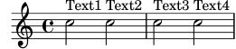
L’ordre per tornar al comportament predeterminat és
\textLengthOff. De forma alternativa es pot usar
\once amb \textLengthOn si l’efecte s’ha de limitar
a un sol moment musical. El comportament d’espaiat corresponent
per a les indicacions d’assaig i les indicacions de tempo es
controla independentment amb les ordres \markLengthOn y
\markLengthOff.
El text de marcatge també evita les notes que es projecten per
sobre del pentagrama. Si això no és el que desitgem, el
desplaçament automàtic cap a dalt es pot desactivar mitjançant
l’establiment de la prioritat a #f. Vet aquí un exemple
que mostra com el text de marcatge interactua amb aquestes notes.
\relative { % Aquest marcatge és suficientment curt per encabir sense col·lisió c''2^"Tex" c'' | R1 | % Això és massa llarg per encabir, per això és mou cap amunt c,,2^"Text" c'' | R1 | % Desactiva l'evitament de col·lisions \once \override TextScript.outside-staff-priority = ##f c,,2^"Long Text " c'' | R1 | % Desactiva l'evitament de col·lisions \once \override TextScript.outside-staff-priority = ##f \textLengthOn % i activa textLengthOn c,,2^"Long Text " % Es respecten els espais al final c''2 | }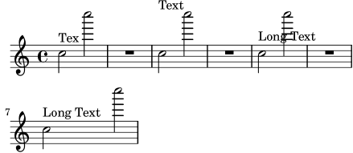
| [ << Ajustament de la sortida ] | [Top][Contents][Index] | [ Plantilles >> ] |
[ < L’ordre \textLengthOn ] | [ Up: Objectes fora del pentagrama ] | [ Escalat d’un «Grob» > ] |
Posicionament dels matisos dinàmics
Les indicacions de matís dinàmic normalment es col·locaran per
sota del pentagrama, però es poden posicionar per sobre amb
l’ordre \dynamicUp. Se situaran verticalment respecte a la
nota a la que van adossades, i flotaran per sota (o per sobre) de
tots els objectes dins-del-pentagrama com ara les lligadures de
fraseig i números de compàs. Això pot oferir resultats força
acceptables, com mostra aquest exemple:
\relative { \clef "bass" \key aes \major \time 9/8 \dynamicUp bes4.~\f\< \( bes4 bes8 des4\ff\> c16 bes\! | ees,2.~\)\mf ees4 r8 | }![[image of music]](fa/lily-23d86eef.png)
Malgrat això, si les notes i les seves indicacions dinàmiques adossades estan massa a prop, la col·locació automàtica evitarà les col·lisions desplaçant les marques dinàmiques posteriors més lluny, tot i que aquest pot no ser el lloc òptim, com mostra el següent exemple més bé artificial:
\dynamicUp \relative { a'4\f b\mf a\mp b\p }![[image of music]](36/lily-c4a69436.png)
Si es presentés una situació semblant en música ‘real’, podria
ser preferible espaiar les notes una mica més entre sí, de forma
que totes les marques dinàmiques poden cabre a la mateixa
distància vertical des del pentagrama. Hem estat capaços de fer
això per al text de marcatge utilitzant l’ordre
\textLengthOn, però no existeix una ordre equivalent per a
les indicacions de matís dinàmic. Per tant, hem d’esbrinar com
fer-ho utilitzant ordres \override.
| [ << Ajustament de la sortida ] | [Top][Contents][Index] | [ Plantilles >> ] |
| [ < Posicionament dels matisos dinàmics ] | [ Up: Objectes fora del pentagrama ] | [ Espaiat vertical > ] |
Escalat d’un «Grob»
En primer lloc hem d’aprendre com s’especifica la mida dels
grobs. Tots els grobs tenen un punt de referència definit dins
d’ells que s’usa per col·locar-los respecte al seu objecte pare.
Aleshores, aquest punt del grob es posiciona a una distància
horitzontal, X-offset, i una distancia vertical,
Y-offset, a partir del seu pare. La dimensió horitzontal
de l’objecte ve donada per una parella de números,
X-extent, que diu on estan els límits esquerre i dret
respecte del punt de referència. L’amplitud vertical es defineix
de forma semblant mitjançant una parella de números,
Y-extent. Aquestes són propietats de tots els grobs que
contemplen grob-interface.
De forma predeterminada, els objectes fora-del-pentagrama reben
una amplitud zero, de manera que poden solapar-se a la direcció
horitzontal. Això es fa mitjançant el truc de fer que la dimensió
més a l’esquerra sigui igual a menys infinit, establint el valor
de extra-spacing-width a '(+inf.0 . -inf.0). Així,
per assegurar que no se superposen en la direcció horitzontal hem
de sobreescriure aquest valor de extra-spacing-width per
donar-los una mica de espai addicional. Les unitats són l’espai
entre dues línies del pentagrama, de forma que hauria de ser
suficient moure el límit esquerre mitja unitat a l’esquerra i el
límit dret mitja unitat a la dreta:
\override DynamicText.extra-spacing-width = #'(-0.5 . 0.5)
Vejam si funciona al nostre exemple anterior:
\dynamicUp % Estén l'amplitud amb 1 espai de pentagrama \override DynamicText.extra-spacing-width = #'(-0.5 . 0.5) \relative { a'4\f b\mf a\mp b\p }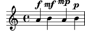
Això té un aspecte millor, però potser hauríem preferit que les
indicacions de dinàmica estiguessin alineades sobre la mateixa
línia de base en lloc d’anar cap amunt i cap avall amb les notes.
La propietat que ho fa és staff-padding (farciment de
pentagrama) que s’estudia a la secció dedicada a les col·lisions
(vegeu Col·lisions d’objectes).
| [ << Ajustament de la sortida ] | [Top][Contents][Index] | [ Plantilles >> ] |
| [ < Escalat d’un «Grob» ] | [ Up: Ajustament de la sortida ] | [ Col·lisions d’objectes > ] |
5.5 Espaiat vertical
En general, l’espaiat vertical dels objectes musicals que fa el LilyPond és força bo. Vejam com es comporta amb una cançó senzilla, amb dues veus i acompanyament de piano:
![[image of music]](1e/lily-62bf5eb1.png)
No hi ha cap problema amb l’espaiat vertical predeterminat. Suposem tanmateix que estem treballant amb un editor que té certs requisits específics per a l’espaiat vertical dels pentagrames i la lletra: voleu que la lletra estigui més separada de les notes, que l’acompanyament de piano estigui més separat de la línia vocal i que els dos pentagrames de piano estiguin més junts entre sí. Començarem amb la lletra.
La lletra es troba a l’interior d’un sistema, i per tant les
ordres per aplicar-li l’espaiat estaran en
Espaiat vertical flexible dins dels sistemes.
Aquí es diu que el text són línies del tipus “no-pauta” i per
tant l’ordre per canviar el seu espaiat farà referència a la propietat
nonstaff. Per separar-les del pentagrama al que pertanyen
(la pauta superior) usarem la propietat relatedstaff. Per
separar-les de la línia inferior usarem la propietat
unrelatedstaff. Les parts vocals pertanyen a un grup
vertical unrelatedstaff. Les parts vocals pertanyen a un
grup vertical VerticalAxisGroup, per la qual cosa hem
d’ajustar les seves propietats. Provem-lo i vejam si funciona.
<< \new ChoirStaff << \new Staff { \new Voice = "music" { b'2 c' c' c' } } \new Lyrics \with { \override VerticalAxisGroup. nonstaff-relatedstaff-spacing.padding = #5 \override VerticalAxisGroup. nonstaff-unrelatedstaff-spacing.padding = #5 } \lyricsto "music" { Here are some lyrics } \new Staff { \clef bass e'2 f e c } >> \new PianoStaff << \new Staff { g''2 c'' c'' a'' } \new Staff { \clef bass e2 f c e } >> >>![[image of music]](b9/lily-2313d3e5.png)
Bé: sí, funciona, però potser massa bé. Quan establim el
padding (farciment) a 5, el LilyPond afegeix 5 espais de
pentagrama a l’espai entre els objectes, cosa que és excessiva per
a nosaltres en aquest cas. Usarem un valor de 2.
A continuació, desplaçarem la música de piano per separar-la de
les parts vocals. La música vocal és una Choirstaff (un
context de sistema coral), i per tant hem d’augmentar l’espaiat
entre aquest grup de pentagrama i el sistema de piano que es troba
a sota. Ho farem canviant labasic-distance (distància
bàsica) del StaffGrouper del staffgroup-staff-spacing.
<< \new ChoirStaff \with { \override StaffGrouper. staffgroup-staff-spacing.basic-distance = #15 } << \new Staff { \new Voice = "music" { b'2 c' c' c' } } \new Lyrics \with { \override VerticalAxisGroup. nonstaff-relatedstaff-spacing.padding = #2 \override VerticalAxisGroup. nonstaff-unrelatedstaff-spacing.padding = #2 } \lyricsto "music" { Here are some lyrics } \new Staff { \clef bass e'2 f e c } >> \new PianoStaff << \new Staff { g''2 c'' c'' a'' } \new Staff { \clef bass e2 f c e } >> >>![[image of music]](3b/lily-eb49652f.png)
Molt bé. Ara sols ens queda l’últim requisit de fer que els
pentagrames de piano estiguin més junts. Per aconseguir-lo, un
altre cop alterem les propietats del StaffGrouper, però
aquest cop reduirem tant la basic-distance (distància
bàsica) com el padding (farciment). Podem fer-lo com es
mostra a continuació.
<< \new ChoirStaff \with { \override StaffGrouper. staffgroup-staff-spacing.basic-distance = #15 } << \new Staff { \new Voice = "music" { b'2 c' c' c' } } \new Lyrics \with { \override VerticalAxisGroup. nonstaff-relatedstaff-spacing.padding = #2 \override VerticalAxisGroup. nonstaff-unrelatedstaff-spacing.padding = #2 } \lyricsto "music" { Here are some lyrics } \new Staff { \clef bass e'2 f e c } >> \new PianoStaff \with { \override StaffGrouper.staff-staff-spacing = #'( (basic-distance . 0) (padding . 0)) } << \new Staff { g''2 c'' c'' a'' } \new Staff { \clef bass e2 f c e } >> >>![[image of music]](39/lily-326726a0.png)
Amb això els hem col·locat molt junts entre sí (però és el que
l’editor volia). Es podrien haver separat més alterant el
farciment, padding, o la distància bàsica,
basic-distance, si volguéssim.
Hi ha moltes formes d’alterar l’espaiat vertical. Un punt clau
que hem de recordar és que l’espaiat entre objectes dins d’un
StaffGroup (com els grups GrandStaff o
PianoStaff) es controla amb les variables d’espaiat del
StaffGrouper. L’espaiat dels pentagrames no agrupats (com
Lyrics i Staff) es controla amb les variables
del VerticalAxisGroup. Per veure més detalls, consulteu
Variables flexibles d’espaiat vertical de paper i
Espaiat vertical flexible dins dels sistemes.
| [ << Ajustament de la sortida ] | [Top][Contents][Index] | [ Plantilles >> ] |
| [ < Espaiat vertical ] | [ Up: Ajustament de la sortida ] | [ Moviment d’objectes > ] |
5.6 Col·lisions d’objectes
| 5.6.1 Moviment d’objectes | ||
| 5.6.2 Ajustament de la notació amb superposicions | ||
| 5.6.3 Exemple real de música |
| [ << Ajustament de la sortida ] | [Top][Contents][Index] | [ Plantilles >> ] |
| [ < Col·lisions d’objectes ] | [ Up: Col·lisions d’objectes ] | [ Ajustament de la notació amb superposicions > ] |
5.6.1 Moviment d’objectes
Tot i que us pugui sorprendre, el LilyPond no és perfecte. Certs elements de notació es poden superposar, cosa que és una llàstima, però en realitat és força poc freqüent. Normalment la necessitat de moure objectes és fa per claredat o per raons estètiques: l’aspecte és millor amb una mica més o una mica menys d’espai de separació.
Hi ha tres enfocaments principals que porten a la resolució de superposicions en la notació. S’han de considerar a l’ordre següent:
- La direcció d’un dels objectes que se superposen es pot canviar usant les ordres predefinides que es relacionen a dalt per als objectes dins-del-pentagrama (vegeu Objectes interiors al pentagrama). Es poden recol·locar fàcilment les pliques, lligadures d’expressió i d’unió, barres de corxera, indicacions dinàmiques, text i grups de valoració especial d’aquesta forma. La limitació és que sols teniu la possibilitat d’escollir entre dues posicions, i podria ser que cap d’elles sigui l’adequada.
- Les propietats de l’objecte, que el LilyPond fa servir
quan està col·locant els objectes de presentació, es poden
modificar usant l’ordre de sobreescriptura
\override. Els avantatges de fer canvis a aquest tipus de propietat són: a) que algun altre objecte es mourà automàticament si és necessari, per deixar-li lloc, i b) una única sobreescriptura es pot aplicar a totes les instàncies del mateix tipus d’objecte. Entre aquestes propietats es troben:-
direction(direcció)Ja s’ha estudiat amb cert detall: vegeu Objectes interiors al pentagrama.
-
padding(farciment),right-padding(farciment per la dreta),staff-padding(farciment de pentagrama)Segons quin objecte s’està col·locant, el valor de la seva propietat de farciment
paddingespecifica l’espai intermedi que s’ha de deixar entre l’objecte i el límit més pròxim de l’objecte contra el qual s’esta col·locant. Observeu que és el valor depaddingde l’objecte que s’està col·locant el que s’ignora. Els espais intermedis especificats mitjançantpaddinges poden aplicar a tots els objectes que contemplen la interfícieside-position-interface.En comptes de fer-lo amb
padding, la col·locació dels grups d’alteracions es controla ambright-padding. Aquest propietat es troba a l’objecteAccidentalPlacementque, observeu, viu dins el context de Staff. Durant el procés tipogràfic, els caps de les notes es componen tipogràficament en primer lloc, i després les alteracions, si hi ha, s’afegeixen a l’esquerre dels caps utilitzant la propietat de farciment per la dretaright-paddingper determinar la separació entre l’alteració i el cap, i de les alteracions entre sí. Així doncs, sols la propietat de farciment per la dretaright-paddingde l’objecteAccidentalPlacementté efecte sobre les col·locacions de les alteracions.La propietat
staff-paddingestà estretament relacionada amb la propietatpadding:paddingcontrola la separació mínima entre qualsevol objecte que contempli la interfícieside-position-interfacei l’objecte més proper (generalment la nota o les línies del pentagrama);staff-paddings’aplica sols als objecte que sempre se situen fora del pentagrama: controla la separació mínima entre aquest objecte i el pentagrama. Observeu questaff-paddingno té cap efecte sobre objectes que se posicionen respecte a la nota en comptes de fer-lo respecte al pentagrama, fins i tot malgrat pot ser sobreescrit sense error per aquests objectes: simplement s’ignora.Per descobrir quina propietat de farciment cal per a l’objecte que es vol recol·locar, heu de tornar al manual de RFI i buscar les propietats de l’objecte. Aneu amb cura perquè les propietats de farciment podrien no estar a l’objecte més obvi, així que busqueu als objectes que puguin tenir alguna relació amb ell.
Tots els valors de farciment es mesuren en espais del pentagrama. Per a la major part dels objectes el valor s’estableix de forma predeterminada en aproximadament 1.0 o menys (varia amb cada objecte). Es pot sobreescriure si cal una separació intermèdia més gran (o més petita).
-
self-alignment-X(Auto-alineament a l’eix X)Aquesta propietat es pot usar per alinear l’objecte a l’esquerra, a l adreta, o centrar-lo amb respecte al punt de referència de l’objecte «pare». Es pot usar amb tot els objectes que respecten la interfície
self-alignment-interface. En general són objectes que contenen text. Els valors sónLEFT,RIGHToCENTER. De forma alternativa es pot especificar un valor numèric entre-1i+1, no-1s’alinea per l’esquerra,+1s’alinea per la dreta, i els números intermedis mouen el text progressivament des d’alineat per l’esquerra fins a alineat per la dreta. Es poden especificar valors numèrics majors de1per moure el text fins i tot més lluny cap a l’esquerra, o menys de-1per allunyar-lo més cap a la dreta. Un canvi a1en el valor correspon a un moviment de la meitat de la longitud total del propi text. -
extra-spacing-width(amplitud de separació addicional)Aquesta propietat està disponible per a tots els objectes que respecten la interfície
item-interface. Agafa dos números, el primer se suma al límit esquerre i el segon se suma al limit dret. Els números negatius desplacen el límit a l’esquerre i els positius a la dreta, per la qual cosa per eixamplar un objecte el primer número ha de ser negatiu i el segon positiu. Observeu que no tots els objectes ostenten els dos números. Per exemple, l’objecteAccidental(alteració) sols té en compte el primer número (la vora esquerra). -
staff-position(posició de pentagrama)staff-positionés una propietat de la interfíciestaff-symbol-referencer-interface, que respecten els objectes que es col·loquen amb relació al pentagrama. Especifica la posició vertical de l’objecte amb relació a la tercera línia del pentagrama en mitjos espais de pentagrama. És útil a la resolució de col·lisions entre objectes de presentació com silencis multi-compàs, lligadures d’unió i notes a veus diferents. -
horizontal-shiftDins d’una veu, totes les notes que es produeixen al mateix moment s’agrupen a una columna de notes, i es crea un objecte
NoteColumnper controlar el posicionament horitzontal d’aquest grup de notes (vegeu “Columnes de nota” a Veus explícites). Si i sols si dos o més columnes de nota dins d’un sol context de pauta, les dues amb pliques en la mateixa direcció, apareixen al mateix moment musical, els valors de les seves propietatshorizontal-shifts’usen per assignar-los una puntuació i les columnes amb puntuacions més altes es desplacen progressivament per evitar les col·lisions entre els caps de les notes. Aquesta propietat s’estableix amb les ordres\voiceXXXi es poden sobreescriure directament amb una ordre\overrideo, de forma més comuna amb les ordres\shiftOn. Observeu que aquesta propietat s’usa per qualificar les columnes de nota o per aplicar desplaçaments: no especifica la magnitud del desplaçament, que es va incrementant progressivament en passos basant-se en l’amplitud dels caps de nota per a cada puntuació. Els passos són normalment de la meitat de l’amplitud d’un cap de nota, però pot ser l’amplitud completa del cap d’una nota quan està implicat un grup de notes molt atapeït. -
force-hshift(forçar desplaçament horitzontal)La propietat
force-hshiftés una propietat d’unaNoteColumn(realment ho és de la interfícienote-column-interface). Modificar-lo permet moure una columna de notes en situacions on les columnes de notes se superposen. Observeu que no té efecte sobre les columnes de nota que no se superposen. S’especifica en unitats adequades a una columna de notes, per exemple l’amplitud del cap de la nota de la primera veu. S’ha d’usar en situacions complexes on les ordres\shiftOnnormals (véase Veus explícites) no resolen el conflicte entre les notes de forma satisfactòria. És preferible a la propietatextra-offsetper a aquest propòsit, perquè no cal esbrinar la distància en espais de pentagrama, i moure les notes dins o fora d’unaNoteColumnafecta a d’altres accions, com ara a la fusió entre caps de nota.
-
- Finalment, quant tota la resta falla, els objectes es poden
tornar a posicionar manualment amb relació a la tercera línia del
pentagrama verticalment, o desplaçant-los una certa distància a
una nova posició. Els desavantatges són que els valors correctes
per al nou posicionament s’han d’esbrinar, sovint per prova i
error, per a cada objecte individual i, atès que el moviment es fa
després que el LilyPond ha col·locat tota la resta d’objectes,
l’usuari és responsable d’evitar cap col·lisió que pogués
produir-se. Però la dificultat principal podria haver de tornar a
calcular la posició si la música es modifica més tard. Les
propietats que es poden suar per a aquest tipus de posicionament
manual són:
extra-offset (desplaçament addicional)-
Aquesta propietat s’aplica a qualsevol objecte de presentació que respecti el
grob-interface. Agafa una parella de números que especifiquen el desplaçament addicional a les direccions horitzontal i vertical. Els nombres negatius mouen l’objecte a l’esquerra o cap avall. Les unitats són espais de pentagrama. El desplaçament addicional es fa després que la composició tipogràfica dels objectes ha acabat, així que un objecte pot ser tornat a posicionar a qualsevol lloc sense afectar cap altra cosa. positions (posicions)-
Aquesta propietat és de la major utilitat per ajustar manualment la inclinació i l’alçada de les barres de corxera, lligadures d’expressió i claus de grups de valoració especial. Agafa una parella de números que donen la posició dels extrems esquerre i dret de la barra, lligadura, etc. amb relació a la tercera línia del pentagrama. Les unitats són espais de pentagrama. Observeu, però, que les lligadures d’expressió i de fraseig no es poden tornar a posicionar en quantitats arbitràriament grans. El LilyPond en primer lloc genera una llista de posicions possibles per a la lligadura i de forma predeterminada troba la lligadura que té “millor aspecte”. Si la propietat
positionss’ha sobreescrit, la lligadura que està més a prop de les posicions que s’han sol·licitat se selecciona de la llista.
Un objecte en particular podria no tenir totes aquestes propietats. Cal anar al manual RFI per buscar quines propietats estan disponibles per a l’objecte en qüestió.
Aquí presentem una llista dels objectes que és més probable que estiguin implicats en col·lisions, amb el nom de l’objecte que s’hauria de buscar al RFI per descobrir quines propietats s’han d’usar per a moure’ls.
| Tipus d’objecte | Nom de l’objecte |
|---|---|
| Articulacions | Script |
| Barres | Beam |
| Dinàmica (verticalment) | DynamicLineSpanner |
| Dinàmica (horitzontalment) | DynamicText |
| Digitacions | Fingering |
| Marques d’assaig i textuals | RehearsalMark |
| Lligadures de expressió | Slur |
Text, per exemple ^"text" | TextScript |
| Lligadures d’unió | Tie |
| Grups de valoració especial | TupletBracket |
| [ << Ajustament de la sortida ] | [Top][Contents][Index] | [ Plantilles >> ] |
| [ < Moviment d’objectes ] | [ Up: Col·lisions d’objectes ] | [ La propietat padding (farciment)) > ] |
5.6.2 Ajustament de la notació amb superposicions
Vejam ara com poden ser d’ajuda les propietats que hem vist a la secció anterior, per resoldre problemes de notació que se superposa.
La propietat padding (farciment))
La propietat padding es pot ajustar per augmentar (o
disminuir) la distància entre símbols impresos a sobre o a sota de
les notes
c'2\fermata \override Script.padding = #3 b2\fermata![[image of music]](5c/lily-307d99a4.png)
% Això no funcionarà, mireu a sota \override MetronomeMark.padding = #3 \tempo 4 = 120 c'1 | % Això funciona \override Score.MetronomeMark.padding = #3 \tempo 4 = 80 d'1 |![[image of music]](3f/lily-e51b7c0e.png)
Observeu al segon exemple la gran importància que té saber quin
context respecta un determinat objecte. Atès que l’objecte
MetronomeMark respecta el context Score, els canvis
de propietats al context Voice passaran inadvertits. Per
veure més detalls consulteu
Modificació de les propietats.
Si la propietat de farciment padding d’un objecte
s’incrementa quan aquest objecte es troba a una pila d’objectes
que s’estan col·locant d’acord a la seva prioritat
outside-staff-priority, llavors aquest objecte es mourà, i
també tots els que estan per fora d’ell.
La propietat right-padding (farciment per la dreta)
La propietat right-padding afecta l’espaiat entre la
alteració i la nota a la qual s’aplica. Normalment no és
necessària, però l’espaiat predeterminat pot estar malament per
certes glifs d’alteracions o combinacions de glifs que s’usen a la
música microtonal. Aquests glifs han d’introduir-se
sobreescrivint el segell de l’alteració amb un element de marcatge
que contingui els símbols desitjats, així:
sesquisharp = \markup { \sesquisharp } \relative { c''4 % Això imprimeix un sesquisostingut però l'espaiat és massa petit \once \override Accidental.stencil = #ly:text-interface::print \once \override Accidental.text = #sesquisharp cis4 c % Això millora l'espaiat \once \override Score.AccidentalPlacement.right-padding = #0.6 \once \override Accidental.stencil = #ly:text-interface::print \once \override Accidental.text = #sesquisharp cis4 | }![[image of music]](bc/lily-85d66af8.png)
Aixo utilitza necessàriament una sobreescriptura per al segell de
l’alteració que s’estudiarà fin més endavant. El tipus de segell
ha de ser un procediment, aquí modificat perquè imprimeixi el
contingut de la propietat text de l’objecte
Accidental, que al seu cop està establert com un signe de
sesquisostingut. Aleshores el signe es pot separar de la cap de
la nota sobreescrivint right-padding.
La propietat staff-padding (farciment de pentagrama)
staff-padding es pot usar per alinear objectes com matisos
dinàmics al llarg d’una línia de base a una distància fixa del
pentagrama, sempre que no existeixi cap altre element de notació
que forci una distància major al pentagrama. No és una propietat
de DynamicText sinó de DynamicLineSpanner.
Això és així perquè la línia de base s’ha d’aplicar per igual a
totes las dinàmiques, entre elles las que s’han creat
com objectes de extensió. Així que aquesta és la forma d’alinear
les indicacions de matís a l’exemple de la secció anterior:
\override DynamicLineSpanner.staff-padding = #3 \relative { a'4\f b\mf a\p b\mp }![[image of music]](a6/lily-dd212933.png)
La propietat self-alignment-X (auto-alineació en X)
L’exemple següent mostra com ajustar la posició d’un objecte de digitació de corda en relació a la plica d’una nota mitjançant l’alineament del límit dret amb el punt de referència de la nota «pare»:
\voiceOne <a''\2> \once \override StringNumber.self-alignment-X = #RIGHT <a''\2>![[image of music]](a0/lily-b702bea9.png)
La propietat staff-position (posició al pentagrama)
Els silencis multi-compàs en una veu poden xocar amb les notes a una altra veu. Atès que aquests silencis es graven centrats entre les barres de compàs, es necessitaria força esforç perquè el LilyPond esbrinés quines altres notes podrien xocar amb ell, ja que actualment tota la gestió de col·lisions entre notes i silencis es fa sols per a notes i silencis que ocorren al mateix temps. Vet aquí un exemple de col·lisió d’aquest tipus:
<< \relative { c'4 c c c } \\ { R1 } >>![[image of music]](41/lily-10dffed3.png)
La millor solució aquí és moure el silenci multi-compàs cap avall,
ja que el silencia està a la veu dos. L’ajust predeterminat per a
\voiceTwo (és a dir, a la segona veu d’una construcció
<<{…} \\ {…}>>) és que
staff-position tingui el valor -4 per MultiMeasureRest,
així que l’hem de baixar, diguem-ne, quatre semiespais de
pentagrama, al valor -8.
<< \relative { c'4 c c c } \\ \override MultiMeasureRest.staff-position = #-8 { R1 } >>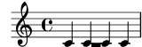
Això és millor que utilitzar, per exemple, extra-offset,
perquè la línia addicional per sobre del silenci s’insereix
automàticament.
La propietat extra-offset (desplaçament addicional)
La propietat extra-offset dóna un complet control sobre el
posicionament d’un objecte tan vertical com horitzontalment.
A l’exemple següent, la segona digitació es desplaça lleugerament a l’esquerra, i 1.8 espais de pentagrama cap avall:
f'4-5 \once \override Fingering.extra-offset = #'(-0.3 . -1.8) f'4-5![[image of music]](45/lily-621381cc.png)
La propietat positions (posicions)
La propietat positions permet controlar manualment la
posició vertical i des d’aquí també la inclinació dels tresets,
lligadures d’expressió i de fraseig, i barres de corxera.
Vet aquí un exemple en el qual les lligadures de fraseig i d’expressió xoquen entre sí:
\relative { a'8 \( ( a'16 ) a \) }![[image of music]](5d/lily-580a2be1.png)
Una possibilitat seria moure els dos extrems de la lligadura de fraseig cap a dalt. Podem intentar establir l’extrem esquerre a 2.5 espais de pentagrama per sobre de la tercera línia i l’extrem dret a 4.5 també cap amunt, i el LilyPond seleccionaria la lligadura de fraseig d’entre les candidates que ha trobat amb els seus extrems més propers a ells:
\once \override PhrasingSlur.positions = #'(2.5 . 4.5) a'8 \( ( a''16 ) a'' \)![[image of music]](43/lily-4e8e7eb5.png)
Això suposa una millora, però, perquè no baixar una mica l’extrem
dret de la lligadura d’expressió? Si ho provem, veurem que no es
pot fer així. Això és a causa que no existeixen lligadures
d’expressió candidates que estiguin més baixes que la que ja s’ha
seleccionat, i en aquest cas la propietat positions no té
cap efecte. Malgrat això, les lligadures d’unió, expressió i
fraseig es poden col·locar i ajustar de manera molt exacta
quan cal. Per aprendre la manera de fer-lo, consulteu
Modificació de lligadures d’unió i d’expressió.
Presentem un altre exemple. Veiem que la barra xoca amb les lligadures:
{ \time 4/2 << \relative { c'1~ 2. e8 f } \\ \relative { e''8 e e e e e e e f2 g } >> << \relative { c'1~ 2. e8 f } \\ \relative { e''8 e e e e e e e f2 g } >> }![[image of music]](89/lily-343d936d.png)
Això es pot resoldre manualment elevant els dos extrems de la barra des de la seva posició a 1.81 espais de pentagrama sota la línia central fins, diguem-ne, 1 espai:
{ \time 4/2 << \relative { c'1~ 2. e8 f } \\ \relative { \override Beam.positions = #'(-1 . -1) e''8 e e e e e e e f2 g } >> << \relative { c'1~ 2. e8 f } \\ \relative { e''8 e e e e e e e f2 g \revert Beam.positions } >> }![[image of music]](c8/lily-64873957.png)
Observeu que la sobreescriptura segueix aplicant-se a la segona veu del segon compàs de corxeres, però no a cap de les barres de la primera veu, ni tan sols a les que estan al segon compàs, que és posterior. Tan aviat com la sobreescriptura no pugui tenir cap efecte, hauria de ser revertida com es mostra.
| [ << Ajustament de la sortida ] | [Top][Contents][Index] | [ Plantilles >> ] |
[ < La propietat positions (posicions) ] | [ Up: Ajustament de la notació amb superposicions ] | [ Exemple real de música > ] |
La propietat force-hshift (forçar desplaçament horitzontal)
Ara podem veure com aplicar les correccions finals a l’exemple de Chopin que vam present al final de Sento veus, que deixem amb aquest aspecte:
\new Staff \relative { \key aes \major << { c''2 aes4. bes8 } \\ { <ees, c>2 des } \\ \\ { aes'2 f4 fes } >> | <c ees aes c>1 | }![[image of music]](47/lily-66aa6df7.png)
És necessari que la nota interior del primer acord (el La bemoll
de la quarta veu) no s’aparti de la columna vertical de la nota
aguda, per la qual cosa usem \shiftOff.
En el segon acord preferim que el Fa estigui alineat amb el La
bemoll i que la nota greu es col·loqui lleugerament a la dreta per
evitar una col·lisió de les pliques. Ho aconseguim ajustant el
valor de force-hshift a la NoteColumn del Re bemoll
greu per moure’l a la dreta mig espai de pentagrama, i fixant
force-hshift per al Fa al valor zero. Observeu que usem
\once per evitar que els ajustament es propaguin més enllà
del moment musical immediat, tot i que a aquest petit exemple es
podria ometre el \once y el segon \override de la
quarta veu. Això no suposaria una bona pràctica.
Presentem a continuació el resultat final:
\new Staff \relative { \key aes \major << { c''2 aes4. bes8 } \\ { <ees, c>2 \once \override NoteColumn.force-hshift = 0.5 des } \\ \\ { \once \shiftOff aes'2 \once \shiftOff f4 fes } >> | <c ees aes c>1 | }![[image of music]](b9/lily-cd77d5f9.png)
| [ << Ajustament de la sortida ] | [Top][Contents][Index] | [ Plantilles >> ] |
[ < La propietat force-hshift (forçar desplaçament horitzontal) ] | [ Up: Col·lisions d’objectes ] | [ Ajustaments addicionals > ] |
5.6.3 Exemple real de música
Finalitzarem aquesta secció sobre els ajustaments mostrant els passos que s’han de prendre per tractar amb un exemple complicat al que li calen diversos ajustaments per produir el resultat desitjat. L’exemple s’ha escollit deliberadament per il·lustrar l’ús de la Referència de la Notació per resoldre problemes de notació poc comuns. No és representatiu del procés de gravat més usual, per la qual cosa, us recomanem que no deixeu que aquestes dificultats us desanimin! Afortunadament, les dificultats com aquestes no són massa comunes!
L’exemple està extret de la Primera Balada de Chopin, Op. 23, compassos 6 al 9, la transició entre el Lent inicial i el Moderato. Presentem en primer lloc l’aspecte que volem que tingui el resultat, però per evitar complicar massa l’exemple hem tret les indicacions dinàmiques, les digitacions i el pedal.
![[image of music]](20/lily-fc7e1439.png)
Observem en primer lloc que la part de la ma dreta del tercer compàs requereix quatre veus. Són les cinc corxeres unides per una barra, la nota Do lligada, el Re blanca que es fusiona amb el Re corxera, i el Fa sostingut negra amb puntet, que també està fusionada amb la corxera de la seva mateixa alçada. Tota la resta està en una sola veu, així que el més fàcil és introduir aquestes tres veus addicionals, en el moment que facin falta i de forma temporal. Si us heu oblidat de com fer-ho, llegiu les seccions Sento veus i Veus explícites. Aquí prenem la decisió d’utilitzar veus instanciades explícitament per al passatge polifònic, atès que el LilyPond és més probable que pugui evitar les col·lisions si totes les veus s’instancien explícitament d’aquesta manera.
Començarem introduint les notes com dues variables i disposant l’estructura de pentagrames a un bloc Score, i veurem què produeix el LilyPond de forma predeterminada:
rhMusic = \relative { \new Voice { r2 c''4. g8 | bes1~ | \time 6/4 bes2. r8 % Inicia la secció polifònica de quatre veus << { c,8 d fis bes a } % continuació de la veu principal \new Voice { \voiceTwo c,8~ 2 } \new Voice { \voiceThree s8 d2 } \new Voice { \voiceFour s4 fis4. } >> | g2. % continuació de la veu principal } } lhMusic = \relative { r2 <c' g ees>2 | <d g, d>1 | r2. d,,4 r4 r | r4 } \score { \new PianoStaff << \new Staff = "RH" << \key g \minor \rhMusic >> \new Staff = "LH" << \key g \minor \clef "bass" \lhMusic >> >> }![[image of music]](1f/lily-8e7f0123.png)
Totes les notes són correctes, però l’aspecte està lluny de ser satisfactori. La lligadura d’unió xoca amb el canvi de compàs, certes notes no es fusionen correctament, i falten alguns elements de notació. En primer lloc tractarem amb el més senzill. Podem afegir fàcilment la lligadura d’expressió de la mà esquerra i la lligadura de fraseig de la ma dreta, atès que tot això es va estudiar al Tutorial. En fer-ho així obtenim:
rhMusic = \relative { \new Voice { r2 c''4.\( g8 | bes1~ | \time 6/4 bes2. r8 % Inicia la secció polifònica de quatre veus << { c,8 d fis bes a } % continuació de la veu principal \new Voice { \voiceTwo c,8~ 2 } \new Voice { \voiceThree s8 d2 } \new Voice { \voiceFour s4 fis4. } >> | g2.\) % continuació de la veu principal } } lhMusic = \relative { r2 <c' g ees>2( | <d g, d>1) | r2. d,,4 r4 r | r4 } \score { \new PianoStaff << \new Staff = "RH" << \key g \minor \rhMusic >> \new Staff = "LH" << \key g \minor \clef "bass" \lhMusic >> >> }![[image of music]](c8/lily-f4be9018.png)
El primer compàs ara és correcte. El segon compàs conté un
arpegi i acaba amb una barra doble. Com es fan, ja que no han
estat mencionats en aquest Manual d’Aprenentatge? Aquí és on hem
de tornar a la Referència de Notació. Buscant la paraula
‘arpegi’ i ‘línia divisòria’ a l’índex ens mostra ràpidament
que un arpegi es fa afegint \arpeggio a un acord, i la
doble barra es produeix per mitjà de la instrucció
\bar "||". Això ho podem fer fàcilment. A continuació hem
de corregir la col·lisió entre la lligadura d’unió i la indicació
de compàs. Això es fa millor movent la lligadura cap amunt. Vam
estudiar com moure objectes anteriorment a Moviment d’objectes,
on diu que els objectes estan situats de forma relativa al
pentagrama es poden moure verticalment sobreescrivint la seva
propietat staff-position, que s’especifica en unitats de
mig espai de pentagrama respecte de la línia central del
pentagrama. Així doncs, la sobreescriptura següent col·locada
just abans de la primera nota lligada pujarà la lligadura 3.5 mig
espais de pentagrama per sobre de la línia central:
\once \override Tie.staff-position = #3.5
Amb això és completa el compàs dos, donant com a resultat:
rhMusic = \relative { \new Voice { r2 c''4.\( g8 | \once \override Tie.staff-position = #3.5 bes1~ | \bar "||" \time 6/4 bes2. r8 % Inicia la secció polifònica amb quatre veus << { c,8 d fis bes a } % continuació de la veu principal \new Voice { \voiceTwo c,8~ 2 } \new Voice { \voiceThree s8 d2 } \new Voice { \voiceFour s4 fis4. } >> | g2.\) % continuació de la veu principal } } lhMusic = \relative { r2 <c' g ees>2( | <d g, d>1)\arpeggio | r2. d,,4 r4 r | r4 } \score { \new PianoStaff << \new Staff = "RH" << \key g \minor \rhMusic >> \new Staff = "LH" << \key g \minor \clef "bass" \lhMusic >> >> }![[image of music]](4a/lily-7b5b070c.png)
Anem ara al tercer compàs i començament de la secció Moderato. El
tutorial ens va ensenyar com escriure una indicació de tempo
mitjançant l’ordre \tempo, por lo qual cosa afegir
“Moderato” és fàcil. Pero ara, com fusionem notes estan a
diferents veus? Aquí és on hem de tornar a buscar ajuda al manual
de Referència de la notació. En cuscar la paraula “merge”
(fusiona) a l’índex de la Referència de la notació arribem
ràpidament a les ordres per barrejar notes amb diferent cap i amb
o sense puntet, a
Resolució de les col·lisions.
Al nostre exemple hem de fusionar ambdós tipus de notes al
transcurs de la secció polifònica del compàs 3; per tant, gràcies
a la informació que apareix a la Referència de la Notació, escrivim
\mergeDifferentlyHeadedOn \mergeDifferentlyDottedOn
al principi de la secció, i
\mergeDifferentlyHeadedOff \mergeDifferentlyDottedOff
al final, obtenint com a resultat:
![[image of music]](f9/lily-c90d7266.png)
Aquestes sobreescriptures han fusionat els dos Fa sostingut, però
no els dos Re. Perquè no? La resposta està a la mateixa secció
de la Referència de la Notació: les notes que es fusionen han de
tenir les pliques en direccions oposades i dues notes no es poden
fusionar bé si hi ha una tercera nota a la mateixa columna. Aquí
els dos Re tenen les pliques cap amunt i hi ha una tercera nota:
el Do. Sabem com canviar la direcció de la plica usant
\stemDown, i la Referència de la notació també explica com
moure el Do: aplicar un desplaçament usant una de les ordres
\shift. Però, quin? El Do està a la veu dos que té
desactivat el desplaçament, i els dos Re estan a les veus u i
tres, que tenen el desplaçament desactivat i activat,
respectivament. Per això hem de desplaçar el Do un nivell més
encara, usant \shiftOnn per evitar que interfereixi amb els
dos Re. En aplicar aquests canvis obtenim:
rhMusic = \relative { \new Voice { r2 c''4.\( g8 | \once \override Tie.staff-position = #3.5 bes1~ | \bar "||" \time 6/4 bes2.\tempo "Moderato" r8 \mergeDifferentlyHeadedOn \mergeDifferentlyDottedOn % Inicia la secció polifònica de quatre veus << { c,8 d fis bes a } % continuació de la veu principal \new Voice { \voiceTwo % Mou el c2 fora de la columna de la nota principal % perquè la fusió funcioni c,8~ \shiftOnn c2 } \new Voice { \voiceThree % La plica al d2 ha de ser cap avall per permetre la fusió s8 \stemDown d2 } \new Voice { \voiceFour s4 fis4. } >> | \mergeDifferentlyHeadedOff \mergeDifferentlyDottedOff g2.\) % continuació de la veu principal } } lhMusic = \relative { r2 <c' g ees>2( | <d g, d>1)\arpeggio | r2. d,,4 r4 r | r4 } \score { \new PianoStaff << \new Staff = "RH" << \key g \minor \rhMusic >> \new Staff = "LH" << \key g \minor \clef "bass" \lhMusic >> >> }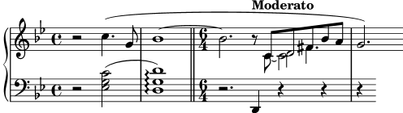
Ja gairebé està. Sols queden dos problemes: la plica cap avall
sobre el Re fusionat no hauria d’estar aquí, i el Do estaria
millor col·locat a la dreta dels Re. Sabem com fer les dues coses
a partir d’ajustaments anteriors: fem la plica transparent, i
movem el Do amb la propietat force-hshift. Aquí tenim el
resultat final:
rhMusic = \relative { \new Voice { r2 c''4.\( g8 | \once \override Tie.staff-position = #3.5 bes1~ | \bar "||" \time 6/4 bes2.\tempo "Moderato" r8 \mergeDifferentlyHeadedOn \mergeDifferentlyDottedOn % Inicia la secció polifònica de quatre veus << { c,8 d fis bes a } % continuació de la veu principal \new Voice { \voiceTwo c,8~ % Torna a posicionar el C2 a la dreta de la nota fucionada \once \override NoteColumn.force-hshift = #1.0 % Mou el c2 for de la columna de la nota principal % perquè funcioni la fusió \shiftOnn c2 } \new Voice { \voiceThree s8 % La plica sobre la d2 ha de ser cap avall per permetre la fusió \stemDown % La plica sobre la d2 ha de ser invisible \tweak Stem.transparent ##t d2 } \new Voice { \voiceFour s4 fis4. } >> | \mergeDifferentlyHeadedOff \mergeDifferentlyDottedOff g2.\) % continuació de la veu principal } } lhMusic = \relative { r2 <c' g ees>2( | <d g, d>1)\arpeggio | r2. d,,4 r4 r | r4 } \score { \new PianoStaff << \new Staff = "RH" << \key g \minor \rhMusic >> \new Staff = "LH" << \key g \minor \clef "bass" \lhMusic >> >> }
| [ << Ajustament de la sortida ] | [Top][Contents][Index] | [ Plantilles >> ] |
| [ < Exemple real de música ] | [ Up: Ajustament de la sortida ] | [ Altres aplicacions dels ajustaments > ] |
5.7 Ajustaments addicionals
| 5.7.1 Altres aplicacions dels ajustaments | ||
| 5.7.2 Ús de variables per als ajustaments de disposició | ||
| 5.7.3 Fulls d’estil | ||
| 5.7.4 Altres fonts d’informació | ||
| 5.7.5 Ajustaments avançats amb l’Scheme |
| [ << Ajustament de la sortida ] | [Top][Contents][Index] | [ Plantilles >> ] |
| [ < Ajustaments addicionals ] | [ Up: Ajustaments addicionals ] | [ Unió de notes entre veus diferents > ] |
5.7.1 Altres aplicacions dels ajustaments
| Unió de notes entre veus diferents | ||
| Simulació de un calderó al MIDI |
| [ << Ajustament de la sortida ] | [Top][Contents][Index] | [ Plantilles >> ] |
| [ < Altres aplicacions dels ajustaments ] | [ Up: Altres aplicacions dels ajustaments ] | [ Simulació de un calderó al MIDI > ] |
Unió de notes entre veus diferents
El següent exemple mostra com connectar notes que estan a diferents veus utilitzant lligadures d’unió. Normalment sols es poden connectar mitjançant lligadures d’unió notes que estiguin a la mateixa veu. Usant dues veus, amb les notes lligades a una d’elles:
![[image of music]](c7/lily-4e887282.png)
i esborrant la primera barra (amb la seva plica) cap amunt a aquesta veu, dóna la impressió que la lligadura es creua entres les veus:
<< { \once \omit Stem \once \omit Flag b'8~ 8\noBeam } \\ { b'8[ g'] } >>![[image of music]](04/lily-88b448e5.png)
Vegeu també
Manual de aprenentatge:
El prefix \once,
La propietat stencil (segell).
Simulació de un calderó al MIDI
Per als objectes fora-del-pentagrama, normalment és millor
sobreescriure la propietat stencil («segell») de l’objecte
que la seva propietat transparent quan vulgueu treure’ls de
la sortida impresa. Mitjançant l’establiment de la propietat
stencil d’un objecte al valor #f podem treure
l’objecte per complet de la sortida impresa. Això significa que
no té efecte sobre la col·locació d’altres objectes que poguessin
col·locar-se en relació a ell.
Per exemple, si volguéssim canviar la indicació metronòmica amb el
propòsit de simular un calderó a la sortida MIDI, segurament no
voldríem que la indicació metronòmica aparegués a la sortida
impresa, i no voldríem influir sobre la separació entre els dos
sistemes ni sobre la col·locació de les anotacions adjacents sobre
el pentagrama. Per tant, establir la seva propietat
stencil al valor #f seria la millor manera. Mostrem
aquí l’efecte dels dos mètodes:
\score { \relative { % Visible tempo marking \tempo 4=120 a'4 a a \once \hide Score.MetronomeMark % Tempo invisible que marca que s'allargui el fermata al MIDI \tempo 4=80 a4\fermata | % Tempo nou per a la propera secció \tempo 4=100 a4 a a a | } \layout { } \midi { } }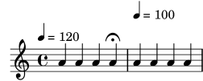
\score { \relative { % Marcatge Visible del tempo \tempo 4=120 a'4 a a \once \omit Score.MetronomeMark % Marcatge invisible del tempo per allargar el fermata al MIDI \tempo 4=80 a4\fermata | % Tempo nou per a la propera secció \tempo 4=100 a4 a a a | } \layout { } \midi { } }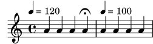
Els dos mètodes treuen de la sortida impresa la indicació metronòmica que allarga el calderó, i els dos afecten al temps del MIDI tal i com volíem, però la indicació metronòmica transparent de la primera línia força una col·locació molt alta de la indicació de tempo que segueix, mentre que la segona (amb el segell suprimit) no ho fa.
Vegeu també
Glossari musical: system.
| [ << Ajustament de la sortida ] | [Top][Contents][Index] | [ Plantilles >> ] |
| [ < Simulació de un calderó al MIDI ] | [ Up: Ajustaments addicionals ] | [ Fulls d’estil > ] |
5.7.2 Ús de variables per als ajustaments de disposició
Les ordres de sobreescriptura són sovint llargues i tedioses d’escriure, i s’han d’escriure de forma absolutament correcta. Si les mateixes sobreescriptures s’han d’utilitzar molts cops, podria valdre la pena definir variables per desar-les.
Suposem que volem realçar certes paraules de la lletra d’una cançó
imprimint-les en cursiva i negreta. Les ordres \italic i
\bold sols funcionen dins de la lletra de la cançó si estan
incloses, junt amb la paraula o paraules que es pretenen
modificar, dins d’un \markup, cosa que les fa tedioses
d’escriure. La necessitat d’incloure les pròpies paraules
impedeix que es puguin usar a variables simples. Podríem, com a
alternativa, utilitzar les ordres \override y
\revert?
\override Lyrics.LyricText.font-shape = #'italic \override Lyrics.LyricText.font-series = #'bold \revert Lyrics.LyricText.font-shape \revert Lyrics.LyricText.font-series
Aquestes ordres també serien extremadament tedioses d’escriure si
hi haguessin moltes paraules que volguéssim subratllar. Peró sí
podem definir-les com dues variables i usar-les per
delimitar les paraules a destacar. Un altre avantatge de la
utilització de variables per a aquestes sobreescriptures és que ja
no són necessaris els espais que rodegen el punt, atès que no
s’interpreten directament al mode \lyricmode. Vet aquí un
exemple d’això, tot i que a la pràctica potser escolliríem uns
noms de variables més curts perquè fossin més ràpids de teclejar:
emphasize = { \override Lyrics.LyricText.font-shape = #'italic \override Lyrics.LyricText.font-series = #'bold } normal = { \revert Lyrics.LyricText.font-shape \revert Lyrics.LyricText.font-series } global = { \key c \major \time 4/4 \partial 4 } SopranoMusic = \relative { c'4 | e4. e8 g4 g | a4 a g } AltoMusic = \relative { c'4 | c4. c8 e4 e | f4 f e } TenorMusic = \relative { e4 | g4. g8 c4. b8 | a8 b c d e4 } BassMusic = \relative { c4 | c4. c8 c4 c | f8 g a b c4 } VerseOne = \lyricmode { E -- | ter -- nal \emphasize Fa -- ther, | \normal strong to save, } VerseTwo = \lyricmode { O | \once \emphasize Christ, whose voice the | wa -- ters heard, } VerseThree = \lyricmode { O | \emphasize Ho -- ly Spi -- rit, | \normal who didst brood } VerseFour = \lyricmode { O | \emphasize Tri -- ni -- ty \normal of | love and pow'r } \score { \new ChoirStaff << \new Staff << \clef "treble" \new Voice = "Soprano" { \voiceOne \global \SopranoMusic } \new Voice = "Alto" { \voiceTwo \AltoMusic } \new Lyrics \lyricsto "Soprano" { \VerseOne } \new Lyrics \lyricsto "Soprano" { \VerseTwo } \new Lyrics \lyricsto "Soprano" { \VerseThree } \new Lyrics \lyricsto "Soprano" { \VerseFour } >> \new Staff << \clef "bass" \new Voice = "Tenor" { \voiceOne \TenorMusic } \new Voice = "Baix" { \voiceTwo \BassMusic } >> >> }![[image of music]](ea/lily-196edcb7.png)
| [ << Ajustament de la sortida ] | [Top][Contents][Index] | [ Plantilles >> ] |
| [ < Ús de variables per als ajustaments de disposició ] | [ Up: Ajustaments addicionals ] | [ Altres fonts d’informació > ] |
5.7.3 Fulls d’estil
La sortida que produeix el LilyPond es pot modificar profundament; consulteu Ajustament de la sortida per llegir detalls sobre aquest tema. Però, que passa si teniu molts fitxers als quals voleu aplicar els vostres propis ajustaments? O què passa si, senzillament, voleu separar els ajustaments de la pròpia música? Tot això és força fàcil d’aconseguir.
Vejam un exemple. No us preocupeu si no enteneu les parts que
tenen tots els #(). Això s’explicarà a
Ajustaments avançats amb l’Scheme.
mpdolce = \tweak self-alignment-X #-0.6 #(make-dynamic-script #{ \markup { \dynamic mp \normal-text \italic \bold dolce } #}) inst = #(define-music-function (string) (string?) #{ <>^\markup \bold \box #string #}) \relative { \tempo 4=50 a'4.\mpdolce d8 cis4--\glissando a | b4 bes a2 | \inst "Clarinet" cis4.\< d8 e4 fis | g8(\! fis)-. e( d)-. cis2 | }![[image of music]](56/lily-7bf26b7c.png)
Fem alguna cosa respecte a les definicions mpdolce i
inst. Aquestes definicions produeixen la sortida que
volem, però potser les voldríem utilitzar a una altra peça.
Podríem simplement copiar-les i enganxar-les al principi de cada
fitxer, però seria força molest. També fa que es quedin les
definicions a la vista dins dels nostres fitxers de música, i jo
personalment trobo tots els #() molt pocs estètics. Els
amagarem dins d’un altre fitxer:
%%% desar això a un fitxer amb el nom «definicions.ily»
mpdolce =
\tweak self-alignment-X #-0.6
#(make-dynamic-script
#{ \markup { \dynamic mp \normal-text \italic \bold dolce } #})
inst =
#(define-music-function
(string)
(string?)
#{ <>^\markup \bold \box #string #})
Farem referència a aquest fitxer utilitzant l’ordre
\include al principi del fitxer de música (l’extensió
.ily s’utilitza per distingir aquest fitxer d’inclusió
–que se suposa que no ha de ser processat de forma independent–
del fitxer principal). Ara modificarem la música (desem aquest
fitxer com musica.ly).
\include "definicions.ily"
\relative {
\tempo 4=50
a'4.\mpdolce d8 cis4--\glissando a |
b4 bes a2 |
\inst "Clarinete"
cis4.\< d8 e4 fis |
g8(\! fis)-. e( d)-. cis2 |
}
Això té millor aspecte, però farem alguns canvis més. El glissando és difícil de veure, així que el farem més gruixut i l’aproparem als caps de les notes. Posarem la indicació metronòmica a sobre de la clau, en lloc d’anar a sobre de la primera nota. I per últim, el meu professor de composició odia les indicacions de compàs ‘C’, així que la convertirem en ‘4/4’.
Malgrat això, no hem de canviar el fitxer musica.ly. Anem a substituir el nostre fitxer definicions.ily amb el següent:
%%% definicions.ily
mpdolce =
\tweak self-alignment-X #-0.6
#(make-dynamic-script
#{ \markup { \dynamic mp \normal-text \italic \bold dolce } #})
inst =
#(define-music-function
(string)
(string?)
#{ <>^\markup \bold \box #string #})
\layout{
\context {
\Score
\override MetronomeMark.extra-offset = #'(-5 . 0)
\override MetronomeMark.padding = #'3
}
\context {
\Staff
\override TimeSignature.style = #'numbered
}
\context {
\Voice
\override Glissando.thickness = #3
\override Glissando.gap = #0.1
}
}
![[image of music]](f6/lily-f7639366.png)
Això té un aspecte molt millor! Ara suposeu que voleu publicar aquesta peça. Al meu professor de composició no li agraden les indicacions de compàs, però jo els tinc un cert apreci. Copiarem el fitxer actual
¡Eso tiene un aspecto mucho mejor! Ahora suponga que quiere publicar esta pieza. A mi profesor de composición no le gustan las indicaciones de compás ‘C’, pero yo les tengo cierto cariño. Copiaremos el archivo actual definicions.ily a publicar-web.ily i modificarem aquest últim fitxer. Com el propòsit d’aquesta música és produir un PDF que es mostrarà a la pantalla, també augmentarem la mida general de la sortida.
%%% publicar-web.ily
mpdolce =
\tweak self-alignment-X #-0.6
#(make-dynamic-script
#{ \markup { \dynamic mp \normal-text \italic \bold dolce } #})
inst =
#(define-music-function
(string)
(string?)
#{ <>^\markup \bold \box #string #})
#(set-global-staff-size 23)
\layout{
\context {
\Score
\override MetronomeMark.extra-offset = #'(-5 . 0)
\override MetronomeMark.padding = #'3
}
\context {
\Staff
}
\context {
\Voice
\override Glissando.thickness = #3
\override Glissando.gap = #0.1
}
}
![[image of music]](38/lily-ee041c78.png)
Ara, a la música, simplement substitueixo
\include "definicions.ily" per \include "publicar-web.ily". Per
suposat, podríem fer això encara més pràctic. Podríem fer un
fitxer definiciones.ily que contingués sols les definicions de
mpdolce i de inst, un fitxer
publicar-web.ily que contingués sols la secció
\layout que es va mostrar a l’exemple, i un fitxer
universitat.ily que contindria sols els ajustament per
introduir la sortida que agrada al meu professor. El començament de
musica.ly tindria ara aquest aspecte:
\include "definiciones.ily" %%% Treure el comentari d'una sola d'aquestes línies! \include "publicar-web.ily" %\include "universitat.ily"
Aquest enfocament pot ser útil fins i tot si aneu a produir sols
un conjunt de particel·les. Jo utilitzo mitja dotzena de fitxers
de ‘fulls d’estil’ per als meus projectes. Començo tots els
fitxers de música amb un \include "../global.ily", que conté
%%% global.ily \version "2.26.0" #(ly:set-option 'point-and-click #f) \include "../iniciar/iniciar-definicions.ily" \include "../iniciar/iniciar-disposicio.ily" \include "../iniciar/iniciar-capçaleres.ily" \include "../iniciar/iniciar-paper.ily"
| [ << Ajustament de la sortida ] | [Top][Contents][Index] | [ Plantilles >> ] |
| [ < Fulls d’estil ] | [ Up: Ajustaments addicionals ] | [ Ajustaments avançats amb l’Scheme > ] |
5.7.4 Altres fonts d’informació
La documentació del manual de Referència de Funcionament Intern conté muntanyes d’informació sobre el LilyPond, però es pot obtenir més informació encara llegint els fitxers interns del LilyPond. Per donar-los una ullada, en primer lloc heu de buscar la carpeta corresponent al seu sistema. La ubicació d’aquesta carpeta depèn (a) de si heu aconseguit el programa LilyPond descarregant un binari precompilat des del lloc web lilypond.org o i l’heu instal·lat mitjançant un gestor de paquets (és a dir, distribuït per GNU/Linux, o instal·lat sota fink o cygwin) o si va ser compilat a partir de la font, i (b) de quin sistema operatiu esteu utilitzant:
Descàrrega des de lilypond.org
- GNU/Linux
Dirigiu-vos a
CARPETA_DE_INSTAL·LACIÓ/lilypond/usr/share/lilypond/current/
- MacOS X
Diríjase a
CARPETA_DE_INSTAL·LACIÓ/LilyPond.app/Contents/Resources/share/lilypond/current/
o bé fent
cdcap a aquest directori des del terminal, o bé mantenint polsada la tecla de Control i fent clic sobre l’aplicació del LilyPond, i escollint aquí ‘Mostrar el contingut del paquet’. - Windows
Mitjançant el Explorador del Windows, dirigiu-vos a
CARPETA_DE_INSTAL·LACIÓ/LilyPond/usr/share/lilypond/current/
Instal·lant mitjançant un gestor de paquets o
compilat a partir de la font
Dirigiu-vos a PREFIX/share/lilypond/X.Y.Z/, on
PREFIX s’ha establert pel vostre administrador de paquets o
guió configure, i X.Y.Z es el número de la versió del
LilyPond.
Dins d’aquesta carpeta, les dues subcarpetes interessats són
- ly/ - conté fitxers en format LilyPond
- scm/ - conté fitxers en format Scheme
Començarem observant alguns fitxers que estan a
ly/. Obriu ly/property-init.ly amb un editor de
textos. El mateix que usaria normalment per al fitxers
.ly servirà perfectament. Aquest fitxer conté les
definicions de totes les instruccions estàndard predefinides del
LilyPond, com per exemple \tieUp i \slurDotted.
Podreu veure que no són res més que definicions de variables que
contenen una o diverses ordres \override. Per exemple,
\tieDotted està definit de tal forma que el valor és:
tieDotted = {
\override Tie.dash-period = #0.75
\override Tie.dash-fraction = #0.1
}
Si no us agraden els valors predeterminats, aquestes ordres predefinides es poden redefinir amb facilitat com qualsevol altra variable, al principi del seu fitxer de codi d’entrada.
Els següents són els fitxers més útils que es troben a ly/:
| Fitxer | Contingut |
|---|---|
| ly/engraver-init.ly | Definicions de Contextos de gravadors |
| ly/paper-defaults-init.ly | especificacions de valors predeterminats relacionats amb el document |
| ly/performer-init.ly | Definicions de Contextos de interpretació |
| ly/property-init.ly | Definicions de totes las instruccions predefinides que són comunes |
| ly/spanner-init.ly | Definicions de les ordres predefinides relacionades amb els objectes d’extensió |
Altres ajustos (com les definicions de les ordres de marcatge) s’emmagatzemen com fitxers .scm (de l’Scheme). El llenguatge de programació Scheme es fa servir per proporcoinar una interfície programable en el funcionament intern del LilyPond. Qualsevol explicació addicional sobre aquests fitxers es troba de moment fora de l’àmbit d’aquest manual, perquè es requereixen coneixements del llenguatge Scheme. S’adverteix als usuaris que cal una important quantitat de coneixements tècnics o de temps per comprendre el llenguatge Scheme i aquests fitxers (vegeu Tutorial de l’Scheme).
Si ja teniu aquests coneixements, els fitxers de l’Scheme que poden interessar-vos són:
| Fitxer | Contingut |
|---|---|
| scm/auto-beam.scm | Valors predeterminats de sub-barrat |
| scm/define-grobs.scm | valors predeterminats de les propietats de grobs |
| scm/define-markup-commands.scm | Especificar totes les ordres de marcatge |
| scm/midi.scm | Ajustaments predeterminats per a la sortida MIDI |
| scm/output-lib.scm | Ajustaments que afecten l’aspecte dels trastos, colors, alteracions, línies divisòries, etc. |
| scm/parser-clef.scm | Definicions de les claus contemplades |
| scm/script.scm | Ajustaments predeterminats per a les articulacions |
| [ << Ajustament de la sortida ] | [Top][Contents][Index] | [ Plantilles >> ] |
| [ < Altres fonts d’informació ] | [ Up: Ajustaments addicionals ] | [ Plantilles > ] |
5.7.5 Ajustaments avançats amb l’Scheme
Tot i que és possible fer moltes coses amb les ordres
\override i \tweak , tenim una forma encara més
poderosa de modificar el funcionament del LilyPond, mitjançant una
interfície programable cap a les operacions internes del
LilyPond. Es pot incorporar codi escrit en el llenguatge de
programació Scheme, directament en el mecanisme de funcionament
del LilyPond. Per descomptat, per fer això calen almenys uns
coneixements bàsics de programació de l’Scheme, i proveïm una
introducció al Tutorial de l’Scheme.
Com exemple que il·lustra una de les moltes possibilitats, en lloc de donar a una propietat un valor constant, es pot establir al resultat d’una procediment de l’Scheme que s’invoca cada cop que el LilyPond accedeix a aquesta propietat. La propietat es pot establir dinàmicament a un valor determinat pel procediment al moment que s’invoca. En aquest exemple donem als caps de les notes un color que depèn de la seva posició dins del pentagrama.
#(define (color-notehead grob) "Pinta el cap de la nota d'acord amb la seva posició a la partitura." (let ((mod-position (modulo (ly:grob-property grob 'staff-position) 7))) (case mod-position ;; Retorna els colors de l'arc de Sant Martí ((1) (x11-color 'red )) ; for C ((2) (x11-color 'orange )) ; for D ((3) (x11-color 'yellow )) ; for E ((4) (x11-color 'green )) ; for F ((5) (x11-color 'blue )) ; for G ((6) (x11-color 'purple )) ; for A ((0) (x11-color 'violet )) ; for B ))) \relative { % Disposa per obtenir el color del procediment color-notehead \override NoteHead.color = #color-notehead a2 b | c2 d | e2 f | g2 a | }![[image of music]](43/lily-f29694ef.png)
Es poden trobar exemples addicionals que mostren la utilització d’aquestes interfícies programables, a Funcions de callback.
| [ << Ajustament de la sortida ] | [Top][Contents][Index] | [ GNU Free Documentation License >> ] |
| [ < Ajustaments avançats amb l’Scheme ] | [ Up: Top ] | [ Plantilles incorporades > ] |
Appendix A Plantilles
Aquesta secció del manual conté plantilles amb la partitura del LilyPond ja preparada. Sols heu d’escriure les notes, llençar el LilyPond i gaudir d’unes belles partitures impreses!
| [ << Plantilles ] | [Top][Contents][Index] | [ GNU Free Documentation License >> ] |
| [ < Plantilles ] | [ Up: Plantilles ] | [ Plantilla coral SATB > ] |
A.1 Plantilles incorporades
Algunes plantilles que són adequades per a un ventall de
possibilitats a la música coral, es troben incorporades dins del
LilyPond. Es poden usar per crear música coral senzilla, amb o
sense acompanyament de piano, en dos, quatre o buit pentagrames.
A diferència d’altres plantilles, aquestes plantilles estan
‘incorporades’, cosa que significa que no s’han de copiar o
editar: en comptes d’això, senzillament s’inclouen amb l’ordre
\include dins del fitxer d’entrada.
Nota: A diferència de la major part dels fitxers d’inclusió, aquestes plantilles incorporades s’han d’incloure al final del fitxer d’entrada.
Les expressions musicals necessàries s’introdueixen definint
valors per a variables específiques. Aquestes definicions han
d’anar abans del fitxer inclòs amb l’ordre \include.
| A.1.1 Plantilla coral SATB | ||
| A.1.2 Plantilla coral SSAATTBB |
| [ << Plantilles ] | [Top][Contents][Index] | [ GNU Free Documentation License >> ] |
| [ < Plantilles incorporades ] | [ Up: Plantilles incorporades ] | [ Plantilla coral SSAATTBB > ] |
A.1.1 Plantilla coral SATB
Es pot disposar la música amb una o dues veus per pentagrama
fixant el valor de TwoVoicesPerStaff a ##f o
##t respectivament.
A continuació apareix el fitxer d’entrada complet que produeix un arranjament a quatre veus SATB amb lletres individuals i acompanyament de piano:
SopranoMusic = \relative { a'4\f a8 a a4 a } SopranoLyrics = \lyricmode { Sop -- ra -- no ly -- rics } AltoMusic = \relative { d'4\f d d d } AltoLyrics = \lyricmode { Al -- to ly -- rics } TenorMusic = \relative { a4\p a a a } TenorLyrics = \lyricmode { Te -- nor ly -- rics } BassMusic = \relative { c2\p c4 c } BassLyrics = \lyricmode { Bass ly -- rics } PianoRHMusic = \relative { c' e g c } PianoDynamics = { s2\mp s4 s4 } PianoLHMusic = \relative { c e g c } \include "satb.ly"![[image of music]](a9/lily-c9d07ed6.png)
Es pot utilitzar la mateixa entrada per produir una partitura amb
dues veus per pentagrama, tan sols ajustant el valor de
TwoVoicesPerStaff a ##t. De nou, cada veu té la
seva lletra individual.
SopranoMusic = \relative { a'4\f a8 a a4 a } SopranoLyrics = \lyricmode { Sop -- ra -- no ly -- rics } AltoMusic = \relative { d'4\f d d d } AltoLyrics = \lyricmode { Al -- to ly -- rics } TenorMusic = \relative { a4\p a a a } TenorLyrics = \lyricmode { Te -- nor ly -- rics } BassMusic = \relative { c2\p c4 c } BassLyrics = \lyricmode { Bass ly -- rics } PianoRHMusic = \relative { c' e g c } PianoDynamics = { s2\mp s4 s4 } PianoLHMusic = \relative { c e g c } TwoVoicesPerStaff = ##t \include "satb.ly"![[image of music]](ed/lily-4b6f782d.png)
Quan s’estableix el valor de TwoVoicesPerStaff a fals es
deixa com a predeterminat, es poden ometre qualssevol de les
variables musicals per produir arranjaments amb menys veus. Aquí,
per exemple, apareix la manera en la qual s’ha d’escriure el
fitxer d’entrada per a un duo de soprano i baix:
SopranoMusic = \relative { c'' c c c } SopranoLyrics = \lyricmode { High voice ly -- rics } BassMusic = \relative { a a a a } BassLyrics = \lyricmode { Low voice ly -- rics } \include "satb.ly"![[image of music]](c0/lily-904b0ba0.png)
Es pot afegir a cada una de les parts una segona estrofa o una lletra alternativa:
SopranoMusic = \relative { a'4 a a a } SopranoLyricsOne = \lyricmode { \set stanza = "1." Words to verse one } SopranoLyricsTwo = \lyricmode { \set stanza = "2." Words to verse two } \include "satb.ly"![[image of music]](ef/lily-bd7bc1d6.png)
Quan la lletra i les duracions són les mateixes per a totes les parts, la música vocal es disposa millor sobre dos pentagrames amb nou estrofes. L’exemple sense acompanyament que apareix a continuació té sols tres estrofes.
SopranoMusic = \relative { a' a a a } AltoMusic = \relative { f' f f f } VerseOne = \lyricmode { \set stanza = "1." Words to verse one } VerseTwo = \lyricmode { \set stanza = "2." Words to verse two } VerseThree = \lyricmode { \set stanza = "3." Words to verse three } TenorMusic = \relative { a a a a } BassMusic = \relative { f f f f } TwoVoicesPerStaff = ##t \include "satb.ly"![[image of music]](d9/lily-26e6b10c.png)
Es poden ajustar el valor d’altres variables. La tonalitat i la indicació de compàs es poden modificar a partir dels ajustos predeterminats:
Key = \key a \major Time = { \time 5/4 \tempo "Allegro" 4 = 144 } SopranoMusic = \relative { gis' gis gis gis gis } AltoMusic = \relative { cis' cis cis cis cis } VerseOne = \lyricmode { Words to this du -- et } TwoVoicesPerStaff = ##t \include "satb.ly"![[image of music]](fd/lily-d78371f0.png)
Els noms d’instrument i/o els noms curts d’instrument també es poden modificar:
SopranoMusic = \relative { c'' c c c } SopranoLyrics = \lyricmode { High voice ly -- rics } SopranoInstrumentName = "Soprano 1" SopranoShortInstrumentName = "S1" AltoMusic = \relative { a' a a a } AltoLyrics = \lyricmode { Low voice ly -- rics } AltoInstrumentName = "Soprano 2" AltoShortInstrumentName = "S2" \include "satb.ly"![[image of music]](b1/lily-631627f4.png)
tot i que en el seu lloc podria resulta més fàcil usar la
plantilla ssaattbb.ly, vegeu Plantilla coral SSAATTBB.
Es pot afegir un discant definint el valor de la variable
DescantMusic i es pot afegir una lletra per al discant
definint valors per a la variable DescantLyrics. De manera
semblant, pot afegir-se una part solista per sobre dels
pentagrames del cor agrupat definint valors per a
SoloMusic i SoloLyrics.
Els blocs \header i \paper es poden afegir de la
forma normal. Es pot posar un bloc \layout de la manera
usual al nivell superior, i el contingut es combina (però no se
sobreescriu) amb els ajustos predeterminats que s’ofereixen a la
plantilla. Com a alternativa, es poden descartar tots els ajustos
predeterminats proveïts per la plantilla definint una variable
Layout que contingui tots els ajustos requerits:
Layout = \layout { ... }
El conjunt complet de variables que poden modificar-se es poden consultar al fitxer ly/satb.ly, vegeu Altres fonts d’informació.
Vegeu també
Manual d’aprenentatge: Organitzar les peces mitjançant variables, Plantilles de conjunts vocals, Extensió de les plantilles, Altres fonts d’informació.
Advertiments i problemes coneguts
L’establiment de la variable TwoVoicesPerStaff té efecte
sobre la duració completa de la partitura: no es poden donar
valors diferents en moments diferents.
Amb aquesta senzilla plantilla incorporada no són possibles arranjaments més complexos de música coral.
| [ << Plantilles ] | [Top][Contents][Index] | [ GNU Free Documentation License >> ] |
| [ < Plantilla coral SATB ] | [ Up: Plantilles incorporades ] | [ Plantilles de pentagrama únic > ] |
A.1.2 Plantilla coral SSAATTBB
Totes les variables definides per a la plantilla SATB, amb
l’excepció de les variables VerseXxx també estan
disponibles per a la plantilla SSAATTBB, vegeu
Plantilla coral SATB. A més a més, la música i la lletra de
les veus primera i segona en les quatre parts o en qualsevol es
pot especificar donant valors a les variables
SopranoOneMusic, SopranoTwoMusic, etc., amb les
lletres a SopranoOneLyrics, SopranoTwoLyrics, etc.
Es pot definir fins a quatre estrofes addicionals per a totes les
parts usant les variables SopranoOneLyricsOne, estant les
altres definides de forma anàloga.
Si s’estableix el valor de TwoVoicesPerStaff a ##t,
totes les partes vocals se situaran a pentagrames únics com
veus en divisi. Si TwoVoicesPerStaff es deixa en el seu
valor predeterminat o s’estableix a ##f, llavors les parts
vocals individuals es poden disposar sobre un o dos pentagrames
d’acord amb el valor
SopranoTwoVoicesPerStaff, MenTwoVoicesPerStaff, etc.
Com a exemple, suposem que tenim una peça per a soprano i contralt que comença amb totes les veus al uníson i continua en una secció amb dues parts vocals, soprano i contralt, i acaba amb una secció de quatre pentagrames. Es codificaria de la forma següent:
Time = { s1 \break s1 \break } WomenMusic = \relative { a'4 a a a } WomenLyrics = \lyricmode { Wo -- men ly -- rics } SopranoMusic = \relative { s1 | c''4 c c c8 c } SopranoLyrics = \lyricmode{ So -- pra -- no ly -- rics } AltoMusic = \relative { s1 | g'4 g g g } AltoLyrics = \lyricmode { Al -- to ly -- rics } SopranoOneMusic = \relative { s1 | s1 |e''4 e e e } SopranoOneLyrics = \lyricmode { Sop One ly -- rics } SopranoTwoMusic = \relative { s1 | s1 | c''4 c c c } SopranoTwoLyrics = \lyricmode { Sop Two ly -- rics } AltoOneMusic = \relative { s1 | s1 | g'4 g g g8 g } AltoOneLyrics = \lyricmode { Al -- to One ly -- rics } AltoTwoMusic = \relative { s1 | s1 | e'4 e e e8 e } AltoTwoLyrics = \lyricmode { Al -- to Two ly -- rics } \layout { ragged-right = ##t } \include "ssaattbb.ly"![[image of music]](7f/lily-2fea443c.png)
Les veus masculines es poden afegir de forma anàloga.
Per canviar la disposició de forma que les veus de soprano en
divisi utilitzin un pentagrama compartit, senzillament fixem el
valor de SopranoTwoVoicesPerStaff a ##t, deixant tota la
resta de valors sense canvis:
SopranoTwoVoicesPerStaff = ##t Time = { s1 \break s1 \break } WomenMusic = \relative { a'4 a a a } WomenLyrics = \lyricmode { Wo -- men ly -- rics } SopranoMusic = \relative { s1 | c''4 c c c8 c } SopranoLyrics = \lyricmode{ So -- pra -- no ly -- rics } AltoMusic = \relative { s1 | g'4 g g g } AltoLyrics = \lyricmode { Al -- to ly -- rics } SopranoOneMusic = \relative { s1 | s1 |e''4 e e e } SopranoOneLyrics = \lyricmode { Sop One ly -- rics } SopranoTwoMusic = \relative { s1 | s1 | c''4 c c c } SopranoTwoLyrics = \lyricmode { Sop Two ly -- rics } AltoOneMusic = \relative { s1 | s1 | g'4 g g g8 g } AltoOneLyrics = \lyricmode { Al -- to One ly -- rics } AltoTwoMusic = \relative { s1 | s1 | e'4 e e e8 e } AltoTwoLyrics = \lyricmode { Al -- to Two ly -- rics } \layout { ragged-right = ##t } \include "ssaattbb.ly"![[image of music]](46/lily-65029cdf.png)
o bé, per fer que totes les veus aparellades comparteixin un sol
pentagrama, establiu TwoVoicesPerStaff al valor ##t:
TwoVoicesPerStaff = ##t Time = { s1 \break s1 \break } WomenMusic = \relative { a'4 a a a } WomenLyrics = \lyricmode { Wo -- men ly -- rics } SopranoMusic = \relative { s1 | c''4 c c c8 c } SopranoLyrics = \lyricmode{ So -- pra -- no ly -- rics } AltoMusic = \relative { s1 | g'4 g g g } AltoLyrics = \lyricmode { Al -- to ly -- rics } SopranoOneMusic = \relative { s1 | s1 |e''4 e e e } SopranoOneLyrics = \lyricmode { Sop One ly -- rics } SopranoTwoMusic = \relative { s1 | s1 | c''4 c c c } SopranoTwoLyrics = \lyricmode { Sop Two ly -- rics } AltoOneMusic = \relative { s1 | s1 | g'4 g g g8 g } AltoOneLyrics = \lyricmode { Al -- to One ly -- rics } AltoTwoMusic = \relative { s1 | s1 | e'4 e e e8 e } AltoTwoLyrics = \lyricmode { Al -- to Two ly -- rics } \layout { ragged-right = ##t } \include "ssaattbb.ly"![[image of music]](c5/lily-5df2559f.png)
És possible veure el conjunt complet de variables que es poden canviar examinant el fitxer ly/ssaattbb.ly, vegeu Altres fonts d’informació.
Vegeu també
Manual de aprenentatge: Organitzar les peces mitjançant variables, Plantilles de conjunts vocals, Extensió de les plantilles, Altres fonts d’informació.
Advertiments i problemes coneguts
El valor de les diferents variables ...TwoVoicesPerStaff
s’aplica a tota la duració de la partitura: no poden rebre valors
diferents en temps diferents.
No són possibles arranjament de musica coral a 8 part més complexos, amb aquesta senzilla plantilla incorporada.
| [ << Plantilles ] | [Top][Contents][Index] | [ GNU Free Documentation License >> ] |
| [ < Plantilla coral SSAATTBB ] | [ Up: Plantilles ] | [ Sols notes > ] |
A.2 Plantilles de pentagrama únic
| A.2.1 Sols notes | ||
| A.2.2 Notes i lletra | ||
| A.2.3 Notes i acords | ||
| A.2.4 Notes, lletra i acords |
| [ << Plantilles ] | [Top][Contents][Index] | [ GNU Free Documentation License >> ] |
| [ < Plantilles de pentagrama únic ] | [ Up: Plantilles de pentagrama únic ] | [ Notes i lletra > ] |
A.2.1 Sols notes
Aquesta plantilla senzilla prepara un pentagrama amb notes, adequat per a un instrument solista o un fragment melòdic. Talleu-lo i pegueu-lo a un fitxer, escriviu les notes, i ja està!
melody = \relative c' { \clef treble \key c \major \time 4/4 a4 b c d } \score { \new Staff \melody \layout { } \midi { } }![[image of music]](93/lily-a35fc37d.png)
| [ << Plantilles ] | [Top][Contents][Index] | [ GNU Free Documentation License >> ] |
| [ < Sols notes ] | [ Up: Plantilles de pentagrama únic ] | [ Notes i acords > ] |
A.2.2 Notes i lletra
Aquesta petita plantilla mostra una melodia senzilla amb lletra. Talleu-la i pegueu-la, escriviu les notes i després la lletra. Aquest exemple desactiva el barrat automàtic, que és el més freqüent a les parts vocals antigues. Per usar el barrat automàtic modifiqueu o marqueu com un comentari la línia corresponent.
melody = \relative c' { \clef treble \key c \major \time 4/4 a4 b c d } text = \lyricmode { Aaa Bee Cee Dee } \score{ << \new Voice = "one" { \autoBeamOff \melody } \new Lyrics \lyricsto "one" \text >> \layout { } \midi { } }![[image of music]](f3/lily-b81eb35c.png)
| [ << Plantilles ] | [Top][Contents][Index] | [ GNU Free Documentation License >> ] |
| [ < Notes i lletra ] | [ Up: Plantilles de pentagrama únic ] | [ Notes, lletra i acords > ] |
A.2.3 Notes i acords
Voleu preparar un full guia d’acords (o «lead sheet») amb melodia i acords? No busqueu més!
melody = \relative c' { \clef treble \key c \major \time 4/4 f4 e8[ c] d4 g | a2 ~ a } harmonies = \chordmode { c4:m f:min7 g:maj c:aug | d2:dim b4:5 e:sus } \score { << \new ChordNames { \set chordChanges = ##t \harmonies } \new Staff \melody >> \layout{ } \midi { } }![[image of music]](7d/lily-e9c3733f.png)
| [ << Plantilles ] | [Top][Contents][Index] | [ GNU Free Documentation License >> ] |
| [ < Notes i acords ] | [ Up: Plantilles de pentagrama únic ] | [ Plantilles de piano > ] |
A.2.4 Notes, lletra i acords
Aquesta plantilla facilita la preparació d’una cançó amb melodia, lletra i acords.
melody = \relative c' { \clef treble \key c \major \time 4/4 a4 b c d } text = \lyricmode { Aaa Bee Cee Dee } harmonies = \chordmode { a2 c } \score { << \new ChordNames { \set chordChanges = ##t \harmonies } \new Voice = "one" { \autoBeamOff \melody } \new Lyrics \lyricsto "one" \text >> \layout { } \midi { } }![[image of music]](95/lily-37fdd76f.png)
| [ << Plantilles ] | [Top][Contents][Index] | [ GNU Free Documentation License >> ] |
| [ < Notes, lletra i acords ] | [ Up: Plantilles ] | [ Piano sol > ] |
A.3 Plantilles de piano
| A.3.1 Piano sol | ||
| A.3.2 Piano i melodia amb lletra | ||
| A.3.3 Piano amb lletra centrada |
| [ << Plantilles ] | [Top][Contents][Index] | [ GNU Free Documentation License >> ] |
| [ < Plantilles de piano ] | [ Up: Plantilles de piano ] | [ Piano i melodia amb lletra > ] |
A.3.1 Piano sol
Presentem a continuació una plantilla de piano senzilla amb algunes notes.
upper = \relative c'' { \clef treble \key c \major \time 4/4 a4 b c d } lower = \relative c { \clef bass \key c \major \time 4/4 a2 c } \score { \new PianoStaff \with { instrumentName = "Piano" } << \new Staff = "upper" \upper \new Staff = "lower" \lower >> \layout { } \midi { } }![[image of music]](91/lily-b84d5c71.png)
| [ << Plantilles ] | [Top][Contents][Index] | [ GNU Free Documentation License >> ] |
| [ < Piano sol ] | [ Up: Plantilles de piano ] | [ Piano amb lletra centrada > ] |
A.3.2 Piano i melodia amb lletra
Vet aquí el típic format d’una cançó: un pentagrama amb la melodia i la lletra, i el acompanyament de piano per sota.
melody = \relative c'' { \clef treble \key c \major \time 4/4 a b c d } text = \lyricmode { Aaa Bee Cee Dee } upper = \relative c'' { \clef treble \key c \major \time 4/4 a4 b c d } lower = \relative c { \clef bass \key c \major \time 4/4 a2 c } \score { << \new Voice = "mel" { \autoBeamOff \melody } \new Lyrics \lyricsto mel \text \new PianoStaff << \new Staff = "upper" \upper \new Staff = "lower" \lower >> >> \layout { \context { \Staff \RemoveEmptyStaves } } \midi { } }![[image of music]](75/lily-6b6ba135.png)
| [ << Plantilles ] | [Top][Contents][Index] | [ GNU Free Documentation License >> ] |
| [ < Piano i melodia amb lletra ] | [ Up: Plantilles de piano ] | [ Plantilles de quartet de corda > ] |
A.3.3 Piano amb lletra centrada
En comptes de tenir un pentagrama dedicat a la melodia i la lletra, la lletra es pot centrar entre els pentagrames d’un sistema de piano.
upper = \relative c'' { \clef treble \key c \major \time 4/4 a4 b c d } lower = \relative c { \clef bass \key c \major \time 4/4 a2 c } text = \lyricmode { Aaa Bee Cee Dee } \score { \new PianoStaff << \new Staff = upper { \new Voice = "singer" \upper } \new Lyrics \lyricsto "singer" \text \new Staff = lower { \lower } >> \layout { } \midi { } }![[image of music]](7e/lily-1147360c.png)
| [ << Plantilles ] | [Top][Contents][Index] | [ GNU Free Documentation License >> ] |
| [ < Piano amb lletra centrada ] | [ Up: Plantilles ] | [ Quartet de corda simple > ] |
A.4 Plantilles de quartet de corda
| A.4.1 Quartet de corda simple | ||
| A.4.2 Particel·les de quartet de corda |
| [ << Plantilles ] | [Top][Contents][Index] | [ GNU Free Documentation License >> ] |
| [ < Plantilles de quartet de corda ] | [ Up: Plantilles de quartet de corda ] | [ Particel·les de quartet de corda > ] |
A.4.1 Quartet de corda simple
Aquesta plantilla mostra un quartet de corda normal. També utilitza
una secció \global per al compàs i l’armadura.
global= { \time 4/4 \key c \major } violinOne = \new Voice \relative c'' { c2 d e1 \bar "|." } violinTwo = \new Voice \relative c'' { g2 f e1 \bar "|." } viola = \new Voice \relative c' { \clef alto e2 d c1 \bar "|." } cello = \new Voice \relative c' { \clef bass c2 b a1 \bar "|." } \score { \new StaffGroup << \new Staff \with { instrumentName = "Violin 1" } << \global \violinOne >> \new Staff \with { instrumentName = "Violin 2" } << \global \violinTwo >> \new Staff \with { instrumentName = "Viola" } << \global \viola >> \new Staff \with { instrumentName = "Cello" } << \global \cello >> >> \layout { } \midi { } }![[image of music]](8a/lily-1abe756c.png)
| [ << Plantilles ] | [Top][Contents][Index] | [ GNU Free Documentation License >> ] |
| [ < Quartet de corda simple ] | [ Up: Plantilles de quartet de corda ] | [ Plantilles de conjunts vocals > ] |
A.4.2 Particel·les de quartet de corda
El fragment de codi “Plantilla de quartet de corda” produeix un
resultat satisfactori per al quartet, però, i si hem d’imprimir
les particel·les? Aquesta nova plantilla mostra com usar la
funcionalitat \tag (etiqueta) per dividir fàcilment una
peça en particel·les individuals.
Hem de dividir aquesta plantilla en fitxers independents; els noms de fitxer estan dins dels comentaris al principi de cada fitxer. piece.ly conté totes les definicions de música. Els altres fitxers (score.ly, vn1.ly, vn2.ly, vla.ly i vlc.ly) produeixen la particel·la corresponent.
No oblideu treure els comentaris que hem especificat quan useu els fitxers independents!
% piece.ly % (This is the global definitions file.) global= { \time 4/4 \key c \major } Violinone = \new Voice \relative c'' { c2 d e1 \bar "|." } Violintwo = \new Voice \relative c'' { g2 g e1 \bar "|." } Viola = \new Voice \relative c' { \clef alto e2 d c1 \bar "|." } Cello = \new Voice \relative c' { \clef bass c2 b a1 \bar "|." } music = << \tag #'score \tag #'vn1 \new Staff \with { instrumentName = "Violin 1" } << \global \Violinone >> \tag #'score \tag #'vn2 \new Staff \with { instrumentName = "Violin 2" } << \global \Violintwo >> \tag #'score \tag #'vla \new Staff \with { instrumentName = "Viola" } << \global \Viola >> \tag #'score \tag #'vlc \new Staff \with { instrumentName = "Cello" } << \global \Cello >> >> % These are the other files you need to save on your computer % score.ly % (This is the main file.) % Uncomment the line below when using a separate file. % \include "piece.ly" #(set-global-staff-size 14) \score { \new StaffGroup \keepWithTag #'score \music \layout { } \midi { } } %{ Uncomment this block when using separate files. % vn1.ly % (This is the Violin 1 part file.) \include "piece.ly" \score { \keepWithTag #'vn1 \music \layout { } } % vn2.ly % (This is the Violin 2 part file.) \include "piece.ly" \score { \keepWithTag #'vn2 \music \layout { } } % vla.ly % (This is the Viola part file.) \include "piece.ly" \score { \keepWithTag #'vla \music \layout { } } % vlc.ly % (This is the Cello part file.) \include "piece.ly" \score { \keepWithTag #'vlc \music \layout { } } %}![[image of music]](76/lily-cab48ca3.png)
| [ << Plantilles ] | [Top][Contents][Index] | [ GNU Free Documentation License >> ] |
| [ < Particel·les de quartet de corda ] | [ Up: Plantilles ] | [ Partitura vocal SATB > ] |
A.5 Plantilles de conjunts vocals
A.5.1 Partitura vocal SATB
Vet aquí una partitura vocal estàndard per a quatre veus SATB. Amb grups més grans, sol ser útil incloure una secció que aparegui a totes les parts. Per exemple, el compàs i l’armadura gairebé sempre son els mateixos per a totes. Com a la plantilla “Himne”, les quatre veus es reagrupen en sols dos pentagrames.
\paper { top-system-spacing.basic-distance = 10 score-system-spacing.basic-distance = 20 system-system-spacing.basic-distance = 20 last-bottom-spacing.basic-distance = 10 } global = { \key c \major \time 4/4 } sopMusic = \relative { c''4 c c8[( b)] c4 } sopWords = \lyricmode { hi hi hi hi } altoMusic = \relative { e'4 f d e } altoWords = \lyricmode { ha ha ha ha } tenorMusic = \relative { g4 a f g } tenorWords = \lyricmode { hu hu hu hu } bassMusic = \relative { c4 c g c } bassWords = \lyricmode { ho ho ho ho } \score { \new ChoirStaff << \new Lyrics = "sopranos" \with { % this is needed for lyrics above a staff \override VerticalAxisGroup.staff-affinity = #DOWN } \new Staff = "women" << \new Voice = "sopranos" { \voiceOne << \global \sopMusic >> } \new Voice = "altos" { \voiceTwo << \global \altoMusic >> } >> \new Lyrics = "altos" \new Lyrics = "tenors" \with { % this is needed for lyrics above a staff \override VerticalAxisGroup.staff-affinity = #DOWN } \new Staff = "men" << \clef bass \new Voice = "tenors" { \voiceOne << \global \tenorMusic >> } \new Voice = "basses" { \voiceTwo << \global \bassMusic >> } >> \new Lyrics = "basses" \context Lyrics = "sopranos" \lyricsto "sopranos" \sopWords \context Lyrics = "altos" \lyricsto "altos" \altoWords \context Lyrics = "tenors" \lyricsto "tenors" \tenorWords \context Lyrics = "basses" \lyricsto "basses" \bassWords >> }![[image of music]](98/lily-74f7e7a6.png)
| [ << Plantilles ] | [Top][Contents][Index] | [ GNU Free Documentation License >> ] |
| [ < Partitura vocal SATB ] | [ Up: Plantilles de conjunts vocals ] | [ SATB amb contextos alineats > ] |
A.5.2 Partitura vocal SATB i reducció per a piano automàtica
Aquesta plantilla afegeix una reducció de piano automàtica a la
partitura vocal SATB estàndard que es va mostrar a la
“Plantilla de conjunt vocal”. Això presenta un dels punts
forts del LilyPond: podem usar una definició de música més d’un
cop. Si es fa qualsevol canvi a les notes de la part vocal
(diguem tenorMusic), aleshores els canvis s’aplicaran també
a la reducció de piano.
\paper { top-system-spacing.basic-distance = 10 score-system-spacing.basic-distance = 20 system-system-spacing.basic-distance = 20 last-bottom-spacing.basic-distance = 10 } global = { \key c \major \time 4/4 } sopMusic = \relative { c''4 c c8[( b)] c4 } sopWords = \lyricmode { hi hi hi hi } altoMusic = \relative { e'4 f d e } altoWords =\lyricmode { ha ha ha ha } tenorMusic = \relative { g4 a f g } tenorWords = \lyricmode { hu hu hu hu } bassMusic = \relative { c4 c g c } bassWords = \lyricmode { ho ho ho ho } \score { << \new ChoirStaff << \new Lyrics = "sopranos" \with { % This is needed for lyrics above a staff \override VerticalAxisGroup.staff-affinity = #DOWN } \new Staff = "women" << \new Voice = "sopranos" { \voiceOne << \global \sopMusic >> } \new Voice = "altos" { \voiceTwo << \global \altoMusic >> } >> \new Lyrics = "altos" \new Lyrics = "tenors" \with { % This is needed for lyrics above a staff \override VerticalAxisGroup.staff-affinity = #DOWN } \new Staff = "men" << \clef bass \new Voice = "tenors" { \voiceOne << \global \tenorMusic >> } \new Voice = "basses" { \voiceTwo << \global \bassMusic >> } >> \new Lyrics = "basses" \context Lyrics = "sopranos" \lyricsto "sopranos" \sopWords \context Lyrics = "altos" \lyricsto "altos" \altoWords \context Lyrics = "tenors" \lyricsto "tenors" \tenorWords \context Lyrics = "basses" \lyricsto "basses" \bassWords >> \new PianoStaff << \new Staff << \set Staff.printPartCombineTexts = ##f \partCombine << \global \sopMusic >> << \global \altoMusic >> >> \new Staff << \clef bass \set Staff.printPartCombineTexts = ##f \partCombine << \global \tenorMusic >> << \global \bassMusic >> >> >> >> }![[image of music]](a2/lily-edb1f109.png)
A.5.3 SATB amb contextos alineats
Aquesta plantilla és, bàsicament, la mateixa que la senzilla plantilla
“Conjunt vocal”, excepte que aquí totes les línies de lletra es
col·loquen utilitzant alignAboveContext i alignBelowContext.
global = { \key c \major \time 4/4 } sopMusic = \relative c'' { c4 c c8[( b)] c4 } sopWords = \lyricmode { hi hi hi hi } altoMusic = \relative c' { e4 f d e } altoWords = \lyricmode { ha ha ha ha } tenorMusic = \relative c' { g4 a f g } tenorWords = \lyricmode { hu hu hu hu } bassMusic = \relative c { c4 c g c } bassWords = \lyricmode { ho ho ho ho } \score { \new ChoirStaff << \new Staff = "women" << \new Voice = "sopranos" { \voiceOne << \global \sopMusic >> } \new Voice = "altos" { \voiceTwo << \global \altoMusic >> } >> \new Lyrics \with { alignAboveContext = "women" } \lyricsto "sopranos" \sopWords \new Lyrics \with { alignBelowContext = "women" } \lyricsto "altos" \altoWords % we could remove the line about this with the line below, since % we want the alto lyrics to be below the alto Voice anyway. % \new Lyrics \lyricsto "altos" \altoWords \new Staff = "men" << \clef bass \new Voice = "tenors" { \voiceOne << \global \tenorMusic >> } \new Voice = "basses" { \voiceTwo << \global \bassMusic >> } >> \new Lyrics \with { alignAboveContext = "men" } \lyricsto "tenors" \tenorWords \new Lyrics \with { alignBelowContext = "men" } \lyricsto "basses" \bassWords % again, we could replace the line above this with the line below. % \new Lyrics \lyricsto "basses" \bassWords >> }![[image of music]](9b/lily-9ea64fc2.png)
| [ << Plantilles ] | [Top][Contents][Index] | [ GNU Free Documentation License >> ] |
| [ < SATB amb contextos alineats ] | [ Up: Plantilles de conjunts vocals ] | [ Estrofes a sol y tornada a dues veus > ] |
A.5.4 SATB sobre quatre pentagrames
Plantilla de cor SATB (en quatre pentagrames)
global = { \key c \major \time 4/4 \dynamicUp } sopranonotes = \relative c'' { c2 \p \< d c d \f } sopranowords = \lyricmode { do do do do } altonotes = \relative c'' { c2\p d c d } altowords = \lyricmode { re re re re } tenornotes = { \clef "G_8" c2\mp d c d } tenorwords = \lyricmode { mi mi mi mi } bassnotes = { \clef bass c2\mf d c d } basswords = \lyricmode { mi mi mi mi } \score { \new ChoirStaff << \new Staff << \new Voice = "soprano" << \global \sopranonotes >> \new Lyrics \lyricsto "soprano" \sopranowords >> \new Staff << \new Voice = "alto" << \global \altonotes >> \new Lyrics \lyricsto "alto" \altowords >> \new Staff << \new Voice = "tenor" << \global \tenornotes >> \new Lyrics \lyricsto "tenor" \tenorwords >> \new Staff << \new Voice = "bass" << \global \bassnotes >> \new Lyrics \lyricsto "bass" \basswords >> >> }![[image of music]](76/lily-2dc0d18a.png)
| [ << Plantilles ] | [Top][Contents][Index] | [ GNU Free Documentation License >> ] |
| [ < SATB sobre quatre pentagrames ] | [ Up: Plantilles de conjunts vocals ] | [ Melodies d’himnes > ] |
A.5.5 Estrofes a sol y tornada a dues veus
Aquesta plantilla crea una partitura que comença amb una estrofa
per a solista i continua amb una tornada a dues veus. També mostra
l’ús de silencis de separació dins de la variable \global
per definit canvis de compàs (i altres exemple que són comuns a
totes les parts) al llarg de tota la partitura.
global = { \key g \major % verse \time 3/4 s2.*2 \break % refrain \time 2/4 s2*2 \bar "|." } SoloNotes = \relative g' { \clef "treble" % verse g4 g g | b4 b b | % refrain R2*2 | } SoloLyrics = \lyricmode { One two three | four five six | } SopranoNotes = \relative c'' { \clef "treble" % verse R2.*2 | % refrain c4 c | g4 g | } SopranoLyrics = \lyricmode { la la | la la | } BassNotes = \relative c { \clef "bass" % verse R2.*2 | % refrain c4 e | d4 d | } BassLyrics = \lyricmode { dum dum | dum dum | } \score { << \new Voice = "SoloVoice" << \global \SoloNotes >> \new Lyrics \lyricsto "SoloVoice" \SoloLyrics \new ChoirStaff << \new Voice = "SopranoVoice" << \global \SopranoNotes >> \new Lyrics \lyricsto "SopranoVoice" \SopranoLyrics \new Voice = "BassVoice" << \global \BassNotes >> \new Lyrics \lyricsto "BassVoice" \BassLyrics >> >> \layout { ragged-right = ##t \context { \Staff % these lines prevent empty staves from being printed \RemoveEmptyStaves \override VerticalAxisGroup.remove-first = ##t } } }![[image of music]](fc/lily-7407fec9.png)
| [ << Plantilles ] | [Top][Contents][Index] | [ GNU Free Documentation License >> ] |
| [ < Estrofes a sol y tornada a dues veus ] | [ Up: Plantilles de conjunts vocals ] | [ Salms > ] |
A.5.6 Melodies d’himnes
Aquest fragment de codi mostra una forma de preparar un himne quan cada línia comença amb un compàs parcial. També mostra com afegir els versos com a text independent a sota de la música.
Timeline = { \time 4/4 \tempo 4=96 \partial 2 s2 | s1 | s2 \breathe s2 | s1 | s2 \caesura \break s2 | s1 | s2 \breathe s2 | s1 | s2 \fine } SopranoMusic = \relative g' { g4 g | g g g g | g g g g | g g g g | g2 g4 g | g g g g | g g g g | g g g g | g2 } AltoMusic = \relative c' { d4 d | d d d d | d d d d | d d d d | d2 d4 d | d d d d | d d d d | d d d d | d2 } TenorMusic = \relative a { b4 b | b b b b | b b b b | b b b b | b2 b4 b | b b b b | b b b b | b b b b | b2 } BassMusic = \relative g { g4 g | g g g g | g g g g | g g g g | g2 g4 g | g g g g | g g g g | g g g g | g2 } global = { \key g \major } \score { % Start score \new PianoStaff << % Start pianostaff \new Staff << % Start Staff = RH \global \clef "treble" \new Voice = "Soprano" << % Start Voice = "Soprano" \Timeline \voiceOne \SopranoMusic >> % End Voice = "Soprano" \new Voice = "Alto" << % Start Voice = "Alto" \Timeline \voiceTwo \AltoMusic >> % End Voice = "Alto" >> % End Staff = RH \new Staff << % Start Staff = LH \global \clef "bass" \new Voice = "Tenor" << % Start Voice = "Tenor" \Timeline \voiceOne \TenorMusic >> % End Voice = "Tenor" \new Voice = "Bass" << % Start Voice = "Bass" \Timeline \voiceTwo \BassMusic >> % End Voice = "Bass" >> % End Staff = LH >> % End pianostaff } % End score \markup \fill-line { \left-column { "This is line one of the first verse" "This is line two of the same" \null "And here's line one of the second verse" "And the next line of the same" } } \layout { \context { \Score caesuraType = #'((bar-line . "||")) fineBarType = "||" } } \paper { % Start paper block indent = 0 % don't indent first system line-width = 130 % shorten line length to suit music tagline = ##f % Don't print tag line, can be removed } % End paper block![[image of music]](9f/lily-5c599424.png)
| [ << Plantilles ] | [Top][Contents][Index] | [ GNU Free Documentation License >> ] |
| [ < Melodies d’himnes ] | [ Up: Plantilles de conjunts vocals ] | [ Plantilles orquestrals > ] |
A.5.7 Salms
Aquesta plantilla mostra una forma de preparar un càntic salmòdic anglicà. També mostra com es poden afegir estrofes addicionals com text independent per sota de la música. Les dues estrofes es codifiquen en estils diferents per il·lustrar més possibilitats.
SopranoMusic = \relative g' { g1 | c2 b | a1 | \bar "||" a1 | d2 c | c b | c1 | \bar "||" } AltoMusic = \relative c' { e1 | g2 g | f1 | f1 | f2 e | d d | e1 | } TenorMusic = \relative a { c1 | c2 c | c1 | d1 | g,2 g | g g | g1 | } BassMusic = \relative c { c1 | e2 e | f1 | d1 | b2 c | g' g | c,1 | } global = { \time 2/2 } dot = \markup { \raise #0.7 \musicglyph "dots.dot" } tick = \markup { \raise #1 \fontsize #-5 \musicglyph "scripts.rvarcomma" } % Use markup to center the chant on the page \markup \fill-line { \score { % centered \new ChoirStaff << \new Staff << \global \clef "treble" \new Voice = "Soprano" << \voiceOne \SopranoMusic >> \new Voice = "Alto" << \voiceTwo \AltoMusic >> >> \new Staff << \clef "bass" \global \new Voice = "Tenor" << \voiceOne \TenorMusic >> \new Voice = "Bass" << \voiceTwo \BassMusic >> >> >> \layout { \context { \Score \override SpacingSpanner.base-shortest-duration = \musicLength 2 } \context { \Staff \remove "Time_signature_engraver" } } } % End score } % End markup \markup \fill-line { \left-column { \null \null \null \line { \fontsize #5 O \fontsize #3 come let us \bold sing | unto \dot the | Lord : let } \line { us heartily \concat { re \bold joice } in the | strength of | our } \line { sal | vation. } \null \line { \hspace #2.5 8. Today if ye will hear his voice * } \line { \concat { \bold hard en } \tick not your \tick hearts : as in the pro- } \line { vocation * and as in the \bold day of tempt- \tick } \line { -ation \tick in the \tick wilderness. } } }![[image of music]](08/lily-d14a0718.png)
| [ << Plantilles ] | [Top][Contents][Index] | [ GNU Free Documentation License >> ] |
| [ < Salms ] | [ Up: Plantilles ] | [ Orquestra, cor i piano > ] |
A.6 Plantilles orquestrals
| A.6.1 Orquestra, cor i piano |
| [ << Plantilles ] | [Top][Contents][Index] | [ GNU Free Documentation License >> ] |
| [ < Plantilles orquestrals ] | [ Up: Plantilles orquestrals ] | [ Plantilles per a notació antiga > ] |
A.6.1 Orquestra, cor i piano
Aquesta plantilla mostra l’ús de contextos StaffGroup i
GrandStaff niuats per sub-agrupar instruments del mateix
tipus, i una forma d’usar \transpose de manera que unes
variables continguin la música per a instruments transpositors en
afinació de concert.
#(set-global-staff-size 17) \paper { indent = 3.0\cm % add space for instrumentName short-indent = 1.5\cm % add less space for shortInstrumentName } fluteMusic = \relative c' { \key g \major g'1 b } % Pitches as written on a manuscript for Clarinet in A % are transposed to concert pitch. clarinetMusic = \transpose c' a \relative c'' { \key bes \major bes1 d } trumpetMusic = \relative c { \key g \major g''1 b } % Key signature is often omitted for horns hornMusic = \transpose c' f \relative c { d'1 fis } percussionMusic = \relative c { \key g \major g1 b } sopranoMusic = \relative c'' { \key g \major g'1 b } sopranoLyrics = \lyricmode { Lyr -- ics } altoIMusic = \relative c' { \key g \major g'1 b } altoILyrics = \sopranoLyrics altoIIMusic = \relative c' { \key g \major g'1 b } altoIILyrics = \lyricmode { Ah -- ah } tenorMusic = \relative c' { \clef "treble_8" \key g \major g1 b } tenorLyrics = \sopranoLyrics pianoRHMusic = \relative c { \key g \major g''1 b } pianoLHMusic = \relative c { \clef bass \key g \major g1 b } violinIMusic = \relative c' { \key g \major g'1 b } violinIIMusic = \relative c' { \key g \major g'1 b } violaMusic = \relative c { \clef alto \key g \major g'1 b } celloMusic = \relative c { \clef bass \key g \major g1 b } bassMusic = \relative c { \clef "bass_8" \key g \major g,1 b } \book { \score { << \new StaffGroup = "StaffGroup_woodwinds" << \new Staff = "Staff_flute" \with { instrumentName = "Flute" } \fluteMusic \new Staff = "Staff_clarinet" \with { instrumentName = \markup { \concat { "Clarinet in B" \flat } } } % Declare that written Middle C in the music % to follow sounds a concert B flat, for % output using sounded pitches such as MIDI. %\transposition bes % Print music for a B-flat clarinet \transpose bes c' \clarinetMusic >> \new StaffGroup = "StaffGroup_brass" << \new Staff = "Staff_hornI" \with { instrumentName = "Horn in F" } % \transposition f \transpose f c' \hornMusic \new Staff = "Staff_trumpet" \with { instrumentName = "Trumpet in C" } \trumpetMusic >> \new RhythmicStaff = "RhythmicStaff_percussion" \with { instrumentName = "Percussion" } \percussionMusic \new PianoStaff \with { instrumentName = "Piano" } << \new Staff { \pianoRHMusic } \new Staff { \pianoLHMusic } >> \new ChoirStaff = "ChoirStaff_choir" << \new Staff = "Staff_soprano" \with { instrumentName = "Soprano" } \new Voice = "soprano" \sopranoMusic \new Lyrics \lyricsto "soprano" { \sopranoLyrics } \new GrandStaff = "GrandStaff_altos" \with { \accepts Lyrics } << \new Staff = "Staff_altoI" \with { instrumentName = "Alto I" } \new Voice = "altoI" \altoIMusic \new Lyrics \lyricsto "altoI" { \altoILyrics } \new Staff = "Staff_altoII" \with { instrumentName = "Alto II" } \new Voice = "altoII" \altoIIMusic \new Lyrics \lyricsto "altoII" { \altoIILyrics } >> \new Staff = "Staff_tenor" \with { instrumentName = "Tenor" } \new Voice = "tenor" \tenorMusic \new Lyrics \lyricsto "tenor" { \tenorLyrics } >> \new StaffGroup = "StaffGroup_strings" << \new GrandStaff = "GrandStaff_violins" << \new Staff = "Staff_violinI" \with { instrumentName = "Violin I" } \violinIMusic \new Staff = "Staff_violinII" \with { instrumentName = "Violin II" } \violinIIMusic >> \new Staff = "Staff_viola" \with { instrumentName = "Viola" } \violaMusic \new Staff = "Staff_cello" \with { instrumentName = "Cello" } \celloMusic \new Staff = "Staff_bass" \with { instrumentName = "Double Bass" } \bassMusic >> >> } }![[image of music]](ca/lily-851735a2.png)
| [ << Plantilles ] | [Top][Contents][Index] | [ GNU Free Documentation License >> ] |
| [ < Orquestra, cor i piano ] | [ Up: Plantilles ] | [ Transcripció dfe música mensural > ] |
A.7 Plantilles per a notació antiga
| A.7.1 Transcripció dfe música mensural | ||
| A.7.2 Plantilla per a transcripció de cant gregorià |
A.7.1 Transcripció dfe música mensural
En transcriure música mensural, és útil posar un incipit al començament de la peça per indicar la tonalitat i el compàs originals. Actualment els músics estan acostumats a les línies del pentagrama, però en el període de la música mensural encara no s’utilitzaven. Com a compromís, amb freqüència s’imprimeixen línies divisòries entre els pentagrames, un estil de disseny conegut com mensurstriche.
% A short excerpt from the Jubilate Deo by Orlande de Lassus global = { \set Score.skipBars = ##t \key g \major \time 4/4 % the actual music \skip 1*8 % let finis bar go through all staves \override Staff.BarLine.transparent = ##f % finis bar \bar "|." } discantusIncipit = \new PetrucciStaff { \clef "petrucci-c1" \key f \major \time 2/2 c''1. } discantusNotes = { \transpose c' c'' { \clef "treble" d'2. d'4 | b e' d'2 | c'4 e'4.( d'8 c' b | a4) b a2 | b4.( c'8 d'4) c'4 | \once \hide NoteHead c'1 | b\breve | } } discantusLyrics = \lyricmode { Ju -- bi -- la -- te De -- o, om -- nis ter -- ra, __ om- "..." -us. } altusIncipit = \new PetrucciStaff { \clef "petrucci-c3" \key f \major \time 2/2 e'1\rest f'1. } altusNotes = { \transpose c' c'' { \clef "treble" r2 g2. e4 fis g | a2 g4 e | fis g4.( fis16 e fis4) | g1 | \once \hide NoteHead g1 | g\breve | } } altusLyrics = \lyricmode { Ju -- bi -- la -- te De -- o, om -- nis ter -- ra, "..." -us. } tenorIncipit = \new PetrucciStaff { \clef "petrucci-c4" \key f \major \time 2/2 r\longa r\breve r1 c'1. } tenorNotes = { \transpose c' c' { \clef "treble_8" R1 | R1 | R1 | % two measures r2 d'2. d'4 b e' | \once \hide NoteHead e'1 | d'\breve | } } tenorLyrics = \lyricmode { Ju -- bi -- la -- te "..." -us. } bassusIncipit = \new PetrucciStaff { % The original print shows the b flat % for the f major key signature twice. \override Staff.KeySignature.flat-positions = #'((-7 . 6)) \clef "mensural-f" \key f\major \time 2/2 \tweak Y-offset #1 r\longa \tweak Y-offset #1 r\longa f1. } bassusNotes = { \transpose c' c' { \clef "bass" R1 | R1 | R1 | R1 | g2. e4 | \once \hide NoteHead e1 | g\breve | } } bassusLyrics = \lyricmode { Ju -- bi- "..." -us. } \score { << \new StaffGroup = choirStaff << \new Voice = "discantusNotes" << \set Staff.instrumentName = "Discantus" \incipit #1 \discantusIncipit \global \discantusNotes >> \new Lyrics \lyricsto discantusNotes { \discantusLyrics } \new Voice = "altusNotes" << \set Staff.instrumentName = "Altus" \global \incipit #1 \altusIncipit \altusNotes >> \new Lyrics \lyricsto altusNotes { \altusLyrics } \new Voice = "tenorNotes" << \set Staff.instrumentName = "Tenor" \global \incipit #1 \tenorIncipit \tenorNotes >> \new Lyrics \lyricsto tenorNotes { \tenorLyrics } \new Voice = "bassusNotes" << \set Staff.instrumentName = "Bassus" \global \incipit #1 \bassusIncipit \bassusNotes >> \new Lyrics \lyricsto bassusNotes { \bassusLyrics } >> >> \layout { \context { \Score %% no bar lines in staves or lyrics \hide BarLine } %% the next two instructions keep the lyrics between the bar lines \context { \Lyrics \consists "Bar_engraver" \consists "Separating_line_group_engraver" } \context { \Voice %% no slurs \hide Slur %% Comment in the below "\remove" command to allow line %% breaking also at those bar lines where a note overlaps %% into the next measure. The command is commented out in this %% short example score, but especially for large scores, you %% will typically yield better line breaking and thus improve %% overall spacing if you comment in the following command. %%\remove "Forbid_line_break_engraver" } indent = 5\cm incipit-width = 2.5\cm } }![[image of music]](b9/lily-5cfe28ed.png)
| [ << Plantilles ] | [Top][Contents][Index] | [ GNU Free Documentation License >> ] |
| [ < Transcripció dfe música mensural ] | [ Up: Plantilles per a notació antiga ] | [ Altres plantilles > ] |
A.7.2 Plantilla per a transcripció de cant gregorià
This example demonstrates how to do modern transcription of Gregorian music. Gregorian music has no measure, no stems; it uses only half and quarter note heads, and special marks, indicating rests of different length.
chant = \relative c' { \set Score.timing = ##f f4 a2 \divisioMinima g4 b a2 f2 \divisioMaior g4( f) f( g f) a2 \finalis \break f4 a2 \divisioMinima g4 b a2 f2 \divisioMaior g4( f) f( g a) g2( f) \finalis } verba = \lyricmode { Lo -- rem ip -- sum do -- lor sit a -- met, lo -- rem ip -- sum do -- lor sit a -- met. } \score { \new GregorianTranscriptionStaff << \new GregorianTranscriptionVoice = "melody" \chant \new GregorianTranscriptionLyrics = "one" \lyricsto melody \verba >> }![[image of music]](6d/lily-7e7dc132.png)
| [ << Plantilles ] | [Top][Contents][Index] | [ GNU Free Documentation License >> ] |
| [ < Plantilla per a transcripció de cant gregorià ] | [ Up: Plantilles ] | [ Combo de jazz > ] |
A.8 Altres plantilles
| A.8.1 Combo de jazz |
| [ << Plantilles ] | [Top][Contents][Index] | [ GNU Free Documentation License >> ] |
| [ < Altres plantilles ] | [ Up: Altres plantilles ] | [ GNU Free Documentation License > ] |
A.8.1 Combo de jazz
Això és una plantilla força avançada, per a un conjunt de jazz.
Observeu que la notació de tots els instruments està a
\key c \major (Do major). Això es refereix al to de
concert; l’armadura es transporta automàticament si la música està
dins d’una secció \transpose.
\header { title = "Song" subtitle = "(tune)" composer = "Me" meter = "moderato" piece = "Swing" tagline = \markup \column { "LilyPond example file by Amelie Zapf," "Berlin 07/07/2003" } } % To make the example display properly in the documentation. \paper { paper-width = 130\mm paper-height = 205\mm } % #(set-global-staff-size 16) \include "english.ly" %%%%%%%%%%%% Some macros %%%%%%%%%%%%%%%%%%% sl = { \override NoteHead.style = #'slash \hide Stem } nsl = { \revert NoteHead.style \undo \hide Stem } crOn = \override NoteHead.style = #'cross crOff = \revert NoteHead.style % Insert chord name style stuff here. jazzChords = { } %%%%%%%%%%%% Keys'n'thangs %%%%%%%%%%%%%%%%% global = { \time 4/4 } Key = { \key c \major } % ############ Horns ############ % ------ Trumpet ------ trpt = \transpose c d \relative c'' { \Key c1 | c | c | } trpHarmony = \transpose c' d { \jazzChords } trumpet = { \global \clef treble \trpt } % ------ Alto Saxophone ------ alto = \transpose c a \relative c' { \Key c1 | c | c | } altoHarmony = \transpose c' a { \jazzChords } altoSax = { \global \clef treble \alto } % ------ Baritone Saxophone ------ bari = \transpose c a' \relative c { \Key c1 | c1 | \sl d4^"Solo" d d d \nsl | } bariHarmony = \transpose c' a \chordmode { \jazzChords s1 | s | d2:maj e:m7 | } bariSax = { \global \clef treble \bari } % ------ Trombone ------ tbone = \relative c { \Key c1 | c | c | } tboneHarmony = \chordmode { \jazzChords } trombone = { \global \clef bass \tbone } % ############ Rhythm Section ############# % ------ Guitar ------ gtr = \relative c'' { \Key c1 | \sl b4 b b b \nsl | c1 | } gtrHarmony = \chordmode { \jazzChords s1 | c2:min7+ d2:maj9 | s1 | } guitar = { \global \clef treble \gtr } %% ------ Piano ------ rhUpper = \relative c'' { \voiceOne \Key c1 | c | c | } rhLower = \relative c' { \voiceTwo \Key e1 | e | e | } lhUpper = \relative c' { \voiceOne \Key g1 | g | g | } lhLower = \relative c { \voiceTwo \Key c1 | c | c | } PianoRH = { \clef treble \global << \new Voice = "one" \rhUpper \new Voice = "two" \rhLower >> } PianoLH = { \clef bass \global << \new Voice = "one" \lhUpper \new Voice = "two" \lhLower >> } piano = << \new Staff = "upper" \PianoRH \new Staff = "lower" \PianoLH >> % ------ Bass Guitar ------ Bass = \relative c { \Key c1 | c | c | } bass = { \global \clef bass \Bass } % ------ Drums ------ up = \drummode { \voiceOne hh4 <hh sn> hh <hh sn> | hh4 <hh sn> hh <hh sn> | hh4 <hh sn> hh <hh sn> | } down = \drummode { \voiceTwo bd4 s bd s | bd4 s bd s | bd4 s bd s | } drumContents = { \global << \new DrumVoice \up \new DrumVoice \down >> } %%%%%%%%% It All Goes Together Here %%%%%%%%%%%%%%%%%%%%%% \book { % For the LilyPond documentation. \score { << \new StaffGroup = "horns" << \new Staff = "trumpet" \with { instrumentName = "Trumpet" } \trumpet \new Staff = "altosax" \with { instrumentName = "Alto Sax" } \altoSax \new ChordNames = "barichords" \with { instrumentName = "Bari Sax" } \bariHarmony \new Staff = "barisax" \with { instrumentName = "Bari Sax" } \bariSax \new Staff = "trombone" \with { instrumentName = "Trombone" } \trombone >> \new StaffGroup = "rhythm" << \new ChordNames = "chords" \with { instrumentName = "Guitar" } \gtrHarmony \new Staff = "guitar" \with { instrumentName = "Guitar" } \guitar \new PianoStaff = "piano" \with { instrumentName = "Piano" midiInstrument = "acoustic grand" } \piano \new Staff = "bass" \with { instrumentName = "Bass" } \bass \new DrumStaff \with { instrumentName = "Drums" } \drumContents >> >> \layout { \context { \Staff \RemoveEmptyStaves } \context { \Score \override BarNumber.padding = 3 \override RehearsalMark.padding = 2 skipBars = ##t } } \midi { } } }![[image of music]](97/lily-32d6787f.png)
| [ << Plantilles ] | [Top][Contents][Index] | [ Índex >> ] |
| [ < Combo de jazz ] | [ Up: Top ] | [ Índex > ] |
Appendix B GNU Free Documentation License
Copyright © 2000, 2001, 2002, 2007, 2008 Free Software Foundation, Inc. https://fsf.org/ Everyone is permitted to copy and distribute verbatim copies of this license document, but changing it is not allowed.
- PREAMBLE
The purpose of this License is to make a manual, textbook, or other functional and useful document free in the sense of freedom: to assure everyone the effective freedom to copy and redistribute it, with or without modifying it, either commercially or noncommercially. Secondarily, this License preserves for the author and publisher a way to get credit for their work, while not being considered responsible for modifications made by others.
This License is a kind of “copyleft”, which means that derivative works of the document must themselves be free in the same sense. It complements the GNU General Public License, which is a copyleft license designed for free software.
We have designed this License in order to use it for manuals for free software, because free software needs free documentation: a free program should come with manuals providing the same freedoms that the software does. But this License is not limited to software manuals; it can be used for any textual work, regardless of subject matter or whether it is published as a printed book. We recommend this License principally for works whose purpose is instruction or reference.
- APPLICABILITY AND DEFINITIONS
This License applies to any manual or other work, in any medium, that contains a notice placed by the copyright holder saying it can be distributed under the terms of this License. Such a notice grants a world-wide, royalty-free license, unlimited in duration, to use that work under the conditions stated herein. The “Document”, below, refers to any such manual or work. Any member of the public is a licensee, and is addressed as “you”. You accept the license if you copy, modify or distribute the work in a way requiring permission under copyright law.
A “Modified Version” of the Document means any work containing the Document or a portion of it, either copied verbatim, or with modifications and/or translated into another language.
A “Secondary Section” is a named appendix or a front-matter section of the Document that deals exclusively with the relationship of the publishers or authors of the Document to the Document’s overall subject (or to related matters) and contains nothing that could fall directly within that overall subject. (Thus, if the Document is in part a textbook of mathematics, a Secondary Section may not explain any mathematics.) The relationship could be a matter of historical connection with the subject or with related matters, or of legal, commercial, philosophical, ethical or political position regarding them.
The “Invariant Sections” are certain Secondary Sections whose titles are designated, as being those of Invariant Sections, in the notice that says that the Document is released under this License. If a section does not fit the above definition of Secondary then it is not allowed to be designated as Invariant. The Document may contain zero Invariant Sections. If the Document does not identify any Invariant Sections then there are none.
The “Cover Texts” are certain short passages of text that are listed, as Front-Cover Texts or Back-Cover Texts, in the notice that says that the Document is released under this License. A Front-Cover Text may be at most 5 words, and a Back-Cover Text may be at most 25 words.
A “Transparent” copy of the Document means a machine-readable copy, represented in a format whose specification is available to the general public, that is suitable for revising the document straightforwardly with generic text editors or (for images composed of pixels) generic paint programs or (for drawings) some widely available drawing editor, and that is suitable for input to text formatters or for automatic translation to a variety of formats suitable for input to text formatters. A copy made in an otherwise Transparent file format whose markup, or absence of markup, has been arranged to thwart or discourage subsequent modification by readers is not Transparent. An image format is not Transparent if used for any substantial amount of text. A copy that is not “Transparent” is called “Opaque”.
Examples of suitable formats for Transparent copies include plain ASCII without markup, Texinfo input format, LaTeX input format, SGML or XML using a publicly available DTD, and standard-conforming simple HTML, PostScript or PDF designed for human modification. Examples of transparent image formats include PNG, XCF and JPG. Opaque formats include proprietary formats that can be read and edited only by proprietary word processors, SGML or XML for which the DTD and/or processing tools are not generally available, and the machine-generated HTML, PostScript or PDF produced by some word processors for output purposes only.
The “Title Page” means, for a printed book, the title page itself, plus such following pages as are needed to hold, legibly, the material this License requires to appear in the title page. For works in formats which do not have any title page as such, “Title Page” means the text near the most prominent appearance of the work’s title, preceding the beginning of the body of the text.
The “publisher” means any person or entity that distributes copies of the Document to the public.
A section “Entitled XYZ” means a named subunit of the Document whose title either is precisely XYZ or contains XYZ in parentheses following text that translates XYZ in another language. (Here XYZ stands for a specific section name mentioned below, such as “Acknowledgements”, “Dedications”, “Endorsements”, or “History”.) To “Preserve the Title” of such a section when you modify the Document means that it remains a section “Entitled XYZ” according to this definition.
The Document may include Warranty Disclaimers next to the notice which states that this License applies to the Document. These Warranty Disclaimers are considered to be included by reference in this License, but only as regards disclaiming warranties: any other implication that these Warranty Disclaimers may have is void and has no effect on the meaning of this License.
- VERBATIM COPYING
You may copy and distribute the Document in any medium, either commercially or noncommercially, provided that this License, the copyright notices, and the license notice saying this License applies to the Document are reproduced in all copies, and that you add no other conditions whatsoever to those of this License. You may not use technical measures to obstruct or control the reading or further copying of the copies you make or distribute. However, you may accept compensation in exchange for copies. If you distribute a large enough number of copies you must also follow the conditions in section 3.
You may also lend copies, under the same conditions stated above, and you may publicly display copies.
- COPYING IN QUANTITY
If you publish printed copies (or copies in media that commonly have printed covers) of the Document, numbering more than 100, and the Document’s license notice requires Cover Texts, you must enclose the copies in covers that carry, clearly and legibly, all these Cover Texts: Front-Cover Texts on the front cover, and Back-Cover Texts on the back cover. Both covers must also clearly and legibly identify you as the publisher of these copies. The front cover must present the full title with all words of the title equally prominent and visible. You may add other material on the covers in addition. Copying with changes limited to the covers, as long as they preserve the title of the Document and satisfy these conditions, can be treated as verbatim copying in other respects.
If the required texts for either cover are too voluminous to fit legibly, you should put the first ones listed (as many as fit reasonably) on the actual cover, and continue the rest onto adjacent pages.
If you publish or distribute Opaque copies of the Document numbering more than 100, you must either include a machine-readable Transparent copy along with each Opaque copy, or state in or with each Opaque copy a computer-network location from which the general network-using public has access to download using public-standard network protocols a complete Transparent copy of the Document, free of added material. If you use the latter option, you must take reasonably prudent steps, when you begin distribution of Opaque copies in quantity, to ensure that this Transparent copy will remain thus accessible at the stated location until at least one year after the last time you distribute an Opaque copy (directly or through your agents or retailers) of that edition to the public.
It is requested, but not required, that you contact the authors of the Document well before redistributing any large number of copies, to give them a chance to provide you with an updated version of the Document.
- MODIFICATIONS
You may copy and distribute a Modified Version of the Document under the conditions of sections 2 and 3 above, provided that you release the Modified Version under precisely this License, with the Modified Version filling the role of the Document, thus licensing distribution and modification of the Modified Version to whoever possesses a copy of it. In addition, you must do these things in the Modified Version:
- Use in the Title Page (and on the covers, if any) a title distinct from that of the Document, and from those of previous versions (which should, if there were any, be listed in the History section of the Document). You may use the same title as a previous version if the original publisher of that version gives permission.
- List on the Title Page, as authors, one or more persons or entities responsible for authorship of the modifications in the Modified Version, together with at least five of the principal authors of the Document (all of its principal authors, if it has fewer than five), unless they release you from this requirement.
- State on the Title page the name of the publisher of the Modified Version, as the publisher.
- Preserve all the copyright notices of the Document.
- Add an appropriate copyright notice for your modifications adjacent to the other copyright notices.
- Include, immediately after the copyright notices, a license notice giving the public permission to use the Modified Version under the terms of this License, in the form shown in the Addendum below.
- Preserve in that license notice the full lists of Invariant Sections and required Cover Texts given in the Document’s license notice.
- Include an unaltered copy of this License.
- Preserve the section Entitled “History”, Preserve its Title, and add to it an item stating at least the title, year, new authors, and publisher of the Modified Version as given on the Title Page. If there is no section Entitled “History” in the Document, create one stating the title, year, authors, and publisher of the Document as given on its Title Page, then add an item describing the Modified Version as stated in the previous sentence.
- Preserve the network location, if any, given in the Document for public access to a Transparent copy of the Document, and likewise the network locations given in the Document for previous versions it was based on. These may be placed in the “History” section. You may omit a network location for a work that was published at least four years before the Document itself, or if the original publisher of the version it refers to gives permission.
- For any section Entitled “Acknowledgements” or “Dedications”, Preserve the Title of the section, and preserve in the section all the substance and tone of each of the contributor acknowledgements and/or dedications given therein.
- Preserve all the Invariant Sections of the Document, unaltered in their text and in their titles. Section numbers or the equivalent are not considered part of the section titles.
- Delete any section Entitled “Endorsements”. Such a section may not be included in the Modified Version.
- Do not retitle any existing section to be Entitled “Endorsements” or to conflict in title with any Invariant Section.
- Preserve any Warranty Disclaimers.
If the Modified Version includes new front-matter sections or appendices that qualify as Secondary Sections and contain no material copied from the Document, you may at your option designate some or all of these sections as invariant. To do this, add their titles to the list of Invariant Sections in the Modified Version’s license notice. These titles must be distinct from any other section titles.
You may add a section Entitled “Endorsements”, provided it contains nothing but endorsements of your Modified Version by various parties—for example, statements of peer review or that the text has been approved by an organization as the authoritative definition of a standard.
You may add a passage of up to five words as a Front-Cover Text, and a passage of up to 25 words as a Back-Cover Text, to the end of the list of Cover Texts in the Modified Version. Only one passage of Front-Cover Text and one of Back-Cover Text may be added by (or through arrangements made by) any one entity. If the Document already includes a cover text for the same cover, previously added by you or by arrangement made by the same entity you are acting on behalf of, you may not add another; but you may replace the old one, on explicit permission from the previous publisher that added the old one.
The author(s) and publisher(s) of the Document do not by this License give permission to use their names for publicity for or to assert or imply endorsement of any Modified Version.
- COMBINING DOCUMENTS
You may combine the Document with other documents released under this License, under the terms defined in section 4 above for modified versions, provided that you include in the combination all of the Invariant Sections of all of the original documents, unmodified, and list them all as Invariant Sections of your combined work in its license notice, and that you preserve all their Warranty Disclaimers.
The combined work need only contain one copy of this License, and multiple identical Invariant Sections may be replaced with a single copy. If there are multiple Invariant Sections with the same name but different contents, make the title of each such section unique by adding at the end of it, in parentheses, the name of the original author or publisher of that section if known, or else a unique number. Make the same adjustment to the section titles in the list of Invariant Sections in the license notice of the combined work.
In the combination, you must combine any sections Entitled “History” in the various original documents, forming one section Entitled “History”; likewise combine any sections Entitled “Acknowledgements”, and any sections Entitled “Dedications”. You must delete all sections Entitled “Endorsements.”
- COLLECTIONS OF DOCUMENTS
You may make a collection consisting of the Document and other documents released under this License, and replace the individual copies of this License in the various documents with a single copy that is included in the collection, provided that you follow the rules of this License for verbatim copying of each of the documents in all other respects.
You may extract a single document from such a collection, and distribute it individually under this License, provided you insert a copy of this License into the extracted document, and follow this License in all other respects regarding verbatim copying of that document.
- AGGREGATION WITH INDEPENDENT WORKS
A compilation of the Document or its derivatives with other separate and independent documents or works, in or on a volume of a storage or distribution medium, is called an “aggregate” if the copyright resulting from the compilation is not used to limit the legal rights of the compilation’s users beyond what the individual works permit. When the Document is included in an aggregate, this License does not apply to the other works in the aggregate which are not themselves derivative works of the Document.
If the Cover Text requirement of section 3 is applicable to these copies of the Document, then if the Document is less than one half of the entire aggregate, the Document’s Cover Texts may be placed on covers that bracket the Document within the aggregate, or the electronic equivalent of covers if the Document is in electronic form. Otherwise they must appear on printed covers that bracket the whole aggregate.
- TRANSLATION
Translation is considered a kind of modification, so you may distribute translations of the Document under the terms of section 4. Replacing Invariant Sections with translations requires special permission from their copyright holders, but you may include translations of some or all Invariant Sections in addition to the original versions of these Invariant Sections. You may include a translation of this License, and all the license notices in the Document, and any Warranty Disclaimers, provided that you also include the original English version of this License and the original versions of those notices and disclaimers. In case of a disagreement between the translation and the original version of this License or a notice or disclaimer, the original version will prevail.
If a section in the Document is Entitled “Acknowledgements”, “Dedications”, or “History”, the requirement (section 4) to Preserve its Title (section 1) will typically require changing the actual title.
- TERMINATION
You may not copy, modify, sublicense, or distribute the Document except as expressly provided under this License. Any attempt otherwise to copy, modify, sublicense, or distribute it is void, and will automatically terminate your rights under this License.
However, if you cease all violation of this License, then your license from a particular copyright holder is reinstated (a) provisionally, unless and until the copyright holder explicitly and finally terminates your license, and (b) permanently, if the copyright holder fails to notify you of the violation by some reasonable means prior to 60 days after the cessation.
Moreover, your license from a particular copyright holder is reinstated permanently if the copyright holder notifies you of the violation by some reasonable means, this is the first time you have received notice of violation of this License (for any work) from that copyright holder, and you cure the violation prior to 30 days after your receipt of the notice.
Termination of your rights under this section does not terminate the licenses of parties who have received copies or rights from you under this License. If your rights have been terminated and not permanently reinstated, receipt of a copy of some or all of the same material does not give you any rights to use it.
- FUTURE REVISIONS OF THIS LICENSE
The Free Software Foundation may publish new, revised versions of the GNU Free Documentation License from time to time. Such new versions will be similar in spirit to the present version, but may differ in detail to address new problems or concerns. See https://www.gnu.org/licenses/.
Each version of the License is given a distinguishing version number. If the Document specifies that a particular numbered version of this License “or any later version” applies to it, you have the option of following the terms and conditions either of that specified version or of any later version that has been published (not as a draft) by the Free Software Foundation. If the Document does not specify a version number of this License, you may choose any version ever published (not as a draft) by the Free Software Foundation. If the Document specifies that a proxy can decide which future versions of this License can be used, that proxy’s public statement of acceptance of a version permanently authorizes you to choose that version for the Document.
- RELICENSING
“Massive Multiauthor Collaboration Site” (or “MMC Site”) means any World Wide Web server that publishes copyrightable works and also provides prominent facilities for anybody to edit those works. A public wiki that anybody can edit is an example of such a server. A “Massive Multiauthor Collaboration” (or “MMC”) contained in the site means any set of copyrightable works thus published on the MMC site.
“CC-BY-SA” means the Creative Commons Attribution-Share Alike 3.0 license published by Creative Commons Corporation, a not-for-profit corporation with a principal place of business in San Francisco, California, as well as future copyleft versions of that license published by that same organization.
“Incorporate” means to publish or republish a Document, in whole or in part, as part of another Document.
An MMC is “eligible for relicensing” if it is licensed under this License, and if all works that were first published under this License somewhere other than this MMC, and subsequently incorporated in whole or in part into the MMC, (1) had no cover texts or invariant sections, and (2) were thus incorporated prior to November 1, 2008.
The operator of an MMC Site may republish an MMC contained in the site under CC-BY-SA on the same site at any time before August 1, 2009, provided the MMC is eligible for relicensing.
ADDENDUM: How to use this License for your documents
To use this License in a document you have written, include a copy of the License in the document and put the following copyright and license notices just after the title page:
Copyright (C) year your name. Permission is granted to copy, distribute and/or modify this document under the terms of the GNU Free Documentation License, Version 1.3 or any later version published by the Free Software Foundation; with no Invariant Sections, no Front-Cover Texts, and no Back-Cover Texts. A copy of the license is included in the section entitled ``GNU Free Documentation License''.
If you have Invariant Sections, Front-Cover Texts and Back-Cover Texts, replace the “with…Texts.” line with this:
with the Invariant Sections being list their titles, with
the Front-Cover Texts being list, and with the Back-Cover Texts
being list.
If you have Invariant Sections without Cover Texts, or some other combination of the three, merge those two alternatives to suit the situation.
If your document contains nontrivial examples of program code, we recommend releasing these examples in parallel under your choice of free software license, such as the GNU General Public License, to permit their use in free software.
| [ << GNU Free Documentation License ] | [Top][Contents][Index] | [ >> ] |
| [ < GNU Free Documentation License ] | [ Up: Top ] | [ > ] |
Appendix C Índex
| Jump to: | !
%
'
(
,
<
>
[
]
^
_
{
~
A B C D E F G H I K L M N O P R S T U V W X À Ú |
|---|
| Jump to: | !
%
'
(
,
<
>
[
]
^
_
{
~
A B C D E F G H I K L M N O P R S T U V W X À Ú |
|---|
| [Top][Contents][Index] |
Table of Contents
- 1 Installing
- 2 Tutorial
- 3 Notació corrent
- 3.1 Notació en un sol pentagrama
- 3.2 Diverses notes a l’hora
- 3.3 Cançons
- 3.4 Retocs finals
- 4 Conceptes fonamentals
- 5 Ajustament de la sortida
- 5.1 Elements d’ajustament
- 5.2 Manual de referència de funcionament intern
- 5.3 Aparença dels objectes
- 5.4 Col·locació dels objectes
- 5.5 Espaiat vertical
- 5.6 Col·lisions d’objectes
- 5.6.1 Moviment d’objectes
- 5.6.2 Ajustament de la notació amb superposicions
- La propietat
padding(farciment)) - La propietat
right-padding(farciment per la dreta) - La propietat
staff-padding(farciment de pentagrama) - La propietat
self-alignment-X(auto-alineació en X) - La propietat
staff-position(posició al pentagrama) - La propietat
extra-offset(desplaçament addicional) - La propietat
positions(posicions) - La propietat
force-hshift(forçar desplaçament horitzontal)
- La propietat
- 5.6.3 Exemple real de música
- 5.7 Ajustaments addicionals
- Appendix A Plantilles
- Appendix B GNU Free Documentation License
- Appendix C Índex